| 甘い束縛 軍人侯爵の淫戯 (蜜猫文庫) | |
| 水嶋凜 | |
| 竹書房 (2014) | |
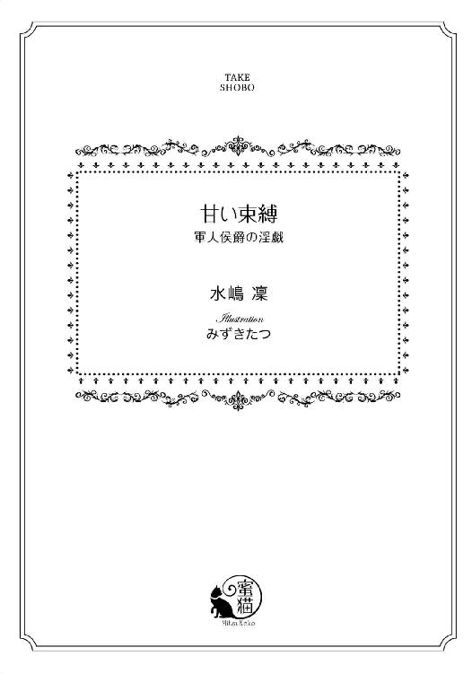
この作品は縦書きでレイアウトされています。
また、ご覧になる機種により、表示の差異が認められることがあります。
一部の漢字が簡略字で表示されていることがあります。
イラスト／みずきたつ
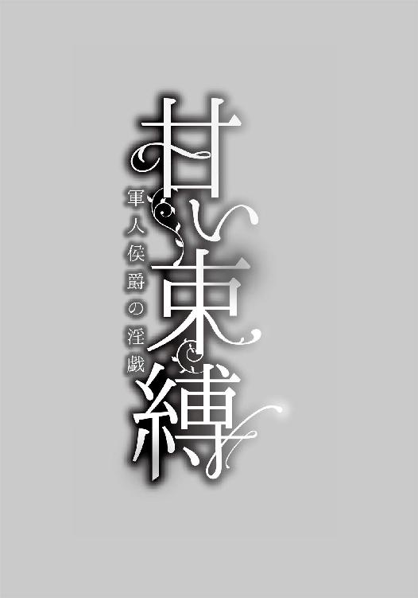
第一章 過去からきた恋人
「カール、カール！ ひどいわ。また、リラリウムに水をやるのを忘れたの？」
アリシアは少しだけ声を荒げて研究室内を歩き回った。
彼が平民の、しかも女で年下の自分の下で働くのを面白く思っていないことは知っている。けれどこれも仕事なのだ。最低限のことはやってもらわなければ、カールの立場だって悪くなるだろう。
ここは薬草園と併設された薬学研究所だ。国軍の支援も受けており、軍の医療機関に薬を卸す施設であるが、職員は自分も入れて数名しかいない。
そこに軍から派遣されてきたのが、カール・ドナフィーという子爵令息。国の貴族は若いうちに二年間の兵役につく義務を負うので、その一環なのだろう。だが健常な若い男性、それも名門貴族の子息であるにもかかわらず、こんな辺境の研究所の雑用に飛ばされてくるくらいだから、勤務態度はお察しだ。
カールに手伝って貰わなくても日々の業務には差し支えないのだが、滅多にない外出で彼の仕事のチェックを一度忘れただけでこれとは！
アリシアは流行ではない首元までつまった暗い色のドレスの裾を捌きながら、できるだけ早足で歩いた。胸の豊かさを隠すようにきつめの下着を身につけている。ほっそりして首が長いせいか、かかしみたいだと陰口を叩かれるのには慣れてしまった。
「カール！ 聞いてるの？」
書類仕事もこなす執務室の奥、一番良い回転椅子に深く腰掛けているらしい人影を見つけて近寄ろうとしたアリシアは、ふと足を止めた。
それは予感とも言いがたい、なんとも言えない微妙な違和感だった。
「成長期のリラリウムに水をやっていないのか、それは許しがたいミスだな......首にして正解だったよ」
相手は歌うように言った。
よく響く声がアリシアの耳を打つ。大好きだった柔らかく美しいテノール。
くるりと椅子を返して、こちらを振り向いた男性はカールじゃなかった。けれど見知ったその顔に、アリシアは息を呑んだ。
「レイモンド......」
陽の光を受けて柔らかく輝く金色の髪、少し冷たくも見えるアイスブルーの瞳。その目が優しげな光を湛えて、細められる瞬間を知っている。
いや知っていた......とでも言うべきか。
懐かしさのあまり口元を手で覆い、一瞬だけ喜びに身を委ねそうになった。
だけど、今は懐かしい過去でも夢の中でもない。
それを思い出して、アリシアはみるみる顔を強張らせた。
三年前より精悍さを増した彼は、底光りする瞳でアリシアを見つめながら、ゆっくりとこちらに歩み寄ってくる。
純白に臙脂色のネクタイと肩章、それに金をあしらった軍服は、ルヴェールランド海軍のものだった。すらりとした長身の彼にはよく似合う。左肩についた階級章は大佐の位を示している。実家の後ろ盾があるとはいえ、彼の年齢を思えば異例の出世と言うべきだろう。
「久しぶりだね、アリシア。......いや、婚約者殿、と言うべきか」
アリシアは一歩、後退った。
「婚約は解消したはずよ。手紙と一緒に指輪をお返ししたわ」
「一方的な、理由の一つも書いていない手紙がね。僕は承諾した覚えはない」
レイモンドの目が冷たく輝いた。思わず踵を返して逃げだそうとしたアリシアは、手首を掴まれそのまま壁に身体を押し付けられる。
「逃がさないよ」
レイモンドは片手でアリシアの両手首をまとめて掴んで頭の上に掲げさせた。もう一方の手で俯こうとするアリシアの顎を掴み、自分の方を向かせる。
「やっ......」
見たこともない強い眼差しに射すくめられて、アリシアは身を震わせた。怒っていてもレイモンドは美しい。
「僕が怖いの？ あんなに親しくしていたのに？」
レイモンドは責めるように言った。
「それとも、あのときのことは全部、偽りだったのかな......君は嘘がうまいから」
「............」
答えられないでいるアリシアに、レイモンドは、ふっと微笑みを浮かべる。
「それでもいいよ、もう捕まえてしまったからね。君の本心がどこにあろうと二度と離さない」
「どういう、こと......」
問いかけるアリシアに、レイモンドは長い睫毛を伏せるようにして囁くように言った。
「喜ぶといい。いい知らせだよ。君の発見が認められた。レイスとオージェを掛け合わせた薬草を君のレポート通りに煎じれば、今、前線で流行っている例の病は食い止められる。少し時間がかかるが完治させることも可能らしい」
「本当!?」
思いがけない朗報にアリシアは顔を輝かせたが、皮肉気に唇をほころばせるレイモンドを見ていやな予感を覚える。
「それに伴って、ここは最重要機密の拠点となった。完全に軍の監視下におかれ、君の行動もしばらく制限される。勿論、生活の不自由などはさせないから安心するといい」
「それって......」
レイモンドはうっとりするような微笑みを浮かべた。
「監視の責任者は僕だよ」
「そんな！ 海軍のあなたが、何故そんなことを？」
白い軍服に目をやって聞くと、レイモンドは満足そうに頷いた。
「こんなときでも冷静に状況判断をしようとするんだね、変わっていなくて嬉しいよ」
「答えて！」
レイモンドはさらりと言った。
「おかげさまで兵役先でも順調に出世できていてね。仕事には困らないけれど、さすがに少し疲れた。休暇でも貰おうと思った矢先にこのニュースを知った。名簿に君の名を見つけたんで、是非とも旧交を温めたいと思って休暇がてらの任務に志願したというわけ。理解してもらえたかい？」
「なんで......」
「君がそれを聞くの？」
不服そうなアリシアにレイモンドは眉をあげた。
「ちなみに、ここの研究所に出資していた財団は、すべてヴィリエ侯爵家......僕の家が買収したよ。公私ともに、ここは僕の支配下だ。アリシア、君はここの研究所に十年の専属契約を結ぶことで少なくない給与を前借りしているよね。住むところも遠く離れた親戚を除けばここだけ。......君はここから逃げられない」
アリシアは息を呑んだ。
「ま、今度の発見で報奨金も出るだろうし、自由になる期日は前倒しできたかもしれないけどね。残念でした」
レイモンドはなんでもないことのように軽く言った。
「僕がもう、君を離さない」
アリシアは、唇を噛んだ。
「そんなに、私が憎いの......？」
レイモンドは眉を上げる。
「憎い？ ああ、憎まれるようなことをしたってことだね。美しくて残酷な僕のアリシア」
ぎりっと、手首を掴む手に力を込められた。
「でも安心していいよ。僕は自分のものは大切にする主義だ。僕の手の中にいるなら......ね」
蒼い目が、狂おしいような光を湛えて近付いてくる。
ひんやりした感触が唇に触れた。いつもの彼の口付け。最初ひやりとして、触れているうちに徐々に熱くなってくる。
慣れるほど数を重ねたわけでもないけれど、覚えていた。
催促するように唇を舌でつつかれるのに反発して、固く引き結ぶ。だけど顎を強く掴まれると、ひとたまりもなかった。
彼の舌が咥内に侵入してくる。
「んんっ......」
両手首を放されても、抵抗できない。腰に手を回され引き寄せられたかと思うと、顎を掴んでいた手が後頭部に回り、まとめいていた髪をさぐり、ほどいてくる。
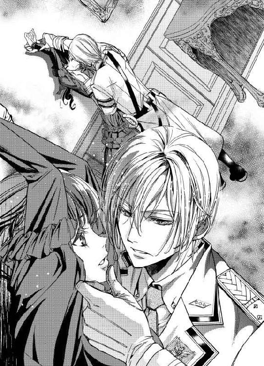
ふぁさり...と黒髪が背にかかる感触を覚えた。
レイモンドの舌は怯える舌を絡め取り、吸い上げ、なおも口内を舐め回した。
「はっ......ああ」
時折息を継ぐようにわずかに唇が離れ、また角度を変えて重ねられる。上あごの部分をなぞられると、ぞくぞくするような感覚が背中に走った。
うっすら目を開けると、彼もうっとりした目でアリシアを見つめている。
かすかに漏れる吐息は、ペパーミントのような爽やかな香りがした。
彼とするキスはいつも気持ちがいい。酔ってしまいそうなほど。
再び奥に差し込まれた舌に、そうっと歯をたてると、くすりと息のような笑い声が聞こえた。
「......覚えているんだね」
ちくりと苦いものが胸をよぎった。
アリシアは熱に浮かされたような頭の中で、遥か過去へと思いをはせていた。
◇◆◇
「またここに居るんだね」
声をかけられ顔をあげたアリシアは、思わず目を丸くした。まるでおとぎ話の王子様みたいな容姿の青年が、優しく微笑んでアリシアを見ていたからだ。
すらりとした長身だが、背筋がしっかり伸びているせいか、ひ弱な印象はない。さらさらの金色の髪に透き通ったアイスブルーの瞳。整った顔立ちは他人に関心の薄いアリシアでも、同じクラスの人ではないと断言できるくらいには印象的だった。
ただ、容姿はともかく服装はいただけない。柔らかな素材のシャツとトラウザーズは、どことなく地味で垢抜けない感じがした。
生地が上質なのはわかるが、型が古くさいのだ。
そのためでもないだろうが、これほど顔立ちがいいのに、周囲の女生徒は彼を気に掛けていないようだった。
「僕も、ここに座っていい？」
耳に心地よい声で遠慮がちに尋ねられ、アリシアはとまどった。
気候の良いときに好んで使う学院の図書館の二階のテラス席は、今も人はまばらで、わざわざ同じ机につくほどではない。
「ここが一番、気持ちよさそうだから......ダメかな？」
少し寂しそうに眉を寄せて首を傾げられてしまい、アリシアは小さく頷いた。彼は、ほっとしたように笑った。
「ありがとう」
アリシアの隣に腰掛け、その青年は持っていた重そうな本を開いた。それがアリシアもつい最近読んだ天文学の最新の研究書だったから、ちょっとだけ彼に興味が湧いた。
そのまま微動だにせず本に集中する姿は、まるで石像のようだ。それをなんとなく眺めていると、彼は不意に顔をあげてアリシアと視線を合わせた。
アリシアは見ていたことが気まずくなって、さっと目をそらし、自分の本に集中しようとする。彼がほんの少し身を寄せてきたのを感じた。
「君......アリシア・ダルトンだよね、Ｃクラスの」
「え、ええ......」
「こないだ、ベイリー先生に出してた薬草学のレポート読ませてもらったんだ。興味深かった」
「え、ええっ！」
アリシアは跳びあがった。あれは先生以外に読ませる気はなかったのに！
けれど目の前の王子様みたいな青年はからかうような様子もなく、真面目な様子でアリシアを見つめて、言葉を続けた。
「ただ、カツィタンとミンネを掛け合わせるのはいいけど、ちょっと種が違うんじゃないかな。できても一回限りかもしれない。ミンネの代わりに、レイスではだめかい？」
「それも考えたけど......」
アリシアは躊躇いながらも口を開いた。
見知らぬ、それもこんな目立つ容姿の男子と話をするのは怖い。けれど生物学の教師が興味を持ってくれただけ、重要な案件を複数抱える教師の研究議題の一つに加えられただけの自分の研究を、誰かに話せるという誘惑には抗えなかった。
一つ言葉を発せば二つ、二つ返せば三つのやり方を示してくれる。けれど、でしゃばるわけでもなく、アリシアが何か言いたいと見るや素早く促すように聞き手に回り、口べたな彼女の発話を待ってくれる。青年の話術は巧みだった。気付けば借りだした本もそっちのけで、ノートを開き、図や式を書き殴って議論に熱中していた。
閉館を告げるベルの音に、アリシアはそのやりとりに夢中になっていた自分に気付く。
青年は残念そうに帰り支度をすると、柔らかく告げた。
「僕は明日もここに来るから、また会ってくれるかな。君と話すのは楽しいよ」
「それはいいけど......私、あなたの名前も知らないわ」
「あれ？ そうだっけ？」
青年は意外そうに目を見開いた。二人で見つめ合い、思わず笑み崩れる。
「確かにそうだった、ごめんごめん」
そうしてやっと、アリシアはレイモンド・バウスフィールドの名前を知ったのだった。
アリシアが通っていたオルドリッジ学園は、その生徒の半数を貴族の子弟が占めていた。
だが長子以外には相続権がなく、周辺でも有数の軍事国家でもあるこのルヴェールランドでは、爵位ばかりに価値をおかない。有力な貴族の次男三男が思いがけずに頭角を現すことも、意外な後ろ盾を持っていることも珍しくないからだ。
同時に、アリシアのような富裕な商会の娘でも、容姿や才覚が優れていれば、いくらでものしあがっていくことができた。彼女がクラス内で取るに足らないものとして孤立しているのは、ただその大人しい性格と、ありふれた容姿のせいだ。
レイモンドはアリシアと同じように性格こそ穏やかで服装もパッとしなかったが、現在勢力のあるランド公爵の三男であったし、学業も優秀で、なおかつあの容姿である。アリシアが思うほど人気がないわけではなかった。
彼に取り巻きや色目を使う女子が少なかったのは、ただ彼が騒がれるのを好まず、時としてあからさまに不快感を示すことも少なくなかったからだ。
当時のアリシアはそれに気が付かなかった。
アリシアはただ学問や本の話ができることが嬉しくて、レイモンドとの交流を深めていた。その中にはレイモンド個人への好意ももちろん含まれていたけれど。
初めてキスしたのは、帰りが遅くなってレイモンドの馬車で送ってもらったときだった。
揺れたはずみに身体のバランスを崩して、彼に抱き留められたとき。
目があった。それを外せなかった。
そうして幾ばくか視線を絡ませた後、二人は自然と引き寄せられるように互いの唇を合わせていた。
アリシアがレイモンドのことを「レイ」と呼ぶようになったばかりの頃だ。
唇を離した後、自分たちが何をしたかに気付いてアリシアははっと息を呑んだけれど、嫌な感じはしなかった。
身を起こそうとしたアリシアの身体を、レイモンドはもう一度、しっかりと抱きしめる。その優しい抱擁を振り払えない。
「君の瞳の色が凄く好きだって、言ったかな......」
アリシアの髪を撫でながらレイモンドは告げた。
「君に近付いたのは話がしたかったからだけど、近付いたら、あんまりにも綺麗で息がとまりそうになった。宵闇の菫色をしているよ」
「私......私も」
アリシアは、レイモンドの体温にうっとりしながら小さな声で答えた。
「あなたの淡い色の目がとても好き。私を見るとき、少しだけ色が濃くなるのも」
「髪の毛も好きだ。温かい夜の色で、柔らかくていい匂いがする」
「あなたのは、本当に混じりけのない金色ね」
他愛のない言葉で、他愛のない内容で互いを褒め合った。
心臓がうるさいくらいに音を立てていて、自分が彼に惹かれていることを知る。
それはただ、お互いの知識とか興味の対象が似通っているからというだけではなくて。もっと身体の奥から相手を求めるような、不思議な感覚だった。
寄り添った身体を離したくなかった。
すぐに馬車が家についてしまって、離れざるをえなかったけれど。
そうして、少しずつ、少しずつ、二人は距離を縮めていった。
一番深く触れあったのは、レイモンドに誘われて彼の別宅に遊びにいったときだった。
都の中心部から離れた屋敷は、将来三男坊である彼に与えられる予定とのことで、当時から彼が私用に使うことが許されていた場所だった。屋敷自体はアリシアの実家よりも少し小さくて、大貴族の邸宅というにはこぢんまりとしていたが、手入れが行き届いていて気持ちが良かった。
なにより地下にまで広がる書庫の、その蔵書のすばらしさといったら！
何日滞在しても飽きないだろうそこに感嘆の溜息をもらしながら、あれこれ喋った後、それぞれがお気に入りの本に没頭した。
そのはずだったが、座っていたソファのあまりの心地よさに眠ってしまっていたらしい。
気がついたらレイモンドが覆い被さるような格好でそこに居て、見たことのないような色の瞳でアリシアを見ていた。
「アリシア......好きだよ」
彼はわずかに掠れた声でそう告げた。
彼の声が好きだと伝えたことがあったろうか。
アリシアはぼんやりとそんなことを考えた。気持ちは不思議と落ち着いているのに、彼の声を耳元で囁かれると、胸の動悸が激しくなる。
「ん、私も......好き」
アリシアは夢心地で答えた。レイモンドが息を呑む気配が聞こえる。
「キスして、いい？」
「ん......」
眠りの後のけだるさが、心地よくアリシアを取り巻いていた。
レイモンドに見つめられるのも、彼の体温に寄り添われるのも気持ちがいい。アリシアは答える代わりに目を伏せた。彼の顔がゆっくりと寄せられる。
深いキスはまだ数えるほどしかしていなかったが、最初のぎこちなさは薄れていた。遠慮がちに入ってくるレイモンドの舌に導かれるようにして、柔らかな舌を絡ませ合う。
歯茎をなぞられ咥内をかき回されると、驚くほど気持ちがよかった。
「アリシア、僕の舌にそうっと歯をたててみて」
レイモンドは唇を離した後、熱っぽい声で囁いた。
「いたく......ない？」
「いたくないように優しくしてほしいんだ、できる？」
「やってみる......」
アリシアは素直に頷いた。レイモンドに傷をつけたくない。
恐る恐る口の中の舌に歯をたてる、というより這わせるような力でなぞってみる。
「んっ......」
レイモンドの唇から苦痛ではない声が漏れた。それに力をえて、なおも柔らかく歯をたてる。
「いたくないの？」
「痛くないよ......僕も、アリシアの、噛んでいい？」
「うん......」
少し怖かったけれど、レイモンドなら平気だった。アリシアはおずおずと舌を伸ばす。
先をほんの少し噛まれた。痛くはない。ただぞくぞくと変な感じがする。
二人して、飽きるほど口付けを交わした。
「アリシア、怖くない？」
「どうして？」
「だって......」
レイモンドは、もう一度、ゆっくり歯でアリシアの舌をなぞった。
「ここを本気で噛みちぎられたら、死んでもおかしくないんだよ」
「それは......あなただって......」
「うん、だから、これは、お互いを信頼してる証なんだ」
「そう......そうね」
アリシアは、ゆったりと笑った。
「少しも怖くないわ」
レイになら、殺されてもいいと思った。
「アリシア......」
彼女に無理がないような体勢をとっていたレイモンドが、徐々に彼女を押さえつけるように体重をかけてくる。苦しいとは思わなかった。むしろ心地よさを感じ、彼の頭に腕を回した。
レイモンドが肩口に顔を埋めてくる。
「アリシア。君に、触れたい......許してくれる？」
レイモンドのキスが唇からそれて、アリシアの首元を吸い上げた。ぞくぞくとした快感が走る。嫌ではない、嫌ではなかった。
アリシアは抵抗も返事もせずに、ただ熱い息をもらした。レイモンドの掌が首元のホックにかかる。
「滑らかで、陶器のような肌だね......」
ホックをはずしながら、レイモンドの片手がドレスの上からアリシアの胸の膨らみにそえられた。そうっとやわやわと揉まれる。
「レイ......」
何をされているかはわかっていた。その先にあるものも、たぶん。
そうなってもいい、というほどの覚悟はなかった。ただ、拒む気が起きなかった。
アリシアの顔と、首筋、手の先、あらゆるところにキスを降らしながら、ゆっくりとレイモンドはアリシアの服をくつろげさせた。下着に包まれた胸が露わになる。
「恥ずかし......」
ようやくアリシアは、ゆるく抵抗した。レイモンドの肩を押して離れてもらおうとする。けれどレイモンドは引かなかった。
「あと少しだけ......ね」
なだめるようにアリシアの髪を指で梳き、安心させるように肩を抱いてくる。それだけでアリシアのなけなしの理性など、ぐずぐずに溶けてしまう。
レイモンドの手が下着の紐をほどいて、アリシアの乳房を取り出してしまった。
「あ、......」
アリシアは唇を噛んだ。恥ずかしい。けれど気持ちがいい。
レイモンドの少し体温の低い指で胸をなぞられると、関係ないはずの、おなかの部分が熱くなった。レイモンドの掌全体で、そうっと膨らみを包み込むように触れられると、うずうずするような不思議な感じがする。
「尖ってきたよ......」
「ひんっ......」
尖った部分を指先で摘ままれた。押しつぶすように力を込められ、かと思うと、くりくりと弄られる。
「肌が上気して、ピンクになってるよ、気持ちいい？」
レイモンドの唇が乳房の谷間に触れた。何かを期待してぴくりと身体が反応する。レイモンドは焦らすように膨らみの上を吸い上げ、いくつも印をつけた。
強く吸い上げられると少しちくりとして、痛いけれど心地いい。
「ほら、見てごらん、アリシア。花びらが散ったみたいだよ」
楽しそうなレイモンドの声に、ぎゅっと目を閉じたまま首を振る。くすり、と彼の笑い声が聞こえた。
「恥ずかしいの？」
ぶんぶんと首を縦に振って肯定するが、レイモンドは納得してくれなかった。
「それとも、じれったい......？」
指先が尖りをさっと掠めた。内心を見透かされて、アリシアは真っ赤になる。
「やっ......」
さっきより強くレイモンドを突き放そうとして手首を掴まれた。淡い色の青が彼女を見据えている。
「嫌とは言わないで、アリシア......」
ゆっくりと、レイモンドの掌が乳房を持ち上げるようにして握ってくる。指と指の間に尖りを挟まれて、全体にゆったりと揺さぶられた。心地よさが全身を覆った。悪戯をするように指先でくるくると尖りの間を撫でられて、柔らかく擦られて、息が荒くなっていく。
「拒まないで、気持ちよくなって。僕が君を欲しがるくらいに、君にも僕を欲しがってほしいんだ」
「レ、イ......」
彼が泣きそうになっている気がして、アリシアは眉を顰めた。
本当に嫌なわけではない。嫌ならそもそも、ここまで許していない。ただ、一度に初めてのことが多すぎて、付いていけないだけなのに。
黙ってしまったアリシアをどう思ったのか、レイモンドは彼女の耳たぶを軽く噛んだ。また別のところがぴくんとする。
「ああ、ここも？」
目敏くレイモンドに反応を見つけられ、耳孔のまわりを執拗に舐められた。
「あ、ああっ！ いやああ」
ぞくんぞくんと、肩のところに未知の感覚がわだかまる。知らず知らず、アリシアは脚を固くとじて擦り合わせていた。
なにかが来ようとしている。
それが来たらどこかに掠われてしまって、戻ってこられなくなりそうだ。
「やめてほしい？」
真剣に覗き込むレイモンドの瞳に、涙目になりながらも、アリシアは首を横に振った。
恥ずかしくて恥ずかしくて、ちょっと怖いけれども、ここでやめてほしくなかった。
「よかった」
レイモンドは、安心したようにちょっと笑って、ちゅうと、乳首を吸い上げた。
「ああああああっ」
アリシアは身体を反らした。呼吸が速くなる。快楽の塊がそこに集中していて、それを吸い上げられた気がした。そんなところが、そんなに感じるとは思ってもみなかった。
「気持ちいい？」
乳首から唇を離したレイモンドがなおも聞く。
アリシアは手で顔を覆った。レイモンドが心配そうな声で尋ねる。
「なんで顔を隠しちゃうの？ よくなかった？ こんなことをする僕は嫌い？」
アリシアは横に首を振る。
「聞かないで......」
アリシアは小さな声でやっと言った。
「え？」
「レイのすること、なんでも......いやじゃない、から......聞かないで」
「アリシア！」
レイモンドの顔が明るく輝いた。
「アリシア......ああアリシア、......てる.........」
熱に浮かされたような声が耳を打つが、最後がよく聞こえなかった。衣擦れの音が聞こえた。レイモンドがシャツを脱ぎ捨てるのが見えた。そのまま温かな胸に抱かれ、肌と肌を密着させられる。うっとりするくらい気持ちが良かった。
その後も、何度も覚えたばかりのキスをした。
甘いことばを囁かれ、胸や首筋や、耳や脇や。上半身のありとあらゆる弱いところをレイモンドに見つけられ、愛撫され、舐められた。彼に強請られれば、アリシアも彼の身体を吸ってみたり、歯を立てたりした。
時折、間違いのように触れあった下肢が熱を帯びているような気がしたけれど、それには二人ともあえて触れなかった。
「今にして思えば、おままごとみたいなお付き合いだったよね」
あの頃と同じ深く美しい声に、冷たい言葉を投げかけられて、アリシアは我に返った。
昔を思い出すキスにうっとり浸って、レイモンドに身を預けてしまっていたのだ。慌てて身を離そうとするアリシアを彼は許さず、余計に引き寄せられる。
「レ......。やめてください。ミスター......バウスフィールド」
辛うじて身を捩って顔を背けると、強い視線が横顔にあてられるのを感じた。
「へえ、そういうこと言うんだ、ミス・ダルトン？ いや、ドクターアリシアとでも言うべきかな」
ドレスをまとった脚をレイモンドの膝で割られ、露骨に腰を密着させられる。
アリシアは息を呑んだ。スカートの奥の敏感な部分に、固くて熱い存在が押し当てられたのを感じる。
「まずは旧交を温めるべきかとも思ったけど、それなら必要ないね」
レイモンドは、冷たい目でアリシアを見下ろした。
「他人同士だって、愛し合うことはできるさ。身体だけなら」
そうして再び、噛みつくようにアリシアに口づけた。
「んーっっ」
顎を掴まれ、蹂躙されるような口付けは受け入れられない。
けれど先ほどの優しさの混じったキスに記憶を呼び起こされた後では、完全に拒むことも難しかった。言葉を封じられたまま、手袋に包まれた手がドレスの裾をまくりあげ、中に侵入してくる。
そのまま、太腿をそっとなで上げられた。
「やめっ......」
「君はもうあの頃の君じゃない......僕だって」
熱くなった吐息が首筋にかかると、確かめるように大きな手が太腿を撫で回した。逃げようとすれば深く抱き込まれて、うなじに歯を立てられる。
「君の首筋は、相変わらず細くて透き通るように白いね。噛みつくか、締め上げたくなる......いつもそう思ってた」
「いやっ......」
あの優しかった彼の口から出ているとはとても思えない言葉に、アリシアは首を振る。
「そう、君にそんなふうに嫌だと言われるのが怖くて、僕はいつも途中で退いてしまった。ああ、......まだるっこしいな」
押し殺したような声が耳を打つ。レイモンドは腰に差してあったらしいナイフを取り出した。
「い......や」
アリシアは今度こそ恐怖にすくみあがった。レイモンドは唇だけで笑う。
「安心していい。君に傷一つ付けやしないよ、僕はわりと上手いんだ」
言いながら、レイモンドはアリシアの胸元に刃をあてた。目にもとまらない早さで質素なドレスに裂け目が入れられ、下着ごとびりびりと引き裂かれていく。
「ああ......綺麗だよ」
レイモンドは、うっとりしたような声でそう言った。
あっという間にボロ布になったドレスを抱え込んで、アリシアは震えるしかない。露わにされた胸を腕をクロスさせて隠すと、レイモンドは低く笑った。
「隠すのはそこでいいの？」
「ひっ」
太腿を撫で上げた手が今度はまっすぐに内股に向かった。下着ごしに、ふっくらした恥丘をくすぐるようになぞられる。
「いやっ」
身を捩っても許されなかった。以前のレイモンドは決して触れなかった箇所に今の彼は躊躇なく触れ、アリシアを曝いてしまう。
指が薄い布越しに秘密の溝を捕らえた。露骨に指を当てて、ゆっくりと行き来される。
「温かい、けど、湿ってるね」
「う......」
アリシアは目を閉じて、嫌々をするしかない。
「もしかしてあの頃もこんなふうに濡らしてたのかな、触れられてもいないのに？ もどかしかった？」
蔑むように言われてさらに固く目を閉じる。答えられるわけがない。
恥ずかしくて、惨めで、このまま消えてしまいたいと思うのに、レイモンドが耳元で囁く。
「僕はずっと我慢してたよ、滑稽なくらいね」
びりっと、下肢を覆っていた下着がナイフで引き裂かれた。
手袋を脱ぎ捨てる気配がする。ひんやりした、けれど人肌の体温のある指にいやらしく濡れそぼった茂みをなぞられて、アリシアは震えた。
指は止まることなく秘裂を割り、花びらをかきわけるようにして入ってくる。
「やあっつ」
自分でも一度も触れたことのない場所に指を挿入されて、アリシアは声をあげた。指は膣口を確かめるようになぞって、すぐ二本に増やされる。
「んんっ」
異物感はあったが、すでにしとどに濡れてしまっているそこは増えた指もなんなく受け入れた。だけどその分、圧迫感が増す。
「ぬるぬるしてて、柔らかいよ。すぐに入りそうだ。」
レイモンドは、ぐちゅぐちゅと指を動かしながら嘲るように言った。顔を背けているアリシアの耳孔も舐め回し、息を吹きかける。ぞくぞくと背筋が震えた。
誰も受け入れたことのないそこを探られるのは苦しくて怖かったけれど、もう声を上げる気力もない。
レイモンドは二本の指で、執拗にそこをかき回していたが、やおら引き抜くと、ぺろりと指を舐めた。アリシアに見せつけるように舌を這わす。
「......っ」
アリシアは羞恥のあまり顔を背けた。レイモンドは眉をあげると、アリシアの片脚を抱えあげ、今度は指を三本まとめて奥深くに突き立てようとした。
「やっ、あああ、痛っ......」
ギチギチと無理やりこじあけようとされる苦しさに、アリシアはたまらず甲高い苦痛の声を上げた。レイモンドはふっと眉を顰めて指を引いた。指先にうっすらと血がついている。
レイモンドは、驚愕したようにアリシアを見下ろした。
「まさか、初めて、なのか......？」
アリシアは泣きながら、頷いた。
「そうか......」
レイモンドは少し考え込むように黙り込むと、床に崩れ落ちようとするアリシアの身体を横抱きに抱き上げた。肌も露わな彼女を抱えて歩き、研究所の一番広い机の上に横たえる。
アリシアはひっと息を呑んだ。
「やめて......お願い......」
ぐったりと投げ出した脚を割られ、引き寄せられてアリシアは震えながら懇願する。彼の意図はあまりにも明白だった。
「嬉しいよ。誰にも奪われていないなんて。でも......もう待たない」
レイモンドはトラウザーズの前をくつろげた。アリシアは恐ろしさのあまりそちらに目を向けられない。
「この場で、君を僕のものにする、完全に」
両脚を赤子のように抱え上げられ折り曲げられた。ぐっと引きよせられ、臀部が机の端に寄せられる。
「ひっ」
濡れそぼった膣孔に熱くて弾力のある質量が押しあてられた。つぷりと先が中に沈む。
「いやっ、いやぁっ......」
アリシアは無茶苦茶に力を入れて抗った。ここでレイモンドに犯されることは、大事にしまっていた彼との過去まで汚されることと同義のような気がしていた。
（ああ、違う。あの時も今も、レイは私のことを愛してなどいなかった......）
だけどあの頃なら、少しは何かがあったように思う。
身体を寄せ合って、二人そろって甘い溜息をついたあの日。恋でも愛でもない、情の欠片みたいなものかもしれないけれど。
あのときなら、......夢を見られたかもしれないのに。
「言ったろう？ もう待たない」
アリシアのなけなしの抵抗と懇願は、レイモンドにとって何の障害にもならないようだった。彼はゆるやかな抽挿を繰り返しながら、彼女の中に進んでくる。
「あ、ああ......」
アリシアはかぶりを振って涙を流した。浅いところを行き来されるだけなら痛みはない。むしろ入口を擦られるのに、うっすらと快感がある。
だからこそ、汚されているという思いは強かった。
入口をぬるりとレイモンドのものが滑る。狭い蜜口に迷うように留まっていたそれに、ぐっと力が込められた。
「ふっ......」
アリシアは身をすくめた。メリメリとこじあけるようにしてレイモンドが入ってくる。
熱く、生き物にように脈打つそれは、人体であるのが不思議なほど硬い凶器となって、アリシアを蹂躙した。
「痛っうう......」
苦痛の声をあげたが聞き入れられない。余計にぐぐっと太股を押さえつけられ、無理矢理に受け入れさせられる。血の臭いが鼻を打った。内股を温かいものが流れていく。
ぷちりと、自分の中で何かが弾けたのを感じると、少しだけ楽になった。もう終わりかと思うのに、さらに先があり、灼熱が中を犯した。
「くっ.........う、うん、」
最後の方は、痛みより圧迫感が強かった。押しつぶされるような感触にはくはくと唇を開けて助けを求める。ずうっと、奥深くに重い感触が届いて、レイモンドが熱い溜息をついた。
「ああ、本当に初めてだったんだね......」
「いや......引いて」
蚊の鳴くような声で訴えるアリシアに、レイモンドは少しだけ哀しそうに目を細めた。
「こんなになっても、君は、僕を拒むの？ せっかく一つになったのに」
奥にぴったりと収まった肉棒が、責めるように小刻みに、揺らされた。
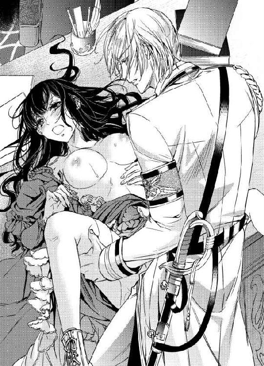
「っつっ.........」
破瓜の痛みが蘇って、アリシアはぴくりと震える。
レイモンドは引導を渡すように、少しだけ腰を引き、再び打ち付けた。アリシアは身体を跳ね上げた。
「ああっ！」
「もう遅いよ......」
レイモンドは、薄い微笑みを浮かべながら言った。
「全部、挿入れてしまったからね......。もう君は処女じゃない。もっとも、今まで処女だったなんて、思いもよらなかったけれど」
「んっ......」
引き裂かれた箇所をさらに抉るように動かされて、苦痛の声が漏れる。最初は容赦なかったけれど、それは段々ゆるやかで穏やかなリズムを刻み始めた。
「つれないアリシア。でも君の初めてを貰えて嬉しいから、少しは優しくしてあげるよ」
レイモンドはゆっくりと腰を回し、繋がっている部分の上部をそっと撫でた。ひくんと、アリシアの身体が震える。
「ここは、初めてでも感じるんだろう......？」
彼を受け入れた部分は、今もずくずくと痛みを訴えている。なのに、たしかにそこを撫でられると不思議な感覚がした。何かが身体の中から滲み出してくる感覚がある。
「...あ......あぁ......」
肌と肌がぶつかる音がする。レイモンドが、陰核を愛撫しながら腰を打ち付ける音だ。彼の唇が薄く開いて息が速い。少し苦しそうにも見えた。
「レイ......苦しい、の......？」
アリシアは、知らず手を伸ばしていた。台の上の彼女が、立っている彼を捕まえるのは難しい。ただ、彷徨うように手を浮かせる。
「アリシア......？」
とまどうようにレイモンドの手がアリシアの手を探り、指を絡ませた。アリシアはその温もりに安心して目を閉じ、涙を流した。
（これは以前の彼に捧げたんだと思おう......）
遠く甘い日々はすべて嘘ばっかりだったけれど、昔の彼は、優しかった。
あの日、あのとき、あの書庫で、強く求められたら拒みはしなかった......たぶん。
「あ、ああ......」
アリシアが落ち着いてきたためか身体が慣れてきたのか、痛みが徐々に薄れていった。その分、身体の中に彼を受け入れていることを、強く意識する。
（今、レイと一つなんだわ......）
二度と会わない。会えないと誓った人と、こんなことをしているなんて嘘みたいだ。
もう昔の、知っていた頃の彼とは違う人のようだけれど。
「んっ......ん」
ぬぷぬぷと濡れた音をたてて、熱い肉茎が媚壁を擦っていく。
その抜き差しのリズムに合わせて陰核を刺激されると、痛みの中に、何か違うものが湧き上がってくる。
温かい泉のようなものが胎内にあって、あとからあとから溢れてくるのだ。
「あっ」
身じろぎしたとき、膨れあがった楔が今までと違うところを突いた。ぴりりとした刺激に身体が跳ね上がってしまうのを止められない。
「ああ......ここ？」
レイモンドはアリシアの変化を見つけて、同じ場所を何度か突き上げた。
「やっ......ああん」
そこを抉られ、同じようにくりくりと花芯をこねられると声が止められない。
「気持ちいいの？ アリシア？」
何かに酔っているような声でレイモンドが言った。角度を変えて、擦りつけるように何度も何度も弱い場所を刺激されると、電流が流れるみたいに身体が反応した。
（気持ちいい）
こんな場所で、こんなふうに、ひどいことをされて、そんなはずはないのに。
「あ......あ......んん」
けれども襲いかかってくる感覚は強烈だった。膣奥で感じ始めているのに、一番感じる花芯も擦られると否定しようがない。
温かい蜜が自分の中から溢れ出すのがわかった。何度も何度も、一番奥に彼を打ち付けられ、自分の中が変わっていく。
「あ、あ......」
「ああ、そんな顔をするんだね」
レイモンドが、ふいに律動を緩めて呟いた。
涙と汗で湿った黒髪をなだめるように手櫛で梳かれる。
「ふっ............」
嫌なわけでも、哀しいわけでもないのに、優しく髪を触られると、ぽろぽろと涙がこぼれた。
「泣かないで......」
目尻を柔らかく湿った感触が触れた。レイモンドが身を屈めて涙を舐め取ったのだ。驚いて彼を見つめるアリシアに、レイモンドは自嘲するように笑った。
「なんて、そんなこと言っても無理か。嫌いなヤツにこんなふうに犯されてるのに」
アリシアは目を見開いて、弱々しくかぶりを振った。嫌いではない。ひどいことをされて困惑して、とても哀しいけれど、レイモンドを嫌ったことは一度もない。
いっそ嫌いになれたら、どんなに楽だったか。
アリシアの表情をどう思ったのか、レイモンドは唇を歪めた。
「相変わらず、嘘つきだね、アリシア。......すっかり騙されていたよ。でも、こうしている今は、本当だ」
アリシアの乳房を掌に収めながら、ゆっくりと彼が律動を再開した。
「う......ん」
痛みはずっと鈍くなっていた。その分、快楽は鮮明になる。
胸の先の敏感な部分を弄られながら、中の悦いところを擦られると、すぐにわけがわからなくなってしまう。
興奮してきたレイモンドに片脚をかつぐようにして、高く上げさせられ、ぐりっと奥を突かれると、苦痛ではない悲鳴がもれた。
「あ、あああああっ！」
「くっ......そんなに締め付けられたらもたない」
レイモンドが歯を食いしばるようにして呻いた。ぐっと中の彼が質量を増す。
アリシアは、圧迫感に喘いだあと、その可能性に気付いて目を見開いた。
「えっ、いや、レイ、お願い、それはやめてっ！」
悲鳴を上げるように言うと、さらに、ぐっと押さえつけるようにして腰を打ち付けられた。
「ひっ......」
「なにを、やめてって......？」
額に汗の珠を浮かべて、レイモンドは聞き分けのない子供を宥めるように言った。
「中で出すなとでも？ 初めて結ばれた恋人にそれはないだろう？」
アリシアに何かを知らしめようとでもするように、中をかき回し擦りつけてくる。
胎内で動くそれは、心なしかぴくぴくと震えて何かを吐きだそうとするように思える。
「あ、やあっ......」
「最後まで、いかせてもらうよ、君の中で、ね」
律動が激しさを増した。けれど、もう痛みはほとんど感じない。
慣らされた蜜壺は歓喜の声をあげるように、レイモンドの楔を包み込んで絡み付いていく。
「くっ、すごい......ね」
「いやっ、いやっ......」
「そんなこと言って......悦いくせに」
アリシアは、ひたすら首を振った。中で出される恐怖。子供が出来てしまうかもしれない恐怖。どちらもとても受け止められない。
それなのに、アリシアの意志などおかまいなしに、レイモンドに擦られる媚襞は喜々として甘い快楽を全身に広げる。
きゅうっと中が窄まり、レイモンドの形を覚えると、それだけ快楽も強くなった。
「いやっ、いやああ......」
自分のものなのに自分の心と反する身体が怖くて、アリシアは叫び続けるしかない。
嫌なのに、気持ちよすぎて、目の前が赤く染まる。
（だって、愛されてもいないのに）
「無駄だよ」
レイモンドが、アリシアの腰を引き寄せて、ぐっぐっと、単調な動きを繰り返した。
「気持ちいいよ......気持ちいいだろう。アリシア。僕を全部、受け入れて......」
掠れた声が耳を打つ。
ぴちゃりと、中が濡らされたような気がした。
気のせいかもしれない。ただ恐怖に震えるアリシアには、それがひどく恐ろしく感じた。
「いや......いや......」
アリシアは声をあげて身体を仰け反らせる。
「逃がさないよ」
呟いて、アリシアの脚を強く掴んだレイモンドは、突き上げながら息を吐いた。ぶるりと腰を震えさせる。
中の彼も震え、温かいものが何度か断続的に、アリシアの中に注ぎ込まれた。
「あ......あ......」
アリシアは目を見開いて、涙をこぼすしかできなかった。
その間にもレイモンドは腰を動かして最後の一滴までアリシアの中に出そうとする。胎内が濡らされていく。
ぬるり、と彼が抜き取られる気配がした。脚を下ろされるも、衝撃に硬直しているアリシアは何をされているのかよくわからない。
これで言い訳しようもなく、彼に犯され......身体を結んでしまった。
彼の精が、アリシアの胎内に撒かれ、もしかしたら、それは新しい命を結ぶかもしれなくて。
一体、自分はどうすればいいんだろう。
無防備になったアリシアの花芯を、レイモンドが強くこね回す。
「や、やめっ......あああ」
ピリピリと強すぎる刺激に身体を捩るも、彼は止めてはくれなかった。
敏感になった身体に思うさま愛撫を加えられ、強制的に高みに導かれて、アリシアはとうとう意識を手放した。
第二章 交錯する過去
目が覚めると、研究所内の自室のいつものベッドの中だった。アリシアは目を瞬かせながら身を起こし、くらくらする頭を押さえた。
（あれは、夢？）
そんなはずはない。身体のふしぶしが、何より一番奥のあらぬところが痛い。
ナイトドレスを纏わされた身体を見下ろすと、白い肌のあちこちに花びらのような跡が見えた。そこに昨日の彼のいい知れない激情と執着を見た気がして、アリシアはドキリとした。
（レイ......。どうして、あんな？）
彼に断りもなく、一方的に婚約を破棄して逃げ出したのは事実だ。しかし、それはレイモンドにとっても都合がいいことのはずだった。
（私に逃げられたことが彼のプライドを傷つけたから？）
美しくて、賢くて、名家の令息のレイモンド。そんな彼とはまるで釣り合わないアリシアから別れを言い出したことが、彼には我慢ならなかったのだろうか。
（わからないわ......）
ともかくシャワーを浴びようとベッドから下りたアリシアは、内股をとろりと伝うものの感触に顔を引きつらせた。
（さんざん、中に出された彼の......）
思わず平らなお腹を押さえる。たとえ運が悪かったとしても、昨日の今日で異変などわかりようもない。
非常用に溜めたままのお湯があったはずだ。それで洗い流そうとアリシアはバスルームの扉を開いて、戸惑った。そこには入れ替えたばかりのように、温かく、清潔なお湯が張られていたからだ。
施設に付属のボイラー場は三日に一度しか稼働せず、お湯の入れ替えもそのときでないと無理なはずだが。
「どういう、こと？」
慌ててあたりを見回したが、人の気配はない。
（今日はレイが......位の高い貴族な上に高位軍人でもある彼が来たから、特別に人がきて稼働しているのかもしれないわ。それでも、私の部屋まで取り替えてくれた理由はよくわからないけど）
アリシアはともかくもありがたくそのお湯を使うことにした。熱すぎずぬるすぎもしないお湯に入ると、人心地がつく気がした。
脚の間がずきずきと痛んでいる。
震える指で彼が入っていたところに触れるも、どうしたらいいかわからなかった。
もう溢れてこないように幾度も幾度も柔らかな布で擦る。透明な水が白く濁るのを、アリシアは見ないふりをした。
ただお湯につかり、ぼんやりと考える。
（レイモンドは......出ていったのかしら）
あの行為が彼を捨てたアリシアに対する復讐であるなら、彼はこの施設にはもう用はないはずだ。薬草や軍のことも嘘ではないだろうから、代わりの人員は寄越されるのだろうけど。
だけどそれだけなら、レイモンド自身がここにいる必要はない。
よく温まって身体を清潔にし、シュミーズの上にガウンを着こんだアリシアは、ほっと溜息をついて額を押さえた。
（これから......どうすれば、いいんだろう）
椅子の上で膝を抱え、爪を噛むもどうしようもない。レイモンドの言う通りアリシアはここから逃れられない。そもそも帰る家もないのだ。
（ともかく薬を完成させて、それで......）
きゅっと唇を噛んで窓際に寄ってカーテンを開く。もう朝のようだった。ノックの音が聞こえる。
「アリシア様、入ってもいいですか」
研究所にも通いの清掃員はいるが、掃除をするのは基本的に研究室と廊下くらいで、研究員の私室には立ち寄らない。戸惑いながらも返事をすると、カチャリと扉を開けてメイド姿の少女が入ってきた。
十四、五歳だろうか？ 茶色い髪に茶色の瞳、まだあどけなさを残した小柄な少女だ。
「レイモンド様が食堂でお待ちです。着替えをお手伝いいたします」
少女はぴょこんとお辞儀をして、そう言った。
「え、ええ？ あなたは......？」
「あ、すみません。クリスと言います。今日からアリシア様のお世話を言いつかっています」
「ええ？」
アリシアは目を白黒させた。
実家にゆとりがあったころは、アリシアにも世話係の侍女がいなかったわけではない。けれど、この研究所に来てからは何でも一人でやってきたのだ。そもそも研究所自体がそんな余計な人員を雇うゆとりは......。
（あ......）
──ここの研究所に出資していた財団は、すべてヴィリエ侯爵家......僕の家が買収したよ。
昨夜のレイモンドの言葉を思いだし、アリシアは口元に手を当てた。後援者が変わったのだと彼は言っていた。研究所は、レイモンドの家が買い取ったと。
けれど〝ヴィリエ侯爵家〟とはどういうことだろう。僕の家、と彼は言った。その通り、レイモンドの実家を指すなら、ランド公爵家と言わなければおかしい。
「あの、あなた、ヴィリエ侯爵ってご存知？」
思わず問いかけたアリシアに、クリスは目をくりくりさせて答えた。
「侯爵......レイモンド様のことですか？」
「彼、侯爵家に養子にでも行ったの？」
爵位を継ぐあてのない次男や三男が、嫡子のいない貴族の家に養子にいくのは珍しい話ではない。
「いいえ。先の戦いで軍功を上げられたレイモンド様に、国王陛下が何年も前に返上された爵位を授けて、領地も与えられました。レイモンド様自身がヴィリエ侯爵です」
「領地も......それは一代限りではないということ？」
「はい。これから先も続いていくお家ですわ。アリシア様とレイモンド様のお子様が継がれることになりますね」
「ええっ？」
アリシアは高い声をたてた。
「待って待って、それは間違いよ。なんでそういう話に！」
「え、だって、アリシア様はレイモンド様の婚約者でしょう？ 結婚されるのでは？」
「元......ね、そんなものとっくに解消してます。レイモンドとは......そう、昔の同級生というだけで」
「ええと......でも......」
ちょっと目を泳がせて、困ったようにうつむくクリスにアリシアははっとした。
そもそも気を失った自分を着替えさせたのは誰だろう。あの破れたドレスを始末して、そして入浴の準備をしたのは。
アリシアはうろたえて、早口で言った。
「いえ、ちょっとは親しくてそういうことも......あるかもしれないけれど。レイモンドとは結婚できないの。爵位を継いだと聞いたならなおさらよ。私はただの平民ですもの。世話の必要もないから、他のお仕事をもらってきてちょうだい」
「ええっ」
クリスはみるみるうちに顔を青ざめさせた。アリシアにとりすがるようにして訴える。
「そんなことをおっしゃらないでください。私が余計なことを言ったのなら謝ります！ けれどアリシア様のお世話をさせてもらえないと、私、仕事も行くところもないんです」
アリシアは驚いた。
「え......それこそ、ヴィリエ侯爵家とかなら」
「戦災孤児でろくに教育も受けていない私にはお屋敷務めはできません。追い払われて行くところもないときに、レイモンド様が門の外で声をかけてくださったんです。僕の婚約者ならあまり格式は気にしないだろうし、気も張らないでいいから......と......」
クリスの声がだんだん小さくなった。
「できることは少ないけれど、教えていただけたらなんでもやります。少しでもお役にたちたいんです。でないと......」
そんな憐れな様子に、アリシアは吐息をついた。
確かに研究所の人手が足りていない。昨日は軍の監視下に置かれるとだけ言われたが、例の薬の量産も求められるだろう。
この少女なら、少なくともカールよりは良い仕事をしてくれそうだ。
「なら一般的な侍女とは違う、私の手伝い全般、ということならいいわ。温室で植物の世話とかもあるのだけれど、できる？」
「いいんですか？ 勿論です。はいっ！」
クリスは顔を輝かせた。
「嬉しい、やっぱりアリシア様は優しいです」
「優しいっていうのとは......」
過分な評価にアリシアは困ってしまったが、今にもスキップを踏みそうなクリスの喜びには水を差せない。
（新人に仕事を教えるようなものと思えば......）
アリシアはそう思い直して、明るい声をあげる。
「とりあえず、着替えを手伝ってもらってもいいかしら」
ここには彼女が一人で着られるようなものしかないが、クリスが将来、侍女としてやっていくなら教えてもいいだろう。
「はい。準備しております」
元気よく差し出されたドレスに、アリシアは困惑した。
それは装飾こそ華美ではないものの、明らかに普段着ているものとは比べものにならないくらい上質で趣味の良いものだったからだ。
「これ......レイモンドが？」
「はい。他にもいろいろありますよ！」
クリスは嬉しそうにクローゼットに駆け寄ってそれを開けてみせる。一目見て、今クリスが出してきたドレスが、それでも比較的おとなしめなものだったとわかった。
クローゼットに掛かっているのは、アリシアが久しく見たことがないくらい極上の、仕立ての趣味のよいドレスの数々だ。
「ここには入りきりませんので、週ごとに入れ替えるようにと言われてます」
胸を張って自慢げに言うクリスに、アリシアは額に手をやった。
「待って。困るわ。私はここに仕事をするためにいるの。私が普段、着ているものを出してちょうだい」
「ええっ」
クリスは、大きな声をあげてから慌てて口を押さえた。
「それはすみません......不可能です。」
「できないって......」
「レイモンド様が、クローゼットにあるものはすべて処分するようにと言われて......」
眉を顰めるアリシアにクリスは慌てて言った。
「でも！ その、燃やすとか無駄にしていません。レイモンド様に許可をいただいたので、私、綺麗なものは古着屋さんに持っていって、他のはあのう、パッチワーク用に......」
「切り刻んでしまった......の」
上目遣いの言いよどむクリスに、アリシアは大きく吐息をついた。
クリスを責めても始まらない。
アリシアは仕方なくクリスが出してきた淡いピンクのドレスを身につけた。そこまで胸元が開いているわけではないが、首筋がかなり出ているのが心許ない。
のろのろとした足取りで食堂に足を向けると、案の定、そこにはレイモンドしかいなかった。
まだアリシアに気付いていない彼が物憂げな顔で窓の外を見ているのを、彼女は食堂の入口でそっと見つめる。
（夢じゃなかった......）
脚の奥の鈍い痛みを意識しながら、アリシアは唇を噛む。いまだ昨日の出来事を彼女はうまく処理できずにいた。彼にどんな顔をして会えばいいのか、わからない。
昨日は様々な衝撃でそれどころではなかったが、静謐な横顔を見せるレイモンドをのぞき見るのは楽しかった。
（前より少し逞しくなった？ それにすごく、綺麗......）
昨日も着ていた、海軍の真っ白な軍服がよく似合う。
以前は少し垢抜けずおとなしい印象があったのが、今はあの頃より段違いに洗練され、凜とした雰囲気があった。すらりとして背筋の伸びた姿は男らしいのに、綺麗という形容がよく似合うような気がする。
食卓の上に置かれた、白い手袋に包まれた手のすんなりした美しさ。
（大きいのに、指が長いからほっそりして見えるのよね）
自分の手と比べてみて驚いた記憶がある。同じくらいかと思っていたのに、すっぽり包まれるほど彼の方が大きかったからだ。
（あの手に......昨日......）
昨日の記憶が鮮明に蘇ってきてアリシアは唇を噛んだ。脚が震えそうになる。
そんな心の乱れが伝わったのだろうか、レイモンドはゆっくりとアリシアの方を向いた。
「おはよう。よく眠れたかい？」
かつてと同じ、一点の曇りもないような微笑みを向けられてアリシアは息を呑む。
「そんなところで立ち止まっていないで、ここにおいでよ。すぐに運ばせよう」
レイモンドは自分の横の椅子を引いて、手招きした。アリシアは迷ったが、結局は素直にそこに座る。
「運ばせるのじゃないわ。ここはカフェテリア形式で......」
トレイを持って、取りにいく方式だ。
「そのへんは改良したよ、朝食ぐらいゆっくりしたいしね」
レイモンドはあっさり言った。
その言葉通りに、見知らぬメイドがワゴンを押して現れ、二人の前に朝食を準備し始める。それも見たことがないくらい豪勢なものだ。
準備が終わったそこは、もういつもの研究所の食卓ではない。
「これは......」
「コックは近隣の研究所に移ってもらったよ、残りの職員も。食事は、これから我が家の者に作ってもらう」
「そんな......」
「君の研究は今や、重要機密だと言ったろう？」
突然の変化に二の句を継げないでいるアリシアに、レイモンドは事実を突き付ける。
「最低限の使用人を除いては、ここにはもう僕と君だけにした。ああ大丈夫。薬草の世話等は別に人を手配してるから」
淡々と告げながら、レイモンドはアリシアを見てふっと表情を和らげた。
「やはり、その色がよく似合うね」
優しく言われて、アリシアは反射的に言い返していた。
「困るわ、こんな華美なドレスばかり！ 私は仕事をしたいの」
「それですればいいだろう」
レイモンドはあっさり言う。
「汚れるとか気を遣うのは嫌なのよ」
「気にすることはない。汚れたら着替えればいいし、そもそも普段着だよ」
「あなたの感覚と私の感覚を一緒にしないでちょうだい。動きにくいばかりで研究の邪魔になるのよ」
アリシアは地団駄を踏むように言った。もうほぼ喧嘩腰だ。
なのにレイモンドはまったく意に介さず、彼女の手を取って、そっと撫でてくる。
「そうやって、こんなに手を荒らしてしまったの？」
アリシアはカッと頭に血が上る。器具の洗浄や薬草の手入れ、ここでの大抵のことは自分でやってきたアリシアの手は、ざらざらして擦り傷がある。とてもではないが貴婦人の手とは言えないだろう。
手を引こうとするが、レイモンドは放さない。
「何でも自分でやろうとするのは美徳じゃないよ、アリシア。薬の量産は必要だ。君はまず、指示をしてさらなる改良に努めてくれ。どうしても気になるなら白衣でも羽織ればいい。用意させるから」
「そんな、勝手に......」
「忘れたのかい？ 僕が君の監視役だし、この研究所も軍の管理があるとは言え、実質、僕のものになっている」
「だからって......そんな......」
アリシアは言葉に困って、目を瞬かせた。
レイモンドは、咎めるような彼女の視線を振り切るように目を逸らした。
「君は僕の指示に従っていればいい」
ぎこちない雰囲気の中で食事が終わり、アリシアはレイモンドに促されて研究室に向かった。
二人きりになって緊張するも、レイモンドはてきぱきと書類を取り出してアリシアに質問を始める。今までのレポートをくまなく精読したとしか思えない的確さに驚いていたアリシアは、矢継ぎ早に投げかけられる質問の方向性から、その意図に気付いて目を丸くした。
「あなたが、これから私を手伝うの？」
レイモンドは心外なことを言われたというように眉を上げた。
「僕では力不足かい？」
「いいえ、でも......あなたにはもっと、重要な仕事があるんじゃ」
「君が作り出した新薬の効用をより確かなものにして、より量産できるように持っていくのが最重要任務だ」
レイモンドはきっぱり言った。そしてふっと表情を和らげる。
「それに言ったろう。休暇も兼ねてるって。君の傍にいることが僕の何よりの癒やしだよ」
「......何言って......」
アリシアは唇を噛んだ。レイモンドに聞きたいことは山のようにある。
どうしてあんなことをしたの、とか、私をどうしたいの、とか。
私をどう思っているの、とか。
......けれど。
アリシアは怖かった。それを問うて、決定的な何かを言われてしまうのが。
（だって彼は私のことを好きじゃない。好きじゃないのにあんなことをしたのは......）
──私が憎いから？ あのときの復讐をしたいの？
軍功を上げ、大佐の地位につき、さらにヴィリエ侯爵となったというレイモンド。もう学生の頃の彼とは違う。きっと優しいだけの男性じゃない。
二人の間にあったことなんて、彼にとっては汚点のようなものだろう。
何の不思議もないその結論に、胸が痛む。
アリシアは俯いて、彼の言葉を深く考えないことにした。頭を仕事モードに切り換えて、目の前にいる人は仕事の同僚だと見なすことにする。
「だったら手伝ってくれる？ 違う抽出方法を試したいの」
「もちろん」
レイモンドはアリシアの逡巡を見なかったように、明るく請け合った。
「ところで君はなんでレイスを使おうと思ったの、同じカレン種なら......」
「それは最初に試したのだけど......」
一旦、研究のことに話が移ると、驚くほどスムーズに言葉が紡ぎ出せた。
レイモンドも昔に戻ったように優しく、真摯な調子で議論に熱を込める。言いながらも手は器用に動き、アリシアの実験を完璧に補助した。
アリシアは打てば響く反応に感心しながら、彼を横目で見る。
（こうしてると、変わっていないように見えるのに......）
◇◆◇
彼の別宅で深く触れあって以後、レイモンドはあまりアリシアに触れなくなっていた。別れ際に儀礼的にキスをする程度で、性的な雰囲気は欠片もない。
あの直後は彼に近付く度に緊張していたアリシアだが、日が経つにつれ、彼のそういった態度に安堵しつつも寂しい気持ちになっていた。
そんなある日のことだ。
少し気分が悪くて、授業を早退し保健室で休んでいたアリシアは、教室を移動するレイモンドと友人らしい人間の会話を聞いた。
「最近、アリシア・ダルトンと親しいんだな、彼女どうだい？ ずいぶん熱を上げているようじゃないか」
揶揄するような男子の声が聞こえる。
アリシアは身を硬くして、思わず扉の近くによって聞き耳を立てた。盗み聞きが悪いことなのはわかっていたが、どうしてもレイモンドの気持ちが知りたくて。
アリシアはずっと自分に自信がなかった。だからレイモンドとの間にあったことも、わからないと深く考えることを避けていた。そうしていたら、今では本当に何もなくなりかけている。
それでも、どこかで信じていたのかもしれない。
たとえば彼が友人に、『彼女は特別だ』なんて甘い言葉を紡いでくれると？
けれど耳に入ったのは、レイモンドのいつもの落ち着いた、宥めるような声音だった。
「そんなんじゃないよ。勉強の話があうから、親しくはさせてもらっているけど」
一瞬、躊躇するような間があって、レイモンドは静かに言った。
「正直、アリシアは女性としては見られないな。身体なんか棒みたいで、男子と喋っているのと変わらないよ」
「違いない！」
相手の男子は、楽しそうに笑った。
「おまえが珍しく熱心だから誤解したよ。お勉強仲間なんだな。確かに、彼女は棒みたいだ」
アリシアはよろよろと、ベッドに戻って潜り込んだ。
そして枕に顔を埋めて泣いた。
自分が危惧していたことは間違いではなかった。あんなに美しくて、そして家柄も頭脳も優れたレイモンドが自分などを本気で相手にするわけがないではないか。
もしかしたら、あの別邸で触れあった瞬間までは、少しは興味があったのかもしれない。あのときの二人に嘘があったとは思いたくない。
きっと触れてみてアリシアの身体にか、反応にか、幻滅してしまったのだ。
その後もレイモンドは優しかった。
アリシアを食事やデートに誘っては話をしたり、一緒に勉強をしたりと時間を重ねていった。だけどやはり、彼がアリシアの肌に触れてくることはなかった。
一緒にいられて嬉しい。
でも同じだけ苦しい。
アリシアはこんな欺瞞はもうやめたくて、けれども彼の顔を見ると言い出せなくて、そのままずるずると付き合い続けた。
（勉強の話をするのは、良いって言ったもの......女としてではなくて友達としてなら......）
それは彼への恋心を自覚した自分には、辛いことだったけれど。
それでも彼の近くに居られるならいいと、そう思っていた。それが変わったのはさらに数週間経ってのことだ。
それは同級生のチェリー・ビアズリーからもたらされた。
茶色い髪に水色の目の伯爵令嬢は理数系ではアリシアに劣っていたが、文系科目に優れていて、妙にアリシアと張り合ってくるところがあった。
「アリシアさんのご実家の商会は今、とても景気がよくていらっしゃるのね」
普段あまり親しいとは言えない彼女に話しかけられて、アリシアはとまどった。
ある程度の教養があれば、普通はこんな場所で他家の資産状況など口にしない。ましてや伯爵令嬢ならばなおさら、話題にするなんてありえない内容だった。
それでも、じっと返答を待たれてしまったら、答える以外になかった。
「え、ええ、よくは知らないけれども、おかげさまで......」
確かにその頃アリシアの実家は、国が絡む事業を任されていて、新聞記事などで名前が出て来ることも多かった。それが彼女の目に留まったのかもしれない。
「なるほどね」
チェリーは訳知り顔で頷いた。アリシアは嫌な予感がしたが、あまりにも挑戦的な目をした彼女が話を続けたがっているのがわかったので、仕方なく話の続きを促した。
「どういう......ことかしら」
「ランド公爵家は、国王の信頼も厚い名門でいらっしゃるけど、あまり蓄財や投資になどに力を入れられませんものね。ご長男ならまだしも、三男のレイモンド様に分けられる財産など、多くはないご様子。レイモンド様ならご自身の器量でご出世はなさるでしょうから、名より実をお取りになった、ということかしらね」
きびきびと分析するチェリーの言葉は、それでもしごくすんなりアリシアの腑に落ちた。
「格上のお家の気位の高いご令嬢より、自分以外は相手にしないような大人しい、成金の家の娘さんを妻にして、ご自由に活動された方が良いのかもしれませんわ。名前ばかりが大切な時代ではないですから」
「ちょっと、失礼じゃない」
アリシアと親しかった平民仲間のグレイスが耐えかねて口を挟んだが、チェリーは鼻であしらった。
「だって、そうでしょう。でなければレイモンド様が、こんなパッとしない人を気に掛ける理由がないわ。お勉強は少しできるようですけど、女性としての魅力は......ねえ」
チェリーは豊かな胸を誇示するように張って見せて、おもむろに踵を返した。
アリシアはショックではあったが、心の中で納得していた。そして、一つの決意も生まれていた。
その数日後のことだ。レイモンドからプロポーズを受けたのは。
「卒業したら、僕の妻になってほしい。ずっと君と一緒にいたいんだ」
小さいが強い輝きを放つダイヤの指輪を差し出され、そう言われたことは覚えている。
優しい彼がほんの少し緊張した面持ちでくれたその他の言葉を、アリシアはあまり覚えていない。女性として求められていないことの空しさに唇を噛みながらも、アリシアは思っていた。それでレイモンドのためになるなら、と。
レイモンドの頭脳は素晴らしい。それだけでなく行動力もあり、周囲の人間からの信頼もある。話を交わすうちにわかってきた、国を思う真摯さも冷静な意見も世に出るべきものだ。
その彼が本当に一人の力で立つために誰かの力が必要なら、アリシアの家が彼の力になれるなら、今ここで痛む心など何ほどのものだろう。
アリシアは、ただ、ぽつりと一言だけ聞いた。
「私が、必要なのね......？」
レイモンドは喜色を浮かべた顔で強く頷き、アリシアを抱きしめた。
あのとき保健室で聞いた言葉がなかったら、あるいはチェリーに教えられたことがなかったら。アリシアは間違いなく、その腕の力を信じて幸福に浸っていただろう。
それは本当に、完璧なまでに、愛する人の心を得た男性の態度に思えた。
「ああ、アリシア......もちろんだよ。僕の人生には君がいないと、やっていけない」
アリシアは目を伏せた。
「それなら......いいわ」
アリシアは答えて目を伏せた。
理由をつけて結婚そのものは可能な限り延ばせばいい。そして彼が順調に出世した後で、婚約を解消する。正式に結婚する前でも、アリシアの婚約者に対してなら両親は喜んで援助をするはずだ。
二人の婚約はアリシアの実家からもランド公爵家からも、好意的に受け入れられた。
まとまった休みになったら二人でお互いの家に挨拶に行って、卒業後には婚約披露パーティをしようと、そんな約束をしていた。
けれど、たくさんした約束は一つも果たされなかったのだ。
◇◆◇
研究に対するおおまかな確認と彼の見解を聞きながら、アリシアがそんな余所事を考えていたのが、わかってしまったのかもしれない。
ふと気がつくと、レイモンドが何かを探るような目でアリシアを見ていた。
「君は、何も変わらないように見えるね」
アリシアは意味がわからなくて、首を傾げる。
レイモンドは、デスクの上にある何冊もの研究ノートを捲りながら言った。
「一つ一つの実験結果の分析に熱心で、細かい変化にも敏感で、きっとこれはこうだろうと思っても絶対に確認を怠らず几帳面だ。君の粘り強さがなければ、絶対にこの薬は生まれなかった」
「......あ、ありがとう」
アリシアは顔を赤らめた。
彼女の研究はそれまでも幾つか成果を出していたが、アリシアが若い女性であるためか、後ろ盾がないからか、ただの偶然だとして軽く見る人々は珍しくなかった。それを特別気にしたことはなかったけれど、少し歯痒い思いをしていたのは確かだ。
実際に今回の発見も、過去の杜撰すぎるデータから見込みがないとして捨てられた試みを、アリシアがもう一度丁寧にやり直すことで出来たものだ。
そうやって出した成果を、その仕事ぶりを褒められるのは嬉しい。
「こんなことを連日繰り返していたら、寝る時間もまともに取れなかったろうに、よく頑張ったね」
伸ばされた手に身を引く暇もなかった。
気がつけばアリシアは座ったままレイモンドの手に抱き寄せられていた。
その腕には昨日の狂おしい乱暴さはなく、優しさが感じられた。そのためか強く抗うことができない。
レイモンドはアリシアを胸に収めると、艶やかな黒髪を愛おしげに撫でた。
「ずっとこうやって研究に没頭していたなら、遊ぶ暇もろくになかったと思うのだけど、どう？ 黒のダルトン嬢？」
アリシアははっとした。
彼が口にした〝黒のダルトン〟という名。そこに込められた含みに身を硬くした彼女は、慎重に言葉を選んで答える。
「遊ぶ暇、というのはないけれど......」
アリシアは、ゆっくりと言って、できるだけ蓮っ葉に見えるように作り笑いを浮かべた。レイモンドがその意味を邪推して軽蔑してくれるように。
「研究を完成させるためには、資金が必要だったわ......援助者が......」
「君は......」
レイモンドはアリシアの肩を掴んで身を離した。そのまま、何かを見極めようとするように彼女の顔を覗き込む。
アリシアはその視線から目を逸らした。
「信じられないかもしれないけど、私みたいにパッとしない女でも、少しくらいは助けてくれる人はいるのよ」
アリシアは少し自暴自棄になっている自分に気付いていた。
もっと穏便にかわす方が利口だとわかっていても、止められない。怯えを隠す反動のように、肩をそびやかし早口で言葉を捲し立てる。もしかしたら少しだけ、自分に魅力がないと言い切った過去のレイモンドに復讐したい気持ちがあったのかもしれない。
レイモンドがアリシアの肩を掴む力が強くなった。
「だったらどうしてっ！」
レイモンドは、歯を食いしばるように言った。
「その援助者が、どうして僕じゃいけなかったんだ！ どうして、あのとき一言、相談してくれなかった......」
「あなたのことが、そこまで好きじゃなかったからよ！」
アリシアは叫ぶように言って、無理やりレイモンドの腕から身をもぎ離して立ち上がり、逃れた。
レイモンドを睨み付けたままゆっくりと後ろに下がり、彼から距離を取る。
「話をするのは楽しかったわ。あなたは家柄もよかったし、私の実家に余裕があれば結婚するのも良いと思った。けれど、ギリギリの時に頼れる人ではなかったわ。あの時は、沢山お金も、......権力者との縁故も必要だったから」
「それぐらい......」
「恩に着せられて、縛られるのもまっぴら！」
アリシアは必死で、悪辣な表情を作り上げて言った。
「私には未来があったわ。だからそう、多くの男の人に注目して貰えるだけで良かったの。あなたやあなたの実家に囲われるつもりはなかった、のよ......」
◇◆◇
レイモンドと婚約してすぐのことだった。
アリシアの実家が出資していた鉄道で、大規模な鉄道事故があった。多くの人が死に、多くの貨物が失われた。アリシアの実家は破産し......家屋敷の一切合切を売って一家は離散した。
両親は今では母の田舎で慎ましい暮らしをしている。アリシアはこれまでに培った研究技能を生かすため、伯父夫妻のところに引き取られることになった。
（もう私はレイの力になれない。......むしろ、重荷になるだけ）
アリシアはレイモンドと別れることを決めた。
一家がそれまでの家を離れると決めた前日の夜、アリシアは彼に手紙を書いた。それを別れの言葉に代えようと思って。
いつまで経っても灯りの消えない娘の部屋を心配して、母が様子を見にきたけれど、アリシアが言葉少なく事情を告げると何も言わずに肩を抱いて去っていった。
あの長い夜を、今でも覚えている。
レイモンドになるべく偽りのない自分の気持ちを伝えようとして、何度も何度も書き直しをし、便せんを無駄にしながら、アリシアは涙を流していた。
自分の家が破産したことは彼も知ることになるだろう。けれど、それを別れる理由にはしたくない。お金が出せなくなったから別れましょう、なんて書けなかった。そんなことをしたら、この婚約には愛がなかったとアリシア自身が認めることになってしまう。
彼は自分のことを女性とは見られないと言っていたけれど、プロポーズは、お金のためだけだったかもしれないけれど。
優しくしてくれたから。
アリシアと話すことは楽しいと思ってくれたみたいだったから。
そう、優しい人だから、責任感のある人だから、もしかして、もう彼の役には立たないアリシアとの婚約を解消しないと言うかもしれない。あまり余裕はないというのに、実家にアリシアの家を援助するように言うかもしれない。
そんなこと、許されるわけがない。
夜明けが迫っていたから、結局アリシアは淡々と婚約は解消したいということだけを書いた。
簡単な手紙と一緒に、彼からもらった婚約指輪を入れて、封をした。
それがすべてだ。
それがレイモンドにとっては許しがたいことだったのだろうか。今更アリシアをなじるためだけに、彼女の前に姿を現すほど。
（彼から婚約解消を申し出てもらうべきだった？ でもあのときの私にはそんな余裕はなかった。それに、......もしかしたら、彼が怒っているのはそれじゃなくて......）
アリシアは、小さく唇を噛む。
「そうか......君の気持ちはよくわかったよ」
レイモンドは凍り付いたような表情で、アリシアを見据えていた。
「けれど、覚えておくといい。君がこの研究所にいる限り......君は僕のものだ。軍の将校としても君の研究を監視する義務がある」
アリシアは、反抗的に顔を背けた。
「雇用者と被雇用者ではあるけれど、それ以上のことを強いられるいわれはないわ」
「前線の軍隊で、そんな綺麗ごとが通用すると思ってる？ そもそも昨日、僕に何をされたのか忘れた？」
皮肉気に言うレイモンドの頬を思わず平手で叩いていた。
乾いた音が手の下で鳴って、アリシアははっとする。レイモンドは怒った様子はなく、ただうっすらと赤くなった頬で、静かにアリシアを見つめた。
「......謝らないわ」
「奇遇だね、僕も謝る気はない」
レイモンドは指を伸ばして、さらりとアリシアの頬を撫でた。
「それに言ったね。僕は君との婚約解消に同意していない。誰に何を訴えたところで、君の主張は通らないだろう」
彼は抑揚のない口調で言った。そして、ふいと顔をそらして机に向き直る。
「だけど、今は......とりあえず薬の量産が先決だ」
そのまま、また数日が過ぎた。内心はどうあれ、二人の間は静かなものだった。二人きりとなった食堂で食事をし、研究所で意見を交わし、別々の部屋で休む。
四六時中一緒なわけではない。レイモンドは軍関係の仕事もあるらしく、出たり入ったりで姿が見えない日もあった。
アリシアはクリスや、その他、レイモンドが雇い入れた職員に薬草園の世話の仕方を教えた。
（何を......考えているの、レイモンド）
不安が消えない。半ば彼を案じるような心持ちで距離を測りながら、だけどアリシアにはレイモンドの真意は窺えなかった。
「着替えてくれる？ 今夜は夜会にいく」
仕事の終わりに、いきなりレイモンドに言われてアリシアはとまどった。
「夜会って、あなた軍属なのに......？」
「国境付近でスーダニアとのこぜりあいは続いているけど、激しい交戦状態というわけじゃない。社交は必要だろう。近隣の同盟国の大使も来るしね。援助が必要とかそういう話も」
彼の言いたいことはわかる。
レイモンドほどの身分にもなれば、ある程度の社交をこなすことは必須だとも知っていた。けれど、アリシアにはそういった場に近付きたくない理由があった。
なんとか誤魔化せないかと言葉を重ねる。
「でも......一緒に行くのは私である必要はないじゃない？ 私はあなたの庇護下の研究員ってだけで、あなたにはいくらでもふさわしい人が」
全部言い終わらないうちに、彼の腕に強引に引き寄せられた。とっさに腕で突っぱねようとするも、その腕すら無理やり開かされて、彼の胸に抱きこまれる。
冷たい瞳。
手袋の感触が頬を滑った。無理やり目を合わせようとされるのに軽く抗う。彼のぬくもりを感じられないのが嫌だった。
けれど、そんな弱い抵抗が通じるわけもない。そのまま唇を塞がれる。
「！」
アリシアはぎゅっと目をつぶった。最初の日に何をされたか忘れたわけではないのに、ここ数日は何もなかったので、油断していた。
「ん......っううう」
ひやりとした唇が強く押し付けられ、舌が開けろというように唇をなぞる。アリシアは首を振った。
「強情だね」
「あ......」
強く顎を掴まれて薄目を開くと、レイモンドの怖いような鋭い瞳があった。
無理やりこじ開けられた唇に彼の舌が忍び込んできて、アリシアは目を閉じた。引こうとする彼女を許すまいとするように、それに口腔内をかきまわされる。脚の間に脚を割り込まされ、彼の腰に密着させられた。スカートの奥が彼の熱を感じて、甘く疼く。
「ああ......」
さんざん翻弄され、くったりと力を無くしていくアリシアの身体を、レイモンドはしっかりと支えながらも、食い殺さんばかりに見据えていた。
「君は、僕の婚約者だ」
「............」
「わからないなら、ここで、もう一度、わからせてあげようか？」
アリシアはぴくりと震えた。一度だけ、この場所で、彼の熱を注ぎ込まれた記憶が蘇る。
「そんなに怯えなくても......」
身を硬くするアリシアを感じたのか、くすり、とレイモンドは自嘲するように笑った。
「僕から逃げようとしなかったら、ひどいことはしないよ......わかるね？」
アリシアの耳の中に注ぎ込むようにして囁く。アリシアは目を閉じて、うなずいた。
「いい子だ」
レイモンドはそっとアリシアの身体を自分から離した。
「さあ、着替えておいで。ドレスも何もかも用意してある。君は僕に付いてきてくれるだけでいい」
その言葉どおり、すべては用意されていた。靴にバック、ファンデーション、そして。
いそいそとクリスがクローゼットから取り出したのは、目の覚めるような真紅に黒をあしらった大人っぽいドレスだった。
「こんなの......棒きれみたいな私が来ても似合わないわ」
昔のレイモンドの言葉を思い出して躊躇するアリシアに、クリスは目を丸くして言う。
「何をおっしゃるんですか。アリシア様は背が高くてすらっとして綺麗ですよ。胸だってそんなに小さくないです。理想的です」
「でも......」
「私にお任せください」
クリスに言われるままに、普段は使わなくなって久しいコルセットを締めあげ、胸を盛り上げてドレスをまとった。
近年はまったく履いていなかった高いヒールの靴を履かされ、レイモンドが来てから運び込まれた鏡台の前でくるりと回らされる。
「ほら、よくお似合いです。素敵ですわ」
クリスは満足そうに手を打った。
「............」
アリシアは鏡に映る自分を眺めて、複雑な気分だった。
確かに昔よりは胸は豊かになった。これだけきつく胴を締め上げられると、めりはりはついて見える。
派手すぎるかと思ったドレスも身につけてみれば、アリシアの白い肌に映えて、似合わないとはっきり言えないように思えた。
（本当に？ 少しは綺麗に見えるのかしら。あの頃とは違う？）
レイモンドに強引にされた口付けが蘇る。そしてもっと前のことも。
（男性は、結局、そういう衝動に駆られたら、どんな女性でもよくなるっていうけど）
レイモンドに限って女性に不自由することなどあるはずはない。
まして彼は軍でも出世して爵位を得ている。以前にも増して女性にとって魅力的な存在であるはずだ。
（私を抱いたのは逃げた私を傷付けるため？ 今日の口付けも、それだけ......なの？）
少なくとも愛しているなら、あんなことはしないはずだ。だとしたらアリシアの身体が、彼の欲望を満たすぐらいにはなったということだろうか。
アリシアはきゅっと手を握りしめた。だったらいい、と考えている自分が嫌だった。
それでも、たとえそこに欲望しかなくても、アリシア自身をレイモンドが見てくれるなら。
そう思う自分は、なんて愚かな女なのだろう。
思い悩んでいる間にも、鏡台の前に座らされ、クリスの手で何度も髪にブラシをあてられた。
癖の少ない髪は香油をつけられて良い香りを放ち、艶々と輝いたが、慣れていないクリスは夜会用に髪を結い上げるのに手こずっているようだ。
悪戦苦闘する彼女を見かねたアリシアは、自分で結うと言おうとした。あまり自信はないが、それでもクリスよりはマシだろう。
それを止めるようにノックの音がして、レイモンドが姿を現す。
「クリスでは髪はうまく結えないだろう。僕がやるよ」
「レイモンド様が？」
クリスがすっとんきょうな声を上げる。アリシアも意外だった。
「あなた、そんなことできるの？」
「姉が二人いるからね。見ているうちに面白くなって、何回かやらせてもらった」
レイモンドは楽しそうにクリスからブラシをとりあげ、アリシアの髪のセットを始めた。言うように器用に髪をまとめて、洒落た感じに結い上げ、髪飾りを付けていく。
アリシアは感嘆の溜息をついた。
「驚いた。なんでもできるのね......」
「貴族としても、将校としても、なんら誇れるものではない技術だけどね」
楽しそうに言うレイモンドに、アリシアも少しだけ顔をほころばせた。
彼が微笑むと、どうしても気持ちが緩んでしまう。少し前にあった諍いじみたやりとりこそが現実なのに、まるでそれを忘れたように。
「ああ、でも君が笑ってくれるなら、それだけの価値はあるよ。さあできた」
そう言われて鏡を見ると、最新の流行に沿った髪型にされたらしい、いつになく大人びた自分の姿が映った。
「すごい......」
「うまくできたよ。姉の髪よりはずっと、素直でやりやすかった」
レイモンドはアリシアの肩に手を置いて微笑む。鏡越しの彼の顔が、本当に優しくて慈しみを湛えているように思えて、アリシアはドキリとする。
「さあ、こっちを向いて僕にも見せて」
立たされて、くるりとレイモンドの方を向かされた。熱を帯びた視線で、大きく開いた胸元や、唇を凝視される。
改めてみると、彼もいつもとは違う典礼用らしき豪奢な軍服を着ていた。
その姿が男らしく、とても凜々しい。
「綺麗だ......」
思わずうっとりと見惚れていると、レイモンドの方が感に堪えないような声でアリシアを褒めた。
（本当に......？）
その視線に、その声色に、うっかり彼の言葉を信じてしまいそうになる。思わず耳をそばだてるのだ。そこに一片の真実が残っていはしないかと。
彼の笑顔はあの頃と何も変わっていないように見えて、だからこそ、彼の気持ちが何一つわからない。
レイモンドは礼装したアリシアの格好が乱れぬように、そうっと抱きしめた。
「こんなに綺麗な君を誰にも見せたくないな。でもそうもいかなくて、残念だ」
甘い声が、耳の中に落とされる。
「何言って......」
顔を上げたアリシアの唇がゆっくりと塞がれる。さっきとは違う。紳士めいた優しいキスだった。アリシアは思わず目を閉じて、静かにそれを受け止めてしまう。
「かわいい......」
レイモンドはそう言って、アリシアの露わになっている胸の上に軽く吸いついた。
「きゃっ......」
アリシアは驚いて声を上げてしまう。
白い肌の上に、薄い桃色の花びらのような痕が残った。
「こんな......」
思わずそこを手で押さえるアリシアに、レイモンドは悪戯に成功した子供のような笑い声をあげた。
「心配しないで。そのくらいなら、会場につくまでには消えてるよ」
そのまま迎えに来た二頭立ての馬車に乗った。向かうのはここからあまり遠くないところにあるというミランデル公爵の別邸だ。今夜の夜会の名目は、彼の誕生パーティらしい。
降り立った邸の前で出迎える従者や、挨拶を交わす貴族達の態度は、かなり特別な相手に対するそれだった。
レイモンドが昔のような単なる公爵家の三男ではなく、王から新たに爵位を賜ったヴィリエ侯爵であり、将来を嘱望される軍の幹部であることが、隣に立つアリシアにもひしひしと感じられる。
「やあ、レイモンド、珍しいね。そちらの美しい貴婦人はどなただい？」
レイモンドの友人らしい、茶色の髪の快活な青年が近付いて声を掛けてきた。
「聞いているだろう。例の流行病の特効薬を編みだした研究者の令嬢だ。アリシア・ダルトン」
「ああ、あなたが！ 道理で！」
青年は、まじまじと目を見開いてアリシアを見つめた。
「レイモンドから噂はかねがね聞いていますよ。どうぞよろしく。私は彼の友人で、エドワルドと言います」
「エドワルド・フィール。サイゼル子爵の長男だよ」
レイモンドが、小声で注釈する。
「初めまして」
アリシアはドレスを摘まんで挨拶をする。エドワルドの称賛の声が耳元を素通りするが、アリシアの既に心は冷えていた。
来る前に口付けされて、レイモンドに言われた言葉が蘇る。
──君は、僕の婚約者だ。
（あんなことを言ったくせに......私を皆に、婚約者だと紹介しないんだわ）
レイモンドはやはり研究所にいる間だけ、アリシアを彼の思いどおりにしたいだけなのだろう。アリシアは、諦めて目を閉じる。
その他にも主催のミランデル公爵始め、様々な人に紹介されたが、いちいち覚えてはいられなかった。
「さあ、アリシア。ワルツは踊れるよね」
レイモンドは、アリシアの手を取って、促した。
「ええ......」
アリシアは仕方なく彼に従う。なるべく目立たないようにしたいと思っていたのに、レイモンドは堂々と、広間の中央へ彼女を誘導する。
最新のクリスタル・ガラスを使ったシャンデリアが、煌々とサロンを照らし出す。バックに流れる管弦楽団は、世事にうといアリシアでも名前を知っているものだ。
レイモンドの腕が緩く腰に回された。コロンを着けているのか、シトラス系の香りがふっと薫ってアリシアは頬を染める。
音楽が流れ出した。
彼と踊るのは初めてだった。学校にいる間は、こうした行事に出ることもなかったから。
レイモンドの手に引かれるように一歩踏み出すと、滑るように足が動いた。レイモンドは、一時も別れていなかった恋人同士のように自然に、巧みにアリシアをリードした。しばらく踊っていなかったアリシアは、最初はぎこちなかったものの、やがて勘を取り戻し彼に従う。
「うまいんだね」
レイモンドは、目を細めた。
「普通よ......」
心の裏まで見透かすような視線から逃れるように俯き、アリシアは低く呟く。
家が豊かであった頃、一通りのダンスやマナーは身につけていた。ただ、踊りが上手くなったのは、没落してから後のことだ。研究を進めるのに有力な援助者を見つけるため、利用できるものはなんでも利用した。
〝黒のダルトン〟の噂はともかく、レイモンドに言ったことはあながち嘘ではない。
もっとも、結局援助者探しに役に立ってくれたのは従姉のアデルで、アリシアは彼女の引き立て役でしかなかったが。
ぐっと彼女の腰に回された腕に力が入った。
「僕が初めてだったらよかったのに」
レイモンドが、囁くように言った。
「え......？」
アリシアは食い入るように自分を見つめているレイモンドを見上げた。アイスブルーの目に隠しようのない苦悩の光が宿っている。
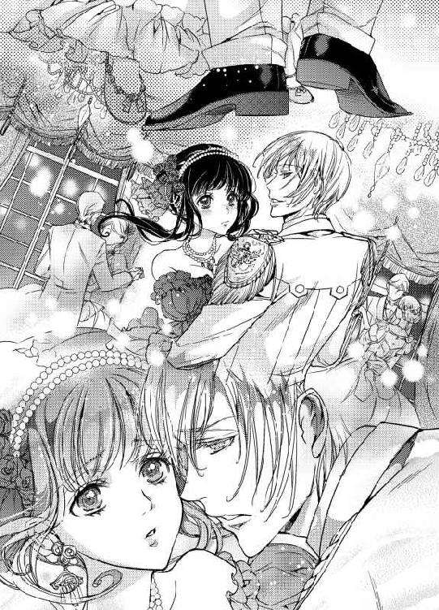
「君をエスコートするのも、初めて踊るのも、僕が初めてだったらよかった......そうするつもりだったのに」
「レイモンド」
「君にこんなふうに、綺麗なドレスを着せて、手を握って、皆の注目を浴びながら、この女性は僕のものなのだと知らしめるように......」
淡い青の瞳の奥に揺らめく何かを捕らえようと、アリシアは必死に目を凝らす。彼の真実は一体、どこにあるのかと。
（間違えちゃダメ......彼は、自分の傷付いたプライドを慰めたいだけよ......私が彼から逃げたから）
「あなただって......」
アリシアは知らず呟いていた。
「あなただって、何人もの綺麗な女性と踊ったんでしょ。こんなふうに優しく抱き寄せて、同じように甘い言葉を囁いて......」
「アリシア......？」
レイモンドの驚いたような声に、アリシアはハッとした。自分は今、レイモンドの過去に嫉妬するようなことを言わなかったか。
（私にそんな、資格はないのに）
「わ、忘れて......」
ちょうど曲が終わりに近付いていた。さっとレイモンドの手をふりほどいて、アリシアは彼から距離を取った。
その隙を見逃さず、わっと多くの令嬢がレイモンドの傍に群がっていく。
「レイモンド様、こちらにいらしていたのですね。私の家の夜会にも是非」
「大佐になられたとか......」
レイモンドはこちらを気にしているようだったが、令嬢達を振りほどくことはせず、微笑みを交えながら丁寧に接している。ダンスの誘いは断りつつも、彼女達の機嫌は損ねない。
そのスマートな応対も、昔の彼とは違っていた。
（以前は、もっと困っていて、迷惑そうだったわ......）
優しいからひどい言葉で突き放すような真似はしなかったけれど、彼に強気で迫っても罪悪感を覚えるだけだとクラスメートが言っていた。
だからこそ、アリシアだけは特別だと示してくれる彼を信じてしまった。
（特別......特別ではあったのよね）
アリシアは彼にとっては女を感じさせない女性なのだから、ある意味、気楽だったのかもしれない。女性と接する練習台にも、煩い同年代の少女を遠ざける防波堤にもなる。
だけどそれが必要なのは学生の頃だけだ。
今の彼にはそんな〝特別〟必要ない。
何人かにダンスは誘われたが、アリシアは丁重に断り壁の花になっていた。そこに突然、大きな声で話しかけられる。
「アリシア、アリシアじゃないか！」
聞き慣れた声に顔を上げると、見上げるほどの長身で、がっしりした体躯の将校がにこにこ笑って彼女を見ていた。
「マティアス......」
着ている軍装は陸軍のもの。三十歳半ばにして少将になったと聞いたが、本当だったらしい。
アリシアの家が没落した後、縁故の関係で親しくなり、援助もよくしてもらった子爵家の令息だった。
「こちらに来ていたの？ アデルは元気？」
その名をこんな場所で堂々と口にするのは憚られて、アリシアは声を潜めて問うた。マティアスは破顔する。
「元気だよ、実は再来月くらいに子供が産まれるんだ」
「まあ、おめでとう。それは良かったわ」
妻を伴って当然の場に一人現れたマティアスに、先走って夫婦仲の心配をしてしまった。
自分の勘違いが恥ずかしくて、顔を赤らめはにかみながら、アリシアはそのおめでたい報告に顔を輝かせる。
「ああ、その報告もしていなかったか？ 子供ができたんで私の両親も軟化したよ。もう何の心配もない。君にも迷惑をかけたね」
「いいのよ、そのことは......。良かったわ」
アリシアは目を細めた。せめて彼らには仲良くしていてほしい。
彼は相変わらず優しくて、壁の花になっているアリシアを気遣ったのか、踊ろうかと誘ってくる。それを丁重に断りながら、アリシアはマティアスとの旧交を温めた。
レイモンドのことも聞かれたが、いろいろと言葉を濁して、薬草の研究を一緒にやっていることだけを伝えた。
知人を見つけたマティアスがアリシアを置いて去っていく。
彼は本当に幸せそうだった。もう何も心配はない、その彼の言葉をアリシアはもう一度胸の中で繰り返す。
彼の背中を見送って、アリシアはそっと息を吐いた。
「ずいぶん楽しそうにしていたね、知り合い？」
しばらくして、レイモンドが微笑みを浮かべて近寄ってきた。その微笑みがさっき見せてくれた優しいものとはどこか違うように思えて、アリシアは身体を硬くする。
「従姉の旦那様よ、研究の援助者でもあるわ」
「へえ......君の大切なパトロンの一人、というわけだ」
「変な言い方をしないで。彼は奥様......私の従姉を溺愛しているの」
アリシアは強い口調で言った。マティアスが彼女のためにどれだけ献身したか、何も知らない者に適当なことを言ってほしくない。
「それは失礼」
レイモンドは冷たさを感じる口調で、近くの使用人に声をかけ、飲み物を貰った。
「君も飲むだろう」
光を閉じ込めたような中に泡が浮かんでいる。リンゴで出来た酒だ。
「私、お酒はちょっと......」
アリシアが尻込みすると、レイモンドは残念そうに眉を顰めた。
「美味しいのに」
「ごめんなさい」
すまなそうに謝るアリシアにレイモンドは、危険な目を向けた。
「いや、許さない」
「えっ？ ゆる......」
レイモンドは手に持ったグラスを一息に呑むとアリシアの腰を引き寄せた。
「や......」
手を突っ張って逃げようとするアリシアの手首を難なく掴み、強引に唇を合わせる。
唇をきゅっと引き結んで拒もうとするアリシアだったが、顎を強く掴まれると抵抗のしようがなかった。無理矢理こじ開けられた唇に、先ほどのリンゴ酒が流し込まれる。
ほんのりした甘さが広がる。飲みやすい感じのものだった。
思わず、呑み込んでしまったアリシアは怯えた目をレイモンドに向ける。
「美味しいだろう？」
唇だけで微笑む彼は、美しいけれど、どこか別の世界の生き物のように思えた。
怖くて、でも、惹き付けられてしまって、立ちすくむアリシアに、レイモンドはもう一度口づける。
「口を開けて、アリシア。ほら」
「やっ......」
「開けるんだ」
今度は舌先で強引に唇を割られた。逃げようとする舌を強引に絡め取られ、吸い上げられる。
苦しくて、気持ちよくて、くらくらする中で、そっと薄目を開けてレイモンドの顔を見たアリシアは、彼が口付けながらもまるで観察するようにアリシアの様子を見ているのを知った。
（レイ......？ 一体、何を......）
ふと、視界がぐらりと揺れたような気がした。続いて激しい眩暈に襲われて、アリシアはふらつく。
「アリシア？」
優しく甘やかすような声を遠く聞きながら、アリシアは意識を失った。
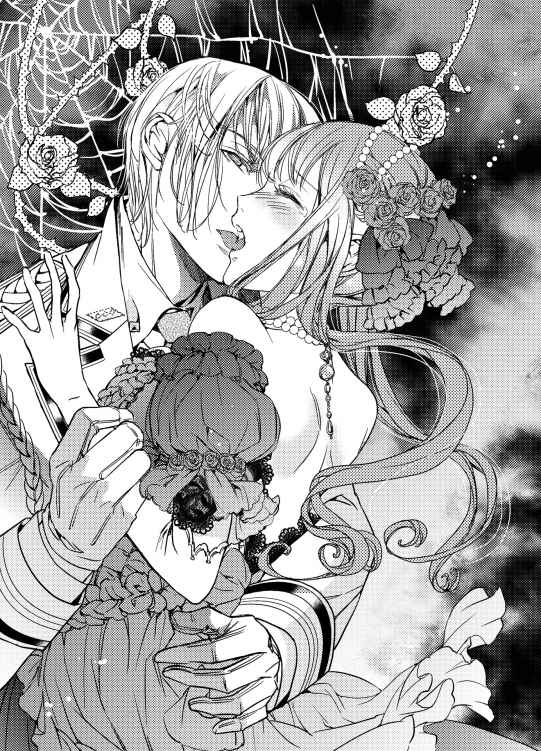
第三章 偽りの蜜月
アリシアが気がつくと、そこはベッドの上だった。
月の光が差し込んでいる。いつもの自分の部屋ではないけれど、作りが似てもいる。恐らく、研究所のどこかだ。
（レイモンドの......部屋？）
ぼんやりした意識がだんだんはっきりしていく。アリシアはずっと気になっていた肌寒さの理由を知って目を見開いた。
衣服も下着も剥ぎ取られ生まれたままの姿にされた上、両腕をひとまとめにして、どこかに縛られているのだ。
「きゃああああっ」
悲鳴をあげて、身もだえ腕を外そうとするが、柔らかい布なのにどうしてもほどくことができない。羞恥と恐怖から、アリシアの目に涙が滲んだ。
扉を開ける音がして、誰かが入ってくる。その音にも混乱で身体が揺れた。
現れたのは、レイモンドだ。
彼の姿が目に入っただけで、怯えながらも、少しだけ、本当に少しだけほっとしている自分がアリシアは不思議だった。
「ああ、目が覚めたのアリシア」
夜会から帰ったままなのだろう。大仰な上着は脱ぎ、銃や剣は外しているが、シャツと純白のトラウザーズがあのときのものだとわかる。
彼はゆっくりと近付いてアリシアを見下ろした。
「レイモンド、あなたなの？ どういうつもり？」
「寒いかい、ごめんね」
彼の手によって、何も身につけていない身体がシーツに覆われて、やっと息がつける。アリシアはけれど、彼に向ける視線の力は緩めず言った。
「腕......外して」
「それはできない」
レイモンドは、アリシアを覗き込むようにして言った。
「それより質問に答えてくれる？ 今夜の夜会で会った......マティアスと言ったっけ？ 彼とはどういう関係？」
アリシアは、レイモンドの思い詰めた目の色に怯んでしまった。
それでも挑むようにして答える。
「言ったでしょう？ 従姉の旦那様だって。それだけよ！」
「従姉......従姉ね、それはどこの誰？ 名前は？」
はっとして、アリシアは口を噤んだ。
絶対に彼女の名前を出すわけにはいかない。
「言いたくないわ......迷惑がかかるかもしれないもの。それよりこれ、外して」
レイモンドは目を細めた。
「君には秘密がまだ沢山あるんだね。だったら余計外すわけにはいかないな......ごめん」
謝りながら、レイモンドは、シフォンで出来ているらしい柔らかな布を取り出した。
拘束を外してはもらえない。それどころか更に何かされてしまう。そう察して、アリシアの目に怯えが走る。
「やっ......っ」
アリシアは身を捩って暴れたが、腕を封じられていてはどうしようもなかった。レイモンドは唇の間に噛ませるようにして布を巻き、アリシアの言葉まで封じてしまった。
「んーんっ」
やめて、というつもりだった。どうして、とも。けれども、いくらかぶりを振っても、唇は意味のない言葉しか紡げない。
「ん......っ」
アリシアの目に涙が滲んだ。
「暴れないで、息がつまってしまうよ。おとなしく......と言っても無理か」
レイモンドが泣きそうな顔でアリシアの頬を撫でる。こんなときなのに、手袋を外されている感触にわずかに安堵して、その瞳の寂しげな光に目を奪われる。
「こないだ、君を奪ったときの声が忘れられないんだ。......もうあんなふうに、君に拒絶されたくない」
囁くように言いながら、レイモンドは、アリシアの乳房に手を置いた。
「だけど。......君を奪いたいと思う気持ちを止めることも、諦めることもできない。アリシア、笑っていいよ。僕は、もうおかしい」
衣擦れの音がして、レイモンドも衣服を脱ぎ捨てた。月の光に照らされて、白く、けれど逞しい姿が浮かび上がる。
「君の意に反しても、君の唇を封じても、君と抱き合いたい......。君をどこかの誰かに取られるなんて、考えたくもない」
レイモンドは呟くように言葉を落とすと、そのままアリシアにのしかかり、首筋を強く吸い上げた。
ぴくりとアリシアの身体が撥ねる。弱い部分を刺激された衝撃もあったが、レイモンドに素肌を重ねられ、その重みを感じて、動揺を隠せない。
唯一自由だった脚も、レイモンドに脚を絡められ動きを封じられる。秘部にときおりあたる熱い感触が何かなんて考えたくもなかった。
「んーっ、んっ、ん」
ちゅっちゅっと、戯れるようなキスは下におりていき、さらりとした金髪が身体をくすぐっていく。アリシアは目を見開いて身体を弓なりに仰け反らせた。ひどいことをされているのに、背筋をぞくぞくさせる何かが、不快とは思えない。
（い......や）
──嫌とは言わないで。
繰り返していたレイモンドの声が蘇る。そんなふうに哀願されても聞けるわけがない。これは立派な暴力だ。
だからなのか、と唐突に気付いた。
だから言葉は布で封じられて、意味のある音を紡げない。
せめてもの抵抗に、アリシアはレイモンドを睨み付けた。なのに彼はそんな視線などものともしない。
「肌が薄紅色に染まってきたよ......興奮してる？」
レイモンドがうわずった声で言った。
「君はどこもかしこも美しい」
レイモンドの指が、白い膨らみの上の赤い先端をまさぐった。きゅっと引っ張るようにしたかと思うと、くりくりと弄られる。
アリシアは否定するように首を振り続けるしかない。
「アリシア気持ちいい？ 君は昔からここを愛されるのが好きだったよね」
非難めいたアリシアの視線を無視して、レイモンドはその瞳を覗き込んで言った。
「何も言わないで......言わないか。身体は正直だ。ほら、こんなに固くなってきた」
「っ！」
アリシアは目を閉じる。レイモンドが先端に吸い付いたからだ。ちゅうっと吸い付かれ、吸い上げられて、言いようのない快楽が全身に広がる。
「んっ......」
「ああ、こちらも可愛がってあげないと可哀想だね」
レイモンドの唇が、右胸から左胸に移った。可哀想なくらいに尖って立ち上がっている先を、なだめるように舌先でくすぐられる。そして乳暈を柔らかくなぞられ、濡らされた。
「ふ......っん」
声を出すこともできず、アリシアはまるで誘うように身体をくねらせるしかない。
嫌なのに、憤っているのに、身体は呆れるほど素直にレイモンドの指と舌を快楽として享受した。
左を舌で刺激されている間にも、右の乳房もやんわりと揉まれ、乳首を捏ねられる。
声を上げようとしても上げられない中で、頭はぼんやりとかすんで、ただその感覚に身を委ねたがっている。
（どうして、レイはこんなこと、するの......）
『嫌だと言われたくない』。
勝手な言い分だ。勝手だけれど、アリシアへ復讐するためや彼女を弄ぶためなら、こんなことは言わないはずだ。
──僕は、もうおかしい。
それは、アリシアが彼を傷付けたから？
レイモンドの唇が、あちこちに口付けの痕を残しながら徐々に下に移っていく。脇の柔らかな箇所を吸い上げられ、腹部の窪みに舌を入れられると、ひくひくとお腹が動いた。
（いや......だけど、気持ちいい）
指先はくすぐるように、胸や他のあたりを撫で回していく。つうっと、足先から内股のあたりまでに手を這わされると、ぞくりとした。
「ふっ......」
「気持ちいいの？ アリシア。脚を擦り合わせてるね、もどかしい？」
うっとりしたような声で、レイモンドが囁きかける。
「んんっ」
否定するように激しく首を振るものの、身体は心を裏切り続けた。
からかうように、レイモンドの手が内股から、脚の間を撫で上げる。指の先で、くすぐるように和毛をさわられて、とろりと何かが零れる感触がした。
（い......や）
彼に触れられることがではない。反応してしまう自分の身体が嫌だった。
心に反して、そこは触れられることを望んでいる。
「ああ、もう濡れてるね。触ってほしい？」
レイモンドの上ずったような声が聞こえた。
「んんっ」
否定したくて、首を振るけれど、それは力のない赤子がむずかるようなもの。
「嘘ばっかり」
閉じようとする力に逆らって、ぐっと脚を広げられ、膝を折り曲げるように抱え上げられた。暴れても、その動きは誘っているようにしか見えない。
「いくら否定しても、もう、ぐしょぐしょだよ。ここ......」
レイモンドの指が、躊躇なく恥丘を割った。両手の指を使って広げるようにした後、しばらくじっと動きを止める。
そこを眺めているようだった。
「んっんっ」
アリシアの目から、涙が流れた。
恥ずかしい。悔しい。
（どうして......レイはこんなに......）
ぼんやり考えたアリシアは、レイモンドが自分の脚の間に屈み込んでいくのを目に映して驚愕した。可能な限り脚に力を込めて暴れたが、実際にはびくともしない。
濡れそぼった赤い秘肉に濡れた感触が触れた。柔らかなものが、くすぐるように敏感な襞をたどる。
「んーっ」
アリシアはどうにも動かせない下半身に焦れて、上半身を必死に捩った。けれど下半身の感覚は、薄れるどころか鋭さを増すばかりだ。
ぴちゃりと音がした。レイモンドが、アリシアに聞かせるように舌を使っているのだ。
「んっ、君のは甘いね......どんどん出てくる」
（あ...あっ......）
とろり、と身体の奥から蜜が滲み出すのが、自分でもわかった。それをすかさずレイモンドが舐め取る。
「震えて、ひくひくしてるよ、気持ちいい？」
見えないけれども、彼に言葉で揶揄されるとその淫猥な光景が目に浮かんでくるようで、アリシアはかぶりを振った。その間にも、レイモンドは膣口を舐め上げるようにして、そろそろとそこを目指す。
「この間は乱暴にしてしまったからね。死ぬほど気持ちよくしてあげる」
彼の舌が、膣口の少し上にある、小さな芽を捕らえた。
（ひっ......ん）
アリシアの身体が、大きく跳ね上がった。
何が起こったか、わからなかった。電流のような衝撃が全身を襲う。
「ああ、やっぱりここが一番、気持ちいいんだね」
震える太腿を、きつく掴んで、レイモンドはさらなる刺激をその秘められた花芯に送った。
ちゅっ、ぴちゃ、ぴちゃり......。ちゅっ。
脚の間から、響く小さな水音が、たまらなく淫猥だ。
（レイモンドが、あのレイモンドの舌が、私の......）
内側から蜜がひっきりなしに溢れ、それをまた舐めとられる。柔らかく濡れた感触がひらめき、確かめるように快楽の塊を舐めこする。
快感が断続的に続き、目の前が赤く染まった。
（い......やっ）
花芯を舐めながら、ぬるり、とレイモンドの指が膣口に滑り込んだ。とろとろになったそこは異物を嫌がらず、ただ喜ぶようにして、やんわりと締め付ける。
締め付けると、それだけ快楽が深くなった。
（い、や、なの.........）
繰り返す否定の言葉は、それだけ感じている証だった。いい、と同義なのだ。
中をまさぐる指と、花芯を転がされる柔らかい刺激。気持ちよくて気持ちよくて、気が変になりそうだ。
「開いてきたよ、ここ、ほんとに花びらみたいだね」
レイモンドの上ずった声が聞こえる。
「中も舐めてあげる」
尖らせた舌が、蜜口を割って、入ってきた。
（あ......あっ）
その間にも、花芯は、指でやんわりと刺激され続ける。
「んーっ」
背中がぞくんぞくんとして、アリシアは知らず腰を揺らしていた。無意識にも舌が気持ちよいところにあたるようにしているのがわかり、恥ずかしく思う。
けれど止まらない。
「ん、いいよ、アリシア。気持ちよくなって......」
中に入れられている指が増えた。くちくちと音を立ててかき回される。水音がひどくなっていく。
（あ......あっ、なにか......）
ぞくぞくが止まらなくなった。何かが近付いてくるのがわかる、けれど、何かよくわからない。
アリシアは背を仰け反らせた。
「ああ、達きそう？」
レイモンドが少し微笑ったのがわかった。息で和毛がくすぐられる。そんなことにも刺激を煽られる。
「何度でも達けばいいよ、何度でもしてあげる」
舌の動きが速くなって、花芯をいたぶるように舐め転がされた。指の動きも激しくなる。
（いや、いやっ、いやっ......）
「んんっ」
ぶしゅり、と蜜がまた奥から溢れたのがわかった。ふわりと身体が浮き、さらに高みへ導かれる。
一瞬、目の前が白くなって、びくびくと中が震えて、指を締め付けるようになった。
「ふふ......。上手に達けたね、アリシア。癖になりそう？」
レイモンドは、膣壁の動きを楽しむように中に指を擦りつけた。
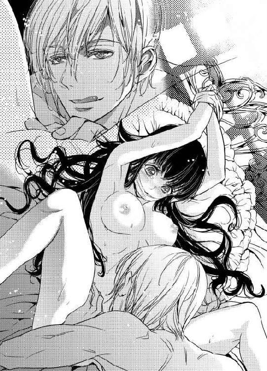
「柔らかく締め付けられて指でも気持ちいいよ、これで、君の中に入ってたら、凄いだろうね......」
ぬるんっ、と指が抜き取られた。その感触にもびりびりと身体が震える。
けれど、中を抜かれた膣はどこか空虚で、物足りなさに、アリシアは身もだえた。
「ぱくぱくしてるよ、まだ欲しい？」
レイモンドが、指でぐるりと、入口をなぞる。
「ん......」
アリシアの目は虚ろに開いているだけだ。何を言われているのかよくわからなかった。
レイモンドが身を起こし、塞がれている口元を避けるように、頬に、耳元にキスを降らせる。
腰を押し付けられると、彼のそれはぬるぬるとして、今にも弾けそうだった。
「まだ......欲しいよね」
熱い息と共に、誘う言葉を囁かれる。
欲しいと頷くことはできない。
けれど、拒絶することもできなかった。
再び太股を抱え上げられ、固くて太いものが、押し当てられる。
角度を確かめるように前後を擦られた後、ひたりと狙いを定めたように、それは一息にアリシアの中に、打ち込まれた。
「！！！！」
前回のような痛みはまるでなかった。
ぐしゅりと、果物が潰れたような音がして、お腹が一気に重くなる。
深々と異物にそこを貫かれるのは、言いようのない快感だった。
「ああ、アリシア、いいよ......」
レイモンドは、腰を緩やかに押し回しながらいった。
「君の中は、やわらかくて、温かい......」
レイモンドの肉楔は、ぐるりと中を押し回し、ぐりぐりと擦っていく。それは初めてのときとは違う、優しくも感じられる交合で、けれど、恐ろしく深い悦びがあった。
（あ......あ......）
アリシアの感覚と共鳴するように、レイモンドが、気持ちよさそうに深い溜息をついた。
熱くて太いものが、ぬくりぬくりと中を出入りする。
彼の楔でぬるぬるになった中を擦られるのは、恐ろしく気持ちがよくて、この気持ちの良さを彼も味わっているのならいいのにと思う。
堪えきれない気持ちよさに、ひくん、ひくんと身体が震えた。
塞がれた唇から、呑みきれない唾液が溢れて、糸を引いた。
不意にレイモンドが、たまらないというように身を屈めて、アリシアを掻き抱いた。
少し身を起こすように抱きしめられて、アリシアは熱に浮かされた意識の中でかすかに疑問に思う。どうしてか、肩に濡れた感触があった。
「ごめん......」
苦痛に満ちた声で、レイモンドが謝罪した。
「僕はひどいことをしているね、アリシア、ごめん、ごめん......」
アリシアを軽く揺さぶりながら、彼は譫言のように呟いた。
「だけど、止まらない......止まれないんだ、アリシア」
（レイ......）
アリシアは戸惑った。人を縛り付けて犯すような真似をしているレイが、どうして泣いているのかわからない。
僕はおかしい、と言った。
本当に彼は、どこか精神のバランスを崩しているのだろうか。
（まさか、戦場に行った、から？）
アリシアはその考えに、背筋が寒くなるような気がした。
若くして大佐となり、爵位を得られるような軍功。それは、どれだけの屍の山の上にあるものだろう。そう思いながらも、アリシアの中にあるのは、恐怖ではなく悲しみと......焦れるような願いだった。
彼は私にひどいことをしている、されている。
けれども叶うなら、レイモンドを慰めたい。
縛り付けられ、口を塞がれて抱かれるのは怖いし、ひどかったけれど、彼の指は優しかった。
羞恥と怒りに塗れながらも気持ち良さが勝ってしまうのは、それがレイモンドだからだ。これが他の誰かにされたことなら、たとえ同じくらい身体が反応しても、死にたいとしか思えなかったろう。
（せめて、それを、伝えたいのに......）
涙を湛えて、目で訴えるアリシアの気持ちが伝わったのかもしれない。
レイモンドは繋がったまま、震える指で、アリシアの口に噛ませている布を取り去った。楽になった呼吸にアリシアは深く息を付く。
感情の読めない目で、断罪されるのを待つかのようにアリシアを見下ろすレイモンド。そんな彼に、アリシアはただ甘い息を漏らしながら言った。
「腕のも......外して......」
初めての言葉が非難でなかったことに驚いたのだろうか。
彼は目を見張りながらも、アリシアを戒めている手首の紐を解いた。アリシアは痺れてしまった腕で、ゆっくりと彼の肩に手を回す。
力が入らないけれども、彼をいたわるように抱きしめる。
「続けて、レイモンド」
「アリシア？」
問いかけるレイモンドの視線をふりきるように、アリシアは目を閉じた。彼の耳元で囁きながら。
「今日はおかしくなったのよ、私もあなたも。だから......続けて」
「アリシアっ」
レイモンドの声が明るくなる。直後に口づけられた。
「う......ん」
唇を開き、彼の舌を受け入れる。上も下も繋がっていると思えば、とてつもなくいやらしいことをしている気分になった。
けれど、机の上で一方的に蹂躙されたときより、なにかが落ち着いていた。
触れあう素肌の優しさや、レイモンドの重み。
「アリシア......もうちょっと脚を開いて、僕の腰に巻き付けるようにしてみて」
レイモンドが甘えるように言った。アリシアは操り人形のようにのろのろと、しかし従順に彼の言葉に従ってしまう。
「ああ......」
脚を高く掲げ、レイモンドの腰に絡みつけると、余計に深い場所にレイモンドを感じた。
ゆっくりと彼が動き出す。
「アリシア......アリシア......僕の......」
レイモンドが、何度も何度も彼女の名を呼ぶ。彼の声がアリシアは好きだった。ずっと聞いていたい。
一度収まりかけた性感は、たやすく燃え上がって二人を包み込む。
「ああっ......あっ......」
甘い声を上げ続ける自分は自分でないみたいだ。
身体だって、そう思っているのかもしれない。今まで抑えこまれた声が響くと、与えられる快感をまた違ったように感じた。
声と吐息に紛れる、肉と肉がぶつかりあうかすかな音。
レイモンドが興奮したように、アリシアの胸の尖りを口に含んだ。
「やっ......」
小さく、声を上げようとして、アリシアは唇を噛む。代わりに指を唇に当てた。そうしないと、彼が聞きたくないと懇願した言葉を無意識に発してしまいそうだった。
今だけは、レイモンドにあんな顔をさせたくない。
「嫌って言わないようにしてるの。アリシア」
レイモンドが優しく言った。アリシアは、指を軽く噛んだまま小さく頷く。
「いやって言っても、嫌じゃないんだね......？」
レイモンドが嬉しそうに囁いた。
それにも小さく頷く。とても、恥ずかしかったけれど。
「じゃあ......いいって言って」
そう言いながら、レイモンドは、アリシアの耳を舐め上げた。
「んっ......」
「君、ここも好きだよね......」
レイモンドは耳孔に舌をこじいれるように、何度もそこを舐めては愛撫を繰り返す。そうされるともっと気持ちが良くてつらいから、首を振って逃げようとする。
その上から押さえこむようにして腰をねじ込まれ、囁かれた。
「ほら......いいって......」
「い...い......？」
「そう、いい」
そう言いながら、彼はさっきより強く、アリシアの中に腰を入れた。
「ああっ......い、い......」
強く強く、レイモンドにしがみつき、アリシアは甘い声を上げる。
「そう、僕もいいよ......気持ちいい」
掠れる声で、レイモンドが言った。彼の律動に誘われるようにして、アリシアの腰も揺れる。
奥の奥をぐりぐりと突き上げられると、その気持ちよさに誘われるようにあとからあとから蜜が溢れ出し、その動きを助けた。
「はっ......ああん」
「君の声は甘いね、もっと聞かせて」
レイモンドがうっとりした声で言いながら、なおも突き上げた。無茶苦茶に身体を絡ませあって、唇を重ねて......。
ついにレイモンドがアリシアの中で達して、熱いものが中に注がれたときも、アリシアは拒絶の声はあげなかった。
たとえ、これが一時だけのことでも、幸せだと思えたから。
翌日、アリシアが目覚めたときには、レイモンドは既にいつもの軍服を身につけて、ベッドの脇に立っていた。
慌てて起き上がろうとするアリシアを留めて、レイモンドは微笑みかける。
「いいよ、昨日は無理をさせたから。まだ寝ておくといい」
「でも......」
「今日は昨日の続きで、蒸留のやり方を変えるだけだろう。やっておこう。ついでに水やりもね」
レイモンドはアリシアの身体をくるむようにシーツをかけると、上機嫌で、頬にキスをした。
「あとで、クリスに着替えと朝食を運ばせるように言っておくから。ついでに、入浴もするといいよ」
彼は上官なのに、これでは立場があべこべだ。
アリシアは彼の言葉に素直に従っていいのかと戸惑いながらも、軽く頷いた。彼がそれを認めないなら、着替えもないアリシアはこの部屋から外に出ることができない。
レイモンドはアリシアの手首に目を落として、痛ましそうにそこを撫でた。
「少し、跡がついてしまった。......ごめん」
アリシアは微笑んだ。
「このくらい平気よ......口を塞がれたときの方が、苦しかったかも......」
レイモンドは、アリシアの手を掴んで外に出し、額をつけるようにして謝罪した。
「本当にすまない。あのときは、どうかしていた」
「リンゴのお酒に、薬を入れたのもあなた？」
アリシアは言った。後から考えると、そうとしか思えなかったからだ。
「そうだ......ごめん」
アリシアは、うなだれているレイモンドの頭をさらりと撫でた。
「何か、辛いことがあったの？ その......戦場で」
──僕は、もうおかしい。
切羽詰まった彼の声音が、アリシアの心を縛っていた。
レイモンドはちょっと驚いたように目を見張った。
「そう......そうかもしれないね」
少し弱々しげに微笑む。
「そうだと言ったら、君はずっと傍にいてくれる？」
「レイモンド......」
アリシアは、困って言葉を詰まらせた。彼に愛されたいと、傍に居たいと、ずっと思っていたのはアリシアの方だ。
愛されていないから、離れるしかなかった。
それとも、ああして狂ったようにアリシアの身体を求めるレイモンドは、以前のアリシアを愛してなどいなかった彼とは違うのだろうか。
昔と違って、本当に愛してくれているのだろうか。
（そんな、都合の良いことがあるわけない......）
迷いながらも、じっと彼の目に見つめられると、突き放すことができない。
だからこれが、彼女の本心だった。
「あなたが私を必要とするなら......傍にいるわ」
レイモンドはじっとアリシアを見つめると、ふっと微笑った。
「あのときもそう言ったね、嘘つきなアリシア」
冷えた声でそう言いながら、彼はアリシアの髪をひとすくいすくって恭しく口づける。
「君の言うことを、全部、信じられたらいいのに」
レイモンドは彼の言葉通り、先に仕事に行ってしまった。
部屋に残されたアリシアはクリスの手を借りて入浴し、遅い朝食を摂る。
クリスはきらきらと目を輝かせ嬉しそうにアリシアの世話をした。レイモンドの部屋で全裸になってシーツにくるまっていたのだから、言い訳のしようもない。
「昨日のレイモンド様は、眠り込まれたアリシア様を大切に抱えるようにして、ここに戻られたんですよ！ 王子様みたいで私、ドキドキしました！」
クリスはサイドテーブルに、朝食を並べながら力説する。
アリシアは苦笑するしかない。
「......彼は優しいから、気分の悪い女性なら、誰でもそうするんじゃないの？」
「そうですかあ？ でも本当にアリシア様を大切にしていらっしゃる感じですよ。目を見ればわかります！」
クリスは不満そうだ。そんな可愛い少女の姿を眺めながら、アリシアは落ち着かない胸の動悸を抑えつつ考えた。
一体、何がレイモンドの真実なのだろう。
熱っぽい目でアリシアを見る今のレイモンド。
アリシアのことは女性として見られないと言った昔の彼。
冷たい目で再会直後にアリシアを奪い、逃がさないと言いながら、だけど公的な夜会では婚約者として紹介してくれなかった。
そもそも、昨夜のことだってわからない。何が彼を、あんな行動に駆り立てたのか......。
アリシアは、縛られた手首に目を落とした。
（マティアスのことを誤解して？）
確かに彼とは、秘密を共有しているから、親しくはあるのだけれども。
兄とも弟ともつかない相手との仲を疑われていると、それを真剣に考え続けるのは難しかった。ありえない、とどうしてもそう思ってしまう。アリシアの中では完全に、マティアスはそういった対象じゃない。
（そもそも、私を好きじゃないのに、嫉妬なんて......）
やはり戦場で何かあって、極端に独占欲とか執着が強くなってしまったのだろう。
（昔のことだとしても。......むしろ、昔のことだから......）
彼の縋るような目を思い出すと、アリシアの胸は痛んだ。
レイモンドの力になりたい。彼の異常な自分への執着が、愛とはとても呼べないものだとしても。もし自分が彼を、支えられるなら。
（でも......ダメ。前もそれで失敗したじゃないの）
今にして思えば、彼にお金が必要ならば自分でそれを用立てると言えるくらいの覚悟がなければ駄目だったのだ。ダルトン家の財産はアリシアの物とはいえない。その通り、家にあった家財は何もかも、結果としてアリシアとは関係ないところで消えてしまったのだから。
その上、よかれと思ってしたこととはいえ、アリシアが彼に何も告げずに逃げたことは彼を余計に傷付けてしまった。
だから今、その償いを求められている。
それに生半可な覚悟で向かってはいけない。同じ間違いを繰り返すことになってしまう。
（だったら、ただレイの気がすむまで、ああいうことを......させてあげればいいの？）
アリシアの手は、無意識にお腹を押さえていた。また彼と、子供ができるようなことをしてしまったのだ。でも......。
（いいわ。私一人でも）
レイモンドを好きなのは私だから、彼がどうであろうと彼の子を産んで、育ててもいい。
そう思ったら少し気が楽になったような気がして、アリシアは息をついた。
それから二人を包む空気は少しだけ変わった。
仕事中は黙々とお互いの仕事を進める。けれども時折、レイモンドは甘い空気を漂わせアリシアをじっと見ていることがある気がする。そうすると過去のことが蘇って、アリシアは動揺を押し隠しながらも動悸を速めた。
恋人同士だった頃のこと。お互いの勉強や読んだ本のことを話して楽しい中に、相手を意識していたあの頃。
（私がもう、棒みたいな身体ではなくなったから、レイモンドは私を意識してくれるようになったのかしら）
今でも、あのとき聞こえてしまった言葉が耳から離れない。
だけど同じくらい、あの頃の二人の間にあった繋がりが恋しい。
再会したときや、この間のような歪んだ激情ではなく、二人で言葉を交わして相手の思考を理解して、惹かれあっていく......。
（おままごとみたい、と言われたけれど）
それはお互いさまだ。
あの頃のレイモンドは、アリシアを女性と見なしていなかったのだから。
（でも、仕方ないわよね。私は本当に、......棒切れみたいな身体の女の子だったもの）
過去のレイモンドの言葉は今も胸に刺さるけれど、本当のことでもあったとアリシアはわかっている。だから恨む気持ちはない。仕方がないと思って、でもやはり悲しいだけだ。
（今はでも、少しは、違うみたい......）
胸にはあの頃よりも膨らみがあって、腰も細い。
アリシアは朝の身繕いの最中、自分の身体を見下ろしながら考えていた。
その傍らで侍女見習いのクリスがてきぱきと準備を進めている。彼女はアリシアに教えられながら、貴族の家でもやっていけそうな様々な技術を身につけてきた。
「アリシア様、今日はどのドレスになさいますか？」
いつも変わらない明るい声で話しかけるクリスに目を細めながら、アリシアは少し思案してクローゼットを自分でも覗き込んだ。呆れたことに、本当にレイモンドは週替わりでここの中味を変えて、アリシアにドレスを贈ってくる。
（こんなものまで......どういうつもりかわからないけど......）
もしかしたら彼も、学生の頃を懐かしんでいるのかもしれない。沢山のドレスを贈れば女性は喜ぶと思っているのだとしたら、そんなレイモンドは少し可愛いと思う。
アリシアは意を決して、そこにあるものを手に取った。
「アリシア、ここのところの数式、いいかい？」
レイモンドに身を近づけられて、アリシアは自分でも何気なく寄り添った。
「ここだけど......」
レイモンドは、自然な感じでアリシアの肩を抱き寄せる。ふわりと彼のつけているコロンの香りが鼻をくすぐった。
爽やかな緑の香り。それを嗅いだときのことを思い出して、アリシアは赤くなった。それがレイモンドにも伝わってしまったのかもしれない。
彼は顔を傾けて、掠めるようにアリシアの唇を奪った。
「なっ......」
アリシアは慌てて身を離そうとしたが、レイモンドががっちりと腰に手を回して離さない。逆に引き寄せられ、彼の脚の間に割り込むようにして一緒に腰掛けさせられ、もっと深く唇を重ねた。
「やっ......今、仕事中......」
「少しだけ......」
レイモンドは溜息のように言って、アリシアのうなじに唇を落とす。つーっとなぞられるように唇を這わされ、アリシアはびくびく震えた。
今までのような強引さはそこにはなかった。まるで悪戯な恋人達が愛を交わすようで、そこから逃げてしまえば今ここにある暖かさまで否定してしまう気がして、抗えない。
拘束はされているけれども、柔らかなそれは本気で抗えば逃げることだって可能だろう。
自分が逃げたくないのだ。
今だけでいい。この温かな腕の中で、酔っていたい。
アリシアが本気で抵抗しないのを知るや、レイモンドの腰に回っていた手が下にすべり落ちた。スカートの上から脚を撫であげる。
そのまま、そうっとスカートを捲り上げた。
「んっ......」
抗議しようとする声は、また優しく塞がれる。直接アリシアの脚に触れた手が、何かを探り当ててわずかに止まった。
「使ってくれたんだね、ストッキング......」
アリシアは耳元まで赤くなった。
それはレイモンドにプレゼントされた、都での最新流行である薄手の靴下だった。透けるほどに薄くて脚の形がくっきりと分かる。ガーターというもので上から止めて、太股までそれで覆うのだ。
今までのズロースとは違い、お洒落ではあるが着心地は少し心許ない。
白い手袋に包まれたレイモンドの手が、その上から脚をなぞるのも、直接触れられたのと同じくらい鮮明に感じてしまう。
レイモンドの手は太股を撫で回しながら、しばらくその感触を楽しんでいたが、やがて上に這い上がって双丘を包み込んだ。
繊細だが大きな手が、アリシアの引き締まった臀部を撫で回す。そうされると、ぞくぞくと背中に気持ちよさが這い回り、アリシアは甘い声をもらした。
「やっ......ん」
「嫌とは言わないっていったろう？」
「約束なんて、してないもの、んっ......」
とは言え、そう言われるとアリシアはついつい、否定の言葉をなるべく避けるようにしてしまう。レイモンドの指が前に回って、下着越しに割れ目をなぞった。
「濡れてる。気持ちいい？」
レイモンドは楽しそうに言う。
「んっ......もう、悪戯、やめて」
アリシアは、少し力を込めてレイモンドの胸を押すが、いつの間にか柔らかな拘束はがっちりとアリシアの身体を捕らえていた。
「かわいい......」
レイモンドは溜息のように言って悪戯を続ける。薄い布越しに恥丘の際をなぞり、蜜口に、ぐっと指を押し付ける。布越しとはいえ、敏感な花芯も一緒に転がされて、思わず声をあげそうになった。
「んんっ......」
「白衣って、いいよね、そそる......」
レイモンドは楽しそうに言う。彼が凝りもせず上質なドレスばかり送ってくるので、アリシアは彼に言われたとおり、研究室では白衣を上に着ていた。
「今度、ベッドの中で何も着ずに、それだけ羽織って愛し合ってみない？」
「バ......カな、ことを、はっあっ」
レイモンドの指が、下着の中に入り込んだ。
「やっ......ああ」
「そのくらいの拒絶だと、僕もわりと平気になったよ」
レイモンドはうっとりと言った。
「こんなにぐっしょりだったら、嫌だと言われても説得力ないしね......」
レイモンドのうわずった声が、楽しそうに細められた目が、実際の感覚以上にアリシアを追い詰めていた。
花びらをかき分けるようにして、蜜口を探られ、花芯を転がされる。悪戯な指はそこでとどまらず、白い手袋をまとったまま、中に押し込まれていく。
「あ、あああっ......」
中を探るように抜き差しされると、とろり、と蜜が溢れ出す感覚があった。
レイモンドの手袋を汚してしまう、と思っても、止められるなら苦労しない。少しでも逃れようと身を捩るけれども、レイモンドはなおいっそう、深く指を沈め、抽挿を速くする。
「あ、ああ......」
もう一方の手が、アリシアの胸の膨らみを探り当て、優しく揉んだ。
「ふっ......ん」
「こうしてると、君の顔が見られて、いいものだね」
くちゅりくちゅりと、淫らな音を立てながら、レイモンドが言う。
「やっ......」
「気にしないで、達けばいいよアリシア。そしてその顔を僕に見せて......」
ぐぐっと内部で指が折り曲げられ、激しく擦り立てられた。
「ああっ......」
必死にかぶりを振りながら、アリシアはそのまま達してしまった。
その後。
アリシアは午後中、むっつりして、レイモンドとは口を利かずに過ごした。
仕事が終わっても乱暴に席を立ち、食事もクリスに頼んで運んでもらうようにする。
怒っているように見せるのはただのポーズに近い。怒りもあったが、羞恥がそれに上回っていた。
レイモンドとどうやって顔を合わせたらいいかわからない。何を話せばいいのかも。
食事後でレイモンドが訪ねてきたが、アリシアはドアを開けないで追い返した。
とにかく頭に血が上って眠れそうにないので、友人に手紙を書くことにする。
自室にはろくな用意がなかったので、アリシアが事務用品の置き場まで便箋などを取りにいって戻ってくると、呆れたことに書き物机の前の椅子にレイモンドが座っていた。
「お招きした覚えはないのだけど」
入口に立ってふるふると震えながら、アリシアが抗議する。
「クリスはいつだって僕の味方だよ。いい子だろう？」
レイモンドは、涼しい顔で言った。
「あの子の境遇を知ったら、君は絶対に追い出さないと思ったんだ」
「まさか。そのためにあの子を......」
アリシアはカッとして、手にしていた便箋を、レイモンドに投げつけたくなった。
「いや、あの子を拾ったのはほんの偶然。君のことがなくても仕事は世話してあげようと思っていたけど、渡りに舟だったからね」
レイモンドは言う。アリシアは今にも彼にぶつけようとしたものを投げるのを諦め、ほっと溜息をもらした。
「あなたがそんな人だとは思わなかったわ」
「褒め言葉として、受け取っておくよ」
アリシアが肩をすくめて、手紙の用具を机に置くために近付くと、レイモンドはぱっと立ち上がってアリシアの荷物を受け取り、机に置くや、アリシア自身の手を取った。
「怒ってるの、アリシア」
もう夜のためか、レイモンドの声は昼にもまして甘い。アリシアは必死で流されないように、ツンとして言った。
「当たり前でしょ。仕事の最中に、あ、あんなことをして」
レイモンドはアリシアの右手を持ち上げて、意味ありげにアリシアの目の前で唇を押し当てた。
「君にはわからないだろうね。仕事をしている間も、僕がどれだけ、君が欲しくて君に触れたくて、無様な思いをしているかなんて」
上目遣いに、低い声で囁く。
ふざけているようで、そこにはどこか張り詰めた調子があった。アリシアはその真実の響きだけを取り上げる。
だからこそ、心の底から驚いてしまった。
「私が......欲しいの？」
アリシアは、とまどった目で、レイモンドを見上げた。
彼は自嘲気味に笑った。
「いくらなんでも、そのくらいわからない？」
「わからないわ。あなたの真意なんか......柔らかく笑ったと思うと、ひどいことばかりして」
「そうかな。そうかもしれない。でも君が欲しいのは本当だ」
「そう......そうね。それだけは、本当かも」
「身体は嘘をつけないよ。君も......僕も...ね」
彼は欲望を知らしめるかのように、アリシアのドレス越しに一度だけ自分の腰を押し付けると、ドレスを捲り上げるようにして太腿に手を這わせてきた。
「ストッキング、着けてみてどうだった？」
「......ちょっと涼しすぎて、落ち着かないわ」
「でもいいと思うよ。とてもセクシーだ」
レイモンドは、やおら床に跪いた。
「きゃっ、やめて、レイ！」
アリシアは、悲鳴を上げる。
「ああ、いいね。昔みたいだ。そう呼んで。アリシア」
レイモンドはうっとりした声で囁きながら、ドレスの中に頭を入れて、両手でアリシアの脚を撫で回し口づけた。
「これ昼間のと、履き替えたんだね、でももう湿ってる」
そろり、と下着の上から脚の間を撫で上げられて、アリシアの腰がひくんと震える。
「ね、もうやめて......」
「嫌だ」
レイモンドはあっさり却下して、アリシアの下着を引き下ろした。秘裂をなぞったかと思うと、躊躇なく指を押し込み、上部の尖りに舌を這わせた。
ぴちゃり、と淫猥な音が、下肢から響いた。
「あ、ああ......」
アリシアは目を伏せ、恍惚とした表情でその刺激を受け取った。レイモンドが脚元に蹲ったまま、くすりと笑う。
「気持ちいい？」
「い......や」
と言いかけてアリシアはまた躊躇った。
「......手袋、外して」
この手のことでは、レイモンドに翻弄されてばかりで、何もかも、彼の思うがままに操られてしまいそうになる。
なにか一つでいいから彼に自分の言うことを聞いてほしかった。嫌だと言わない代わりに、一つだけ。手袋越しの触れ合いは寂しいから。
レイモンドの目が見開かれた。彼は跪くポーズから、やおら立ち上がって、アリシアの顔を覗き込もうとした。
彼の目を見ながら続きを言うのは恥ずかしい。アリシアはその胸にすがりついて、顔を隠す。
「私に触れるなら......。手袋は外して」
囁いた後、少し落ち着いてから顔を上げる。
アリシアを見るレイモンドの目の色が変わっていた。
彼は右手を自分の口元にやると、手袋を咥え口でそれを取り去った。あわただしく左手もはずし、床に放ると、素手でアリシアの頬を包み込む。
そして、激しく唇を奪った。
「どうして君はそうやって、僕を煽るんだ」
「あ、煽ってなんか、嫌だと言うなっていうから、私......」
「もう嫌だと言われても、止まれない」
ふっと笑って、レイモンドは、再び下肢に指を忍ばせた。アリシアを壁際に追い込み、左手で抵抗を封じながら、指を二本にして膣襞をかき回す。
「あっ......ぃやあ......んっ、んっ」
「いや、じゃないよね、どういうの？ 僕の指はどう？ 手袋と感じが違うの？」
「そんなの......んっ」
温かくて優しくて生きている感触がする、などと言えるわけがない。
レイモンドの唇が、アリシアの耳朶を捉えた。耳殻に舌をもぐりこませるように舐め上げられると震える身体を止められない。
「いいんだね、今、ここが締まったよ。蜜もあふれてる」
「い......わないで......」
「これなら、すぐに挿入りそう......」
「え、いや、それは無理......っ、やっ......！」
思わずあげた悲鳴の声も無視された。
レイモンドはズボンを寛げて、アリシアの右足を抱え上げる。まだうっすらと開いただけの、濡れそぼった蜜口に、猛りきっている肉茎を押し当てた。
「アリシア......」
「きゃっ......う」
ずん、と、お腹の中に重い衝撃がきた。
開いているとはいえまだ可憐な秘口が、猛々しく硬直した陰茎に蹂躙され、押し広げられていく。
レイモンドが息を吐いて、腰を動かした。
ずっ...ずっ...と濡襞が擦り上げられると、いつもと違う、言いようのない感覚が広がっていった。
「あああああっ」
レイモンドは、持ち上げていたアリシアの脚から手を離して持ち直した。とろとろになったアリシアの膣は、自重で異物を深く呑み込み、最奥までレイモンドの雄を咥え込む。
「はぁっ、う......」
気持ちいい。
濡襞は、それ自体、別の生き物のように蠢いて、レイモンドのものを包み込んだ。彼を締め上げると、締め付けている方も大きな快楽を覚える。
アリシアは目の前が染まる感覚を覚えながら、知らず腰を揺らしていた。レイモンドは荒い息を吐き、彼女を突き上げながら、うっとりした声を出す。
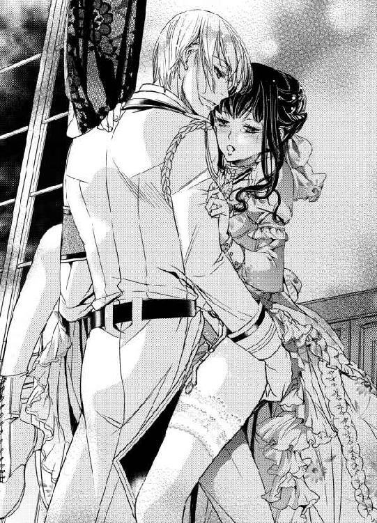
「熱い......気持ちがいい。君のここ」
「んっ、んっ」
「君と、一つになってるみたいだよ、気持ちいいだろ？」
「んんっ」
真っ赤になって首を振るも、否定する気はなかった。
レイモンドの熱いものが自分の中で暴れて、切ない部分を擦っていく。生き物みたいなそれで奥をつつかれるたびに、熱いものが湧き上がってきて、気持ちよくて仕方ない。
少し、引き抜かれ、また入れられるその繰り返し。
ぬちゅぬちゅと、いやらしい音が、室内に響いている。
「は......あ」
アリシアは答えられない代わりに、ぎゅうううっとレイモンドの背中に抱きついた。身体を預けるようにして、深く、なお深く彼自身を受け入れる。
レイモンドの手が差し入れられ、彼に貫かれた部分を指でなぞられた。
「ああああっ」
ひっぱられ、きちきちの入口の先についた花芯も刺激されて、どっと蜜が溢れ出す。
「あ、アリシア、そんなに締めたら......」
レイモンドの焦ったような声が聞こえるが、アリシア自身にもどうしようもない。
「ああっ......」
彼女は、かるく背をそらして、ぴくぴく震えながら、大きな波を受け入れた。すがっているレイモンドの背中もぴくりと震え、奥に熱いものが放たれ、身体を濡らしていく。
中で出される感覚も、実は好きだった。
「はっ...」
レイモンドは、何度か腰を動かして、最後の最後までアリシアの中に注ぎ込んだ。
彼が何かを祈るようにして、アリシアの胸に頬をつける。アリシアの腕が彼の頭を抱え込んだ。
夜がしんしんと二人の姿を包み込むようにして過ぎていった。
第四章 許されざる快楽に溺れて
「大佐、お久しぶりです」
「お元気そうですね。休暇はいかがですか」
レイモンドが駐屯地の基地の廊下を、カツカツとブーツの音を鳴らして歩くと、喜色を湛えて挨拶をしてくる部下が多い。それに手を振って答えながらも、彼は内心で焦りを感じていた。あの男が捕まってから数週間になるのに、一向に足がかりが掴めない。
何も進展がないとなると、せっかく矛先を変えさせた彼女のことがまた俎上に上がってくるのは目に見えていた。
今日も上官にも問われたのだ。
『彼女を保護の名目で拘留し、話を聞くわけにはいかないのか』......と。
冗談ではない。やっと最近、自然な笑顔を見せてくれるようになったのに。
（アリシア......彼女は僕の......僕だけのものだ）
レイモンドは無意識に腰の銃に手を掛けて、暗い目をして心の中で呟いた。
軍で問題になっているのは、厳密に言えば軍属の研究所にいるアリシアのことではない。
〝黒のダルトン〟と呼ばれる女性のことだ。
先日スパイ容疑で捕まったブレンダン中将について、何か知っている可能性が高いと見なされている人物である。
レイモンドを始めとする幾人かの尽力により、軍の中に裏切り者が複数居ることが明らかになったのはつい最近のことだった。
デリケートな話題でもあり、悪戯に内部の疑心暗鬼を煽ることを避ける向きもあって、ブレンダンがスパイ容疑で拘束されたことはともかく、容疑者が彼一人に留まらないことは今でも一部の者にしか知られていない。
裏切り者達は隣国スーダニアから金銭を授受する見返りに、ルヴェールランドの守りが弱い部分や、新薬、兵器の情報などを流していたのだ。
拘束されたブレンダン中将は、他にもいろいろと後ろ暗いことに手を染めていた。軍の捜査局が自宅を急襲した時には、賄賂で手に入れたり庶民から収奪した宝飾品等が多数見つかり、さらに金で買ったと思しき女性や少年少女が何人も保護された。
彼の仲間がまだ軍内部にいることは確実だ。
軍部ではその後も内々に手がかりを捜し続け、ブレンダンの逮捕の際、彼が懇意にしていたはずの女性が一人だけ見つからなかったことを突き止めた。
それが〝黒のダルトン〟だ。
〝黒のダルトン〟は、見事な黒髪をした若く美しい女で、いつも黒や紺のドレスを着ていたという。
それ以上の情報はない。いくら調べても彼女の素性ははっきりしなかった。
軍が掴んだのは、招待客のパートナーまでは身分や素性を確かめない、そういった規定の緩い夜会を選んだように姿を見せ、とある施設への資金援助を請うていたということだけだ。
援助を申し出た者はそれなりに詳しい話を交わしていたようだが、それ以外の者は彼女が何をしに来ているのかすらよく知らなかったらしい。
ダルトンという姓と、イニシャルがＡであるらしいという他は、何も。
貴族や貴族の領地を預かる小作農は厳しく戸籍を管理されるが、それ以外の平民の入転出の記録は、おろそかにされやすい。当の本人がそれなりに金品を使って作為を働こうとすれば尚更だ。
──彼女に金は出したものの、何に使うのか全くわかっていない者も多かった。美人に言い寄られ、ちやほやされて楽しい時を過ごすだけで充分だったようだ。
上官が呆れたように語っていたことを思い出すが、ありえる話だ。
〝黒のダルトン〟は、一人一人にそれほど法外な金額をふっかけていたわけではない。多くの者は女性に靴やドレスをプレゼントする感覚だったのだろう。
国益に貢献する何らかの組織への援助、ということぐらいは理解していた者も多いが、それもボランティア団体に気前のいい寄付をする感覚で、詳細をわかっていなかった。
その分、後援者は無数にいて、その全員を把握するだけでも時間がかかった。そんな多くの参考人にあたって、ようやく領収書めいたものを保管している人間に行き当たった。
そこに記された施設の名称が、アリシアの現在務めている研究所のものだったのだ。
〝ダルトン〟の姓は、この国ではありふれたものだ。
Ａで始まる名前の女性だって数多い。
何より伝え聞く〝黒のダルトン〟のイメージが、レイモンドの知る彼女とかけ離れすぎていた。参考人の多くが資金援助の名目を忘れているのは金額が些少なこともあるが、ただ甘えるようにしなだれかかる美しい女性の印象が強かったためらしい。
アリシアはよく知らない男性にそんな態度を取れる女性じゃない。そこに正当な目的があったとしても、初対面の相手に媚を売るなど。
身体を使って金を集めているという噂まであったのだ。
レイモンドは領収書の存在が明らかになった時点でも、アリシアと〝黒のダルトン〟を全く結びつけてはいなかった。
調査の過程で出資を求めていた研究所が薬草を取り扱っているものだと聞いた時だって、彼の琴線に触れたのはあの愛おしい日々と愛するアリシアへの感情で、婚約者と自分が追う重要参考人の存在が重なることはなかった。
おそらくあの告発状を見なければ、疑うどころか訝しむことすらしなかったろう。
軍に匿名で届いた、ブレンダン中将の罪を訴える告発状。
領収書、後援者たちの証言、その他のすべての証拠がなくとも、その文字を見ただけでレイモンドはそれを綴った人間にたどり着くことができた。
誰が書いたものか、一目でわかった。アリシアの文字だった。
ずっとその行方を捜していたのだから見逃すはずがない。その手がかりをたぐり彼女の所在を完全に掴むまでの間、レイモンドの中にあったのは職務への忠義ではなくどこまでも私的な欲求だった。今度こそ捕まえると追っていたのは〝黒のダルトン〟ではなくアリシアだった。
そして見つけた、彼女を。
同時に、少なくとも彼女がブレンダンと無関係ではないことも知ってしまったのだ。
（けれど、違う。冗談じゃない）
レイモンドは、〝黒のダルトン〟のことを考える度、もやもやと湧き起こる思いを、もう一度強く否定した。
〝黒のダルトン〟は、ブレンダンの内通者とも愛人とも疑われていた。しかしそんなことはありえない。
衝動に任せて乱暴に奪ったあのときまで、アリシアは確かに純潔だった。
そのことに、どんなに自分が暗い喜びを覚えたか、彼女にはわかるだろうか。
よしんば彼女が他人に蹂躙されつくし、穢されていたとしても、再会さえできたら捕まえて、二度と離さないという気持ちに微塵も揺らぎはなかっただろうけれど。
昔、教えたキスを、教えた遣り方そのままに、少しぎこちなく返されたときの理性の切れ方は自分でも怖いくらいだった。
「レイ......」
あのしなやかな腕で抱きしめられ、もう一度愛称を呼んでもらったときは、どんなにか胸を狂おしく疼かせたか。
レイモンドは瞳を伏せた。この数週間で知ったアリシアの様々な姿が蘇る。
どれだけ抱いて、どれだけ乱れさせても、またすぐに欲しくなる。渇望が止まらない。抱きしめたときの甘い髪の香りをふと思い出すだけで、身体の中心が疼くようだ。
（誰にも触らせない、誰にも傷付けさせない、もう二度と......逃がさない）
それはアリシアと再会したときから、ずっとレイモンドが胸に秘めた誓いだった。
目を閉じれば、今でもありありと思い出すことができる、図書館のテラス席で本を読んでいる彼女の横顔......。
生真面目な顔をしたかと思えば、時折眉を顰めたり、爪を噛んだりする。なのに、次の瞬間パッと顔を明るく輝かせたり、がっかりと肩を落としたりするのだ。
そうやって一人忙しく目を通しているのが女性の好むロマンス小説の類ではなくて、もっぱら科学の論文や、研究書であることが尚更笑いを誘った。
彼女の書いた論文に興味を持って探したのは本当だったが、その姿を見たときからレイモンドは、既に恋に落ちていた。
「またここに居るんだね」
長い間その姿をうかがって、恐ろしく勇気を振り絞って声をかけた。森で見かけるという妖精のように、驚かせたら逃げてしまうのではないかと。怯えた目を向けられるのではないかと、気が気ではなかった。
急いで声をかけた理由を述べて、彼女の気を引けるかもしれない話題を並べ立てた。神秘的な紫水晶の瞳が瞬いて、彼の話に興味を示してくれたとき、心の中で快哉を叫んだことが忘れられない。
それから先も、少しずつ、少しずつ、怖がらせないように距離を縮めた。
話す度、触れあう度、彼女への思いはいや増すばかりだった。笑った顔も、落ち着いた声も、少し控えめで几帳面な性格や知性も、すべてがレイモンドを魅了した。
アリシアは自分に自信がないようだったが、とんでもない話だ。密かにアリシアを狙っている男子は沢山いた。彼女の外にも内にも溺れきっている自分はともかく、清楚な美しさを持ち、実家の後ろ盾もあるアリシアは、隠れたところで人気が高かった。
レイモンドは慎重に慎重に彼女の周りを観察し、誰にも抜け駆けされないように万全の準備をした。
彼女を誰かに取られるかもしれないと思うだけで、気が狂いそうだった。
少しでも興味を示す者に対しては、あるときは話をはぐらかし、あるときは牽制した。
反感をもたれないように、そこそこ穏便に周囲と付き合い、目立つのを避けてきたことを、こんなに感謝したことはない。単純な者はレイモンドが誘導しただけで、あっさりと彼女に対する興味を失い、勘の良いものはレイモンドの真剣さを察して遠慮してくれた。
別宅の書庫で、深く触れあい、アリシアが強く拒絶しなかったときは、とても嬉しかった。
彼女があまりに素直で、言いくるめて最後まで進んでしまうのも容易そうで。自分の理性に自信が持てなくなって、気軽に彼女に触れられなくなった。結婚するまでは大切にしたいと思っているのに、レイモンド自身がそれを守れそうになかったから。
彼女に触れるならきちんとした手順を踏みたい。そんな誠実に見せかけた理由の裏で、自分はただ、彼女の一生を完璧に手に入れる算段をしていたのかもしれない。
だから結婚を承諾されたときは、天にも昇る心地がした。
恵まれた家門に生まれ、家族にも愛されて育った。それゆえにレイモンドには幼い頃から野心のような物を抱くのは難しかった。
初めての執着だった。
アリシアさえ得られればそれでいい。
それがあっさり叶って、叶ったように見えて、レイモンドの中で生まれ始めた執着や野心めいた心はすぐに落ち着いた。彼女がいればそれだけで良かったからだ。アリシアと、そして産まれるであろう彼女との間の子供達を守って、そこそこ満足ができる仕事をして、穏やかに暮らしていく。
今でも思う。なんて幸せな未来だろうかと。
そんな満ち足りた思いは、彼女が彼に何も告げずに姿を消したときに粉々に砕け散った。
婚約解消を告げる手紙に、指輪が添えられていたときには目の前が赤くなるような怒りと絶望を覚えた。
ほどなくアリシアの一家を襲った災難を知ったが、到底納得できるものではなかった。
どうして自分を頼ってくれなかった。
どうして一言だけでも相談してくれなかった。
いっそ別れようなんて言葉でもいい、直接告げてくれたなら。一目だけでも会おうとしてくれたなら。その一度の機会さえあれば絶対に引き止めることができた。彼女が納得してくれないなら捕まえて、閉じ込めて、きっと離れることなんて許さなかった。
あの日の朝に届いた彼女からの手紙。いつもと変わらない、動揺を見せない落ち着いた綺麗な文字で綴られた別れの言葉。
あの衝撃から、今も立ち直れずにいる。
あれからレイモンドは自分の能力を抑えるのを、目立たないようにするのをやめた。
アリシアが頼ってくれなかったのは、家門と関係ない、レイモンド自身の実力が足りなかったせいだと考えたからだ。家に頼っていたつもりはなかったが、自分一人の力で彼女を支える意識が不足していたのも確かだった。
誰の反感をかおうとかまわない。向かってくる者には圧倒的な実力差を見せつけ、ねじ伏せる。服装や社交もより洗練されたものになるよう心がけた。
徴兵期間中、軍部でも活躍を心がけ、異例の出世をして、爵位も受けた。
すべて、たった一人、アリシアのための努力だ。
（それなのに、まだ、彼女は──）
アリシアはレイモンドに頼らない。
あの研究所を軌道に乗せるために彼女が払っただろう苦労も、〝黒のダルトン〟に関しても、レイモンドがいくら水を向けても口にはしない。
彼女が自分に完全に心を開いてくれていないのは明らかだった。
信用されていない。
夜会の時に会ったマティアスという陸軍少将──素性は後から調べた──の方にずっと、安らいだ笑顔を浮かべていたように見える。
激情のあまり乱暴なことはしてしまったけれど、少しずつ、アリシアも自分に心を傾けてくれているように思っていたのに。
アリシアの説明に嘘はなかった。マティアスが確かに既婚者で、妻を溺愛しているらしい。その報告を聞かなければ、自分は何をしたかわからない。公衆の面前で彼に手袋を投げ付け、決闘を申し込むことさえ辞さなかっただろう。
（無様だ......）
レイモンドはデスクに肘を突いた手を額にあてて、苦い微笑みを漏らした。
アリシアを心から愛しく思うのと同時に、時折ふとよぎる、かすかな憎しみにも似た焦燥感が去っていってくれない。
もっともっと、ただ優しくしたいのに......。ほんのちょっとしたことで、おかしくなってしまう。
すぐに彼女に去られたときのことを思いだし、結果、必要以上に彼女を責め立て、その身体を貪ってしまうのだ。
落ち着こうと、ゆっくり息を吐いた。
アリシアが絡むとコントロールが利かなくなる自分を、レイモンドは少し持て余していた。
「大佐。お探しの資料をお持ちしました」
不意に声をかけられてレイモンドはびくりと震えた。動揺を隠して顔を上げる。
デスクについて一人書類をめくっていたつもりだったが、苛々した雰囲気をまき散らしてしまっていたかもしれない。かなり気心が知れたはずの副官が、戦々恐々とした顔で彼をうかがっている。
「ありがとう」
表情をとり繕い。なんとか柔らかく微笑して返しながらレイモンドは念を押した。
「研究所の方の警備は万全だろうな。アリシアには気付かれないように」
「はっ！」
若いと度々揶揄されるレイモンドよりさらに年若い、抜擢したばかりの黒髪の青年は、姿勢を正して敬礼をする。
「抜かりはありません。大佐の大事な方ですから、この命に替えても」
レイモンドは、表情を引き締めた。
「そのことも、あまり言って回らないでくれ。軍議で私心を交えたと糾弾される」
「も、申し訳ありません」
恐縮する部下を手振りで下がらせながら、レイモンドは憂鬱そうに渡された資料をめくった。
アリシアを大っぴらに婚約者として紹介できないのは、そういう理由だ。
レイモンドの証言で彼女の出自が確かめられ、彼女の集めた援助金によって軍に役立つ薬を開発していたこともはっきりしたので、〝黒のダルトン〟の嫌疑は、だいぶ薄くなった。
だが綺麗さっぱり無くなったわけではない。彼女を監視して調査中だとされているレイモンドが、彼女に肩入れしていると思われるわけにはいかないのだ。
彼女は僕のものだと早く周り中に、いや国中にだって触れ回りたいのに。
難しい顔で考えているところに、またもや副官がすまなそうに顔を覗かせた。
「お忙しいところすみません。上官が大佐に新しい提案があるから来るようにと......」
レイモンドが傍らに居ることに慣れてしまって、その安心にどっぷりと浸っている自分がアリシアは時折怖くなる。
それでも薬の量産に向けて、作業は滞りなく進んでいった。
そんなある日の午後、彼に軍から急な呼び出しがあった。構わず仕事を続けていればいいのに、アリシアは彼の見送りに席を立ってしまう。
「寂しい？」
「まさか。子供じゃないんだから」
そう答えたアリシアに、彼は笑いながら軽くキスをして、慌ただしく出掛けてしまった。
取り残されたアリシアは研究室がひどく肌寒く思えて、身を震わせた。
前までは、一人でも全然、平気だったのに。
彼が当たり前に近くに居る。こんなこと、いつまでも続くはずはないのに。
頭を冷やすように言い聞かせ、レイモンドが戻る前に一人でできる作業は進めてしまおうとする。なのに思うように手が進まない。
溜息をつき窓の外を見やったとき、小さなノックの音が聞こえた。応じるとクリスが遠慮がちに声をかける。
「あのう......アリシア様に、お客様がおいでです」
「私に？」
少し意外に思って面会室に行くと、そこには緊張した面持ちのマティアスが座っていた。
「どうしたの？ こんなところまで......」
体格の良いマティアスに、研究所の質素なソファは少し小さい。彼は居心地悪そうに身体を小さくしながら、アリシアに顔を寄せ、声を潜める。
「軍の方で嫌な噂を聞いた。ヴィリエ侯爵......海軍のレイモンド大佐が、ここを買収して、君を囲っていると。本当か？」
「囲って......って......」
アリシアは言葉に詰まった。
事情の知らない人間には、そう見えるのかもしれない。
この施設が扱う薬のことは機密扱いだとレイモンドは言っていた。同じ国軍であっても、管轄やその他の違いで情報が共有されないことはあるだろう。
マティアスは男らしい眉を顰めて、心配そうにアリシアを見つめた。
「侯爵は君の元婚約者だったけれど、君が彼を嫌って逃げ出したので、研究所まで追いつめて無理矢理自分のものにしたと......」
「ええっ！ それは、そんなのは、嘘よ！」
アリシアはカップを持つ手が震えそうになった。
混乱して何を言えば良いのかわからない。機密の薬のことを伏せて、客観的な事実だけを追えば、そうと解釈するしかないだろう。けれどそれではレイモンドの評判が損なわれるばかりだ。
マティアスは勢い込むように言った。
「彼は優秀な軍人で周囲の評価も高い高位貴族だが、軍での階級は私より下だ。何か理不尽なことがあるようなら、私から......」
アリシアは、気を落ち着けるように息を吸い込んだ。
「彼が元婚約者だったのは本当。婚約を解消したのも。でも、それは私の家のことがあったから。......破産して、夜逃げのように一家総出で逃げざるを得なかった私と、名門のエリートの彼とでは釣り合わない。わかるでしょう？ レイモンドが、......彼が嫌いだったからじゃないの」
「それは......」
マティアスは少し腑に落ちない顔をしたが、アリシアの真剣な目をみて言葉を引っ込めた。
「詳しい事情はよくわからないが。君は彼が好きで、今、一緒にいるんだね」
「ええ。そうよ」
それだけは嘘ではなかったので、アリシアはきっぱり答えた。レイモンドの真意が見えなくても、彼に言えないことがあっても、それだけは自分の中で明確だった。
マティアスは、アリシアの真っ直ぐな目をしばらく探るように見つめて、ようやく少し笑顔を見せた。
「それなら、良かった」
けれど、たちまち顔を曇らせる。
「けれど、それでは〝あの噂〟は不都合があるだろう。必要なら......」
「マティアス。それはもう言わない約束よ」
アリシアはぴしゃりと言った。
二人の間に沈黙が走る。何も言わなくても、お互いが誰のことを考えているのかは手に取るように分かった。
アデル......アデル・ダルトン。一つ年上の大切な従姉。
実家が破産して夜逃げをし、研究職を見つけたものの、当時のこの研究所にはアリシアの研究のために必要な施設を整えたり、器具を買ったりするための資金が充分ではなかった。
研究所を支える財団の了承を取り付け、アリシアはあちこちの社交場を回って援助を請うことにした。
慣れない行為ではあるが、それが国のためにもなると確信していたからやろうと思えた。それに協力を申し出てくれたのがアデルだったのだ。
『いろいろな殿方に、出資を頼むのが必要なの？ 任せておいて』
アリシアの手伝いなら、お父様やお母様も文句は言わないしねー。
そう言って屈託なく笑った彼女。
実際、アリシアの研究所の名前を前面に出し、「これこれこういう理由で、援助金を出してくれる方を募りに行きます」と言えば、いろいろな社交場に出入りしやすくはなった。
綺麗な黒髪をして、快活で、華やかなことが大好きなアデルは、そのことがとても嬉しいらしかった。
結局、援助金はかなりの割合を彼女が集めてくれた。なんのために使うかもろくに説明できない彼女に、よくもそんなに出資者が現れたものだとは思うけれども。
「平気よ、兵士の健康を保つことが、軍の強化に繋がり、ひいては国益になるんですう、って言えば、素晴らしいことだって皆、助けてくれるもの」
屈託なく笑っていたアデル。ついでにドレスや宝石をプレゼントされたりはしていたようだが、お金は真っ正直にアリシアに渡してくれた。裏表のない人なのだ。
少し惚れっぽくて浮ついたところがあり、よろしくない噂や陰口をたたかれることは少なくなかった。妙齢の女性がその評判を落とせば、結婚などにも差し支えてしまう。それを案じて苦言を呈したことがあったけれども、彼女は耳を貸さなかった。
だけどアリシアはアデルが好きだった。
ある夜会で、アリシアは、アデルと自分のことが微妙に混同されて、〝黒のダルトン〟という噂になっているのを知った。
レイモンドに追われることを警戒したアリシアが、自分の名前はなるべく名乗らないようにしていたのと、アデルが面白がってそれに倣ったのが災いしたらしい。
派手な交友関係を広げるアデルへの反発と、アリシアの資金集めの内情がよく理解されていないこともあって、〝黒のダルトン〟は、ちょっとした悪女の代名詞のようになっていた。
実際にはアリシアが黒や紺のドレスしか持たず、目立たないように振る舞っていただけだったし、アデルの方はドレスを黒に限定してはいなかったのだが、一度広まった噂は一人歩きしていく。
アデルはそれを更に面白がり、黒いドレスを纏って自身のミステリアスな雰囲気を演出するのに夢中になった。
彼女にとって、それは楽しいお遊びの延長のような物だったのだ。あの男に目をつけられるまでは。
ブレンダン中将に黒い噂があると教えてくれたのもアデルだった。いつものように楽しげに報告してくるから話半分には聞いていたけれど、アリシアはあまり近付かない方が良いと思う、と、噂話をそう締めたのも彼女だった。
だから昼は研究所で真面目に勤務に就き、夜は資金援助のために主な夜会を飛び回っていたアリシアは、アデルの両親と彼女の幼なじみであるマティアスに相談されるまで、彼女がそんな危険なところに足を踏み入れているとは夢にも思わなかった。
ブレンダンと出掛けるという話は確かに何度か聞いていた。でも衆目のある場所でならば危険はないと思っていたし、何度も同行を重ねている様子に、そもそも黒い噂自体がアデルの誤解だったのだろうと流してしまった。
誰と親しくなろうと、それは彼女の自由な交際の範囲内だと。
それが大きな間違いだったのだ。
「ブレンダンの処分が決まったらしい。北方の抑留地で、終身労働だそうだ」
マティアスが目を逸らしながら重い口調で言った。
「それでも軽いくらいだわ」
アリシアは吐き捨てるように言った。アデルに軽挙妄動気味なところがあったにせよ、あんな目にあってもいいはずがない。
ブレンダンはアデルに、依存性のある薬を与えて言うなりにさせたのだ。
軍がブレンダンを逮捕し、彼の屋敷の家宅捜索が行われる、その直前にマティアスが救い出したアデルは、やせ細って重度の中毒症状を起こしていた。恐らく正常な判断力を失っていた彼女が邸にいる間、口にするのも憚られるような行為を強要されたことは、身体の傷や夜ごとうなされて口走る言葉からあきらかだった。
彼女が見事に立ち直ったのはマティアスの献身的な愛情によるところが大きいだろう。あのまま彼女が駄目になってしまったら、アリシアは自責の念でどうなったかわからない。
アリシアから見れば、アデルは完全な被害者だった。
けれど世間がそう見ないこともアリシアには十分にわかっていた。
平民で行状が派手だった彼女が、愛人の邸で見るもおぞましい生活を送り、麻薬に溺れていた。そういうことにされるだろう。悪意を持った人間の手にかかれば、もっとひどい噂をたてることだってできる。
噂はすぐに真実ということなってアデルの人生を滅茶苦茶にしてしまう。
そうなれば子爵令息で、軍の高官であるマティアスとの結婚だって到底許されまい。
アリシアはマティアス、そして伯父夫婦であるアデルの両親と相談して、彼女を完全に事件から隠してしまうことに決めた。
社交界に出入りして、高官と接触し、援助金を募っていたのは、Ａ・ダルトン。
それを〝黒のダルトン〟と呼ぼうが呼ぶまいが、なんでもいい、それはアリシア一人だったということでいいではないか。
〝黒のダルトン〟には、よろしくない風評も多々ついてまわったため、善良な伯父やマティアスはアリシア一人にすべてを負わせることを躊躇したが、アリシアは笑って流した。
自分自身に恥じることがないのだから、堂々としていればいい。
元々、彼女の素性自体が定かではないのだ。そう考えると、〝黒のダルトン〟はそもそも実在しない偶像だと言ってもいい。
レイモンドとの結婚の夢が消えた今、アリシアは一生、誰に嫁ぐつもりもなかった。
最終的には彼らも、自分が彼女を巻き込んだ以上は、アリシアもアデルのために何かしたいという、その気持ちに折れてくれた。
そのままアデルは静かな場所で療養し、念のためマティアスがどこからか手に入れた戸籍を使い、彼女はアデル・ダルトンではなくアデルの両親やアリシアの遠縁の娘として、マティアスと結婚した。
どちらにしろ平民出身というだけでマティアスの両親は良い顔をしなかったらしいが、マティアスが押し切った。そんな親族間の確執も、アデルがマティアスの子を妊娠したことで風向きが変わったらしい。彼らの態度も軟化し始めているそうだ。
けれどアデルが悪名高い〝黒のダルトン〟......裏切り者のブレンダン中将と関わり合いがあり、真実はどうあれ、愛人めいた関係を持ち薬漬けにされて不埒な行為に耽っていたなどとわかったら、その全てが瓦解してしまうだろう。
何より、アデルの正気がもつかどうかすらわからない。
彼らの幸せを壊すわけにはいかない。
アリシアはもう一度、軽はずみなことをしないよう、マティアスに念を押した。彼は不承不承頷いて言った。
「けれど、そのことでレイモンド大佐と何かあったら必ず言ってくれ。内々にこちらの事情を話してお願いすれば、わからない相手ではないだろう」
アリシアは目を伏せた。
確かに、レイモンドはアリシアと〝黒のダルトン〟との関係を疑っている。
一度、彼にそう呼びかけられたことだってある。
処女だったことを驚かれたことも、再会当初の刺々しい態度も、彼があの噂を知っているのだと考えれば自然だった。〝黒のダルトン〟を知っていて、それをアリシアと結びつけているなら。
ブレンダン中将の素行は軍部でも明らかになった。〝黒のダルトン〟はそんな彼の愛人なのだ。内心どれだけ侮蔑されただろう。それを考えると、胸が騒ぐ。
けれどそれも今更だった。アリシアはもうレイモンドの婚約者ではない。彼と結ばれることはない。その上で、彼がどう思っているのだとしても、アリシアを抱いてくれる。
ならば言い訳の必要もないではないか。
誤解を解いてアリシアがほんの少し気持ちを楽にする代わり、アデルの秘密を知る人間を増やして、また彼女を危険にさらすのか。そんなことはできない。
彼がこの研究所を監督する任務につく今だけのことでも、触れてくれるのならもうそれだけでいい。
そう思いながら、マティアスをなだめるために口を開いた。
「いつか、お願いするときがあるかもしれない。けれど今は、そっとしておいてほしいの。......私のためにも。彼女のためにも」
別れ際、マティアスは逡巡したように口を開いた。
「......けれど、納得いかないな。ヴィリエ侯爵はランド公の子息だろう？ 君の実家をまるまる救うことはできなくても、君一人の援助ぐらい簡単だったはずだ。家同士の格式を重んじての反対ならともかく、一度は婚約を認められたんだろう？」
「何言って......」
アリシアは意外なことを指摘されて目を丸くした。
援助なんてとんでもない。
レイモンドの役に立たない自分は要らない。彼の足を引っ張ることはしたくない、というのは、あのときの彼女にとってあまりにも自明なことだったからだ。
マティアスは、自然、姿勢を正すように言った。
「レイモンド大佐のことは知らないが、ランド公のことは存じ上げている。実力主義で、やはり爵位の低い家出身の奥方を大事にされている立派な方だったよ。彼が一旦認めたのなら、実家が破産したぐらいで婚約を破棄させるなんてことはありえない。大佐が、今もなお君に執着しているのなら尚更」
「でも......ランド公はあまり蓄財や投資には力を入れられない清廉な方だから、名門のわりには財力がないって。ましてや三男のレイモンドには、それなりに援助できる人が必要で......」
「何をバカな」
マティアスは呆れたように、アリシアを見下ろした。
「ランド公が清廉なお人柄で蓄財に興味がないのはそのとおりだよ。けれど、彼の領地には我が国有数の鉱物資源があるじゃないか。三男だろうが力さえあればいくらでも援助はするだろう。ただだらだらと遊んで暮らそうと言うならともかく、正当な遣い道があれば彼の実子が資金に困ることなんてありえないよ」
「え......」
アリシアは混乱した。
そんなはずは......と思いつつ、当時の自分はランド公の経済状態のことなど特に関心はなく、それを知ったのは同級生のチェリーの話だけだったことを思い出す。
彼女はアリシアに反発心を覚えていた。
その溜飲を下げるために、多少の偽りなら口にしても不自然ではないほどに。
どう考えていいかわからず、マティアスを送り出した後は研究を続ける気にもならなくて、アリシアはそのまま自室に戻った。
（レイモンドの家は、経済的にはとても裕福だった？ 彼は援助目当てに私に結婚を申し込んだのではなかった？）
アリシアには、自分にそれだけの価値があるとはどうしても思えなかった。もし当時から彼の家の実情を知っていても、彼を頼ることなどできなかったろう。
（どこからが私の思い込みなの？）
アリシアにとっては、レイモンドが自分を愛していなかったことが当たり前すぎて、どこを引っ繰り返せばその結論が変わるのかすら、すぐには把握できない。
でも、彼に愛されていなかったという前提が、本当に崩れるとしたら？
（レイは、私を女性として見られないと言ったわ）
それは当時の話で、今はもう、違う。
──身体は嘘をつけないよ。君も......僕も...ね。
アリシアは赤くなった。再会してからレイモンドには強引な真似をされてばかりだが、コンプレックスのある彼女は、彼に強く求められることが本当は嫌ではなかった。
あの綺麗なレイモンドが男の顔をして見つめてくると、ドキドキする。
（もう少し......ゆっくり、レイと話して見るべきかもしれない）
アリシアは久方ぶりに気分が凪いでくるのを感じた。
（もし本当に......レイが私を少しは好きでいてくれるなら......）
夜にかけて雨が強くなった。アリシアは落ち着かない気持ちを持て余しながら、クリスと共にレイモンドの帰りを待った。
彼は夜半遅く、疲れた顔で戻ってきた。
馬車を使ったらしくそれほど濡れてはいなかったが、しっとりした金髪が額に貼り付いている。アリシアはただいまの一言もない彼の様子にとまどったが、彼の言葉は待たず棚から洗い立てのタオルを取り出して彼の髪をぬぐった。
レイモンドが淡く微笑む。
「ありがとう......」
まるで壊れ物を扱うように、レイモンドはアリシアをそっと抱きしめた。
「えっ、ちょっ......レイ？」
アリシアは彼の背中に手を回してとまどった。自分より遥かにしっかりした体躯の彼が、消えてしまいそうに儚い。その様子はどこか危うく思えるほど。
「アリシア......」
耳元で溜息をつくように名前を呼ばれ、そんな場合じゃないのに身体が熱くなる。
レイモンドはそのまま、何度も彼女の名前を呼んだ。
「僕は君が傍に居てくれればいいんだ。君が何者でも......何をしていてもかまわない」
声を荒げたわけでもないのに、腕に込められた力がその言葉に込められた気持ちの切実さを伝えてくる。
「レイ......？」
アリシアは胸騒ぎを覚えながらも、彼に回した手を離すことができなかった。
彼の身体を引き離して、その顔を覗き込んで、何を言っているのかと問うことができない。彼の常にない様子を案じる気持ちは本当なのに、怖かった。
──君が何者でも。
その言葉が何を示しているのか、わかってしまったから。
（だって、言えない。まだ、......そう、アデルの子供が無事に生まれるまでは）
そう自分に言い聞かせるアリシアの心を揺さぶるように、彼の声が掠れる。
「許してくれ......。僕を許して」
レイモンドは譫言のように呟きながら何も告げない卑怯なアリシアを抱きしめ続けた。
「君は絶対に、僕が守る。傷一つ付けさせない。だから......」
その夜は、離れたがらないレイモンドと一緒の部屋で眠った。何もしないで、キスを交わして抱きしめ合っただけだ。けれどそれだけで満ち足りた気分だった。
秘密を明かさない後ろめたさが消えることはなかったけれど。
カーテンを開くと、外は嘘のように快晴だ。
彼は昨夜のことなど何もなかったように、アリシアに笑いかける。
「いつもここにばかり居るのも身体がなまってしまう。天気もいいし、遠乗りに行かないか」
「ええ。でも私、馬には乗れないわよ」
「僕のに乗せてあげるよ」
研究所内ではレイモンドが総監督であり、責任者だ。
彼に言われればアリシアは従うしかない。とは言うものの、昨夜のことがあったから、彼の誘いがどんなものでも断ることはできなかっただろう。
仕事は昼までで切り上げ、渡された乗馬服に着替えてレイモンドに続く。呆れたことに彼はここに赴任する際、愛馬も連れてきて、近くの厩舎に預けていたのだそうだ。
「休暇を兼ねて、って言ってたけど、本当にそうなのね......」
レイモンドは眉をあげた。
「心外だな。僕はいつもやることはやっているつもりだけど？」
「そうね......」
アリシアが呟いたのは仕事をしていないという意味じゃない。なんとなく、休暇をかねて一時的に閑職についたというのは嘘なのではないかと思っていただけだ。
どうして自分がそんな風に感じるのか、アリシアにはわからなかった。
実験のサポート役としてのレイモンドは申し分がない。それまで碌に研究を理解できないカールや理解しようとしない他の職員を騙し騙し手伝わせていたのだから、基本的な知識どころか応用にまで軽々と付いてくる人材が彼らと比べて優秀なのは当然だ。
だけどそれだけじゃない。レイモンドには、やることはそつなくこなしながらも、まだどこか余力があるような感じがあった。リラックスした様子で作業に当たる彼だけ見れば、休暇を兼ねているというその言葉も嘘には聞こえない。
（でも、なにか......）
「そんな顔しないで。サボるわけじゃない。こうやって適当に息を抜かないと、効率だって落ちるだろう？」
「え、ええ......」
間近に顔を覗き込まれて、アリシアは思わず頷いていた。
実家が没落して以来、いや経済的に不自由がなかったときから勉強ばかりしていて、その後も働きづめだったアリシアには理解できない感覚でもある。
レイモンドの前に横座りになり、彼にぴったり寄り添いながら馬が向いた先を見る。そこに広がる景色に、ふと思ってしまった。
（私は、本当にこの人に並ぶことができるのかしら）
アリシアはすぐにかぶりを振ってその考えを追い出した。レイモンドとの結婚などとうに諦めた。もう望んでもいない。なのに、こうやってすぐに甘えが出てしまう。
そんな希望を持ってしまっては、後が辛くなるだけだ。
レイモンドは、アリシアのことなど愛してしないのだから。
そういつものように言い聞かせて、ここで彼女は、その前提が昨日揺らいだことを思い出した。
（あ。私、話をしようと思って──）
なのに帰ってきた彼の普通ではない様子と、隠し事をしている後ろめたさに忘れてしまっていた。
「しっかり捕まっておいで」
「え......きゃあ」
突然、馬のスピードをあげられて、アリシアは悲鳴をあげた。かなり揺れる上に、景色がどんどん遠ざかっていく。
もともと研究所は街から離れた場所にあったが、レイモンドはどんどん人気が少ない方に走り、森を抜け、小高い丘の上を登った。
「こんな......」
街を一望できるところに連れて来られて、アリシアは目を丸くする。
初夏に近い季節。そこここの緑が昨日の雨に潤んで目を奪われる鮮やかさで、空気は爽やかだった。
アリシアは広がる景色に目を奪われながら、精一杯息を吸い込んだ。気持ちがいい。
「君に見せたかったんだ。ちょっといいだろう」
レイモンドは、笑いながら言った。彼が見せてくれた景色より、その笑顔の方がずっと胸を打つ。けれどアリシアは余計なことは言わず、ただこくんと頷いた。
「本当に、素敵......」
顔を輝かせるアリシアに、レイモンドは、ふっと眉宇を曇らせた。
「だけど、見てごらん、左の端の方......」
彼の指が指し示す先、西の彼方に何か黒い塊のような列がずっと続いている。それが向かう先はただ、灰色の荒野だ。
「スーダニアとの国境だ。あそこでは、まだ小規模ながら戦闘が繰り返されている」
アリシアは、ぎゅっと手を握った。
まさしくその隣国の脅威故にルヴュールランドは徴兵制を取り入れ、貴族階級の若者は皆、二年の徴兵を受けることになったのだ。
アリシアは平民だけど、レイモンドは違う。
「あなたも、あそこに、行ったの？」
アリシアが聞くと、レイモンドはそっと頷いた。
「海軍に入る、ちょっと前に配属されたことがある。君に逃げられて自暴自棄になっていたからね。ある意味、ちょうど良かった」
「逃げるだなんて......」
「僕にはそう思えたんだ」
静かなレイモンドの声音は否応なくアリシアの罪悪感を煽った。反論しようとするアリシアを押しとどめ、レイモンドは静かに語り始めた。
「前線とは言っても、そこは父の恩恵に与って、それほど危険な場所ではないはずだった。強固な要塞で固められた中にぬくぬく安住している不慣れな上位貴族の子弟......言ってみれば、格好の的だったんだろうね」
レイモンドは自嘲気味に笑った。
「軍の幹部に敵軍と通じている者がいて、僕らの基地は急襲にあった。ひどい戦いだったよ。仲間の幾人かは死に、幾人も負傷した。九死に一生を得た僕は、それなりに相手に報復して、それもあって取り立ててもらったわけだけど......」
レイモンドは、ゆっくりとアリシアを振り返った。
「あんな思いは二度としたくないよ」
噛みしめるように言うレイモンドに、アリシアは掛ける言葉がなかった。前線に出たことのない彼女には戦場の過酷さなど、わかるわけがない。
レイモンドはいつも誠実だった。友人や同級生も大切にしていた。それはきっと命をかけるような場所でもそうだったに違いない。
そんな彼が、仲間を失い、傷付けられるのをどんな思いで受け止めたのか。
「裏切り者だけは絶対に許さない。そうして探し当てた糸を手繰って手繰って僕らは......一人の女性の存在にたどりついた」
（え......？）
思いもかけない方向に話を向けられ、アリシアは目を見開く。
レイモンドがわざわざこんなところまで連れてきて、二人きりになった理由......。
レイモンドは苦しそうに呟いた。
「〝黒のダルトン〟というのは、君のことなんだろう？」
レイモンドはアリシアの目を覗き込むようにして言った。
「あ......」
アリシアは一歩、後ずさり、首を横に振った。
「ブレンダン中将......君は知っているはずだ。スパイ容疑で捕まった彼と親しかった者として、君には出頭命令が出ている」
「知らない......」
アリシアは小さく言った。
「私は何も知らないわ......」
思わず身を翻して逃げようとするアリシアを、レイモンドは後ろから捕まえて抱きしめた。
「落ち着いてアリシア。君自身が疑われているわけじゃない。ただブレンダン中将の交友関係や日頃の言動について、君に証言してほしいと......」
「最低の男だったわ」
アリシアは吐き捨てるように言った。
「地位とお金に物を言わせて女性を物のように扱って飽きると捨てていた。それだけよ。私も、飽きられただけ。彼の交友関係なんて知らない」
「だったら、何故、軍が君を探していたとき、名乗り出なかったんだ」
レイモンドは、苦悶するように言ってアリシアを拘束する腕に力を込めた。
「僕だって君を疑いたくなんてない。それとは関係なしにずっとずっと捜していたんだ。なのに......」
「捜されていたこと自体、知らなかったわ。本当に逃げるつもりならダルトンの名前を使って新薬のレポートなんて出さない！」
アリシアは悲鳴を上げるように言った。
「アリシア......」
昨夜と同じだ。彼が囁くようにしてアリシアの名前を呼ぶ。
情けなくて涙が出そうだ。
レイモンドはアリシアを調べるためにここに来たのに、馬鹿な妄想に引きずられて夢を見ようとした。何度もそんなわけはないと理性は呟いていたのに、感情に流されていた。彼はアリシアを疑っていたからこそ、あんなに不安定だったのだろう。それを愛だと......愛とは言えないまでもアリシア自身に対する執着だと取り違えていた。
かすかに嗚咽のように胸が揺れた。
だけどこみ上げてきたものを、アリシアは無理矢理飲み込んだ。もうこれ以上、無様な自分を見るのは嫌だった。
（ひどく抱いて、依存させるようにしたのも、......）
アリシアを自分に傾倒させて、言うがままにするつもりだったのかもしれない。その方が都合がいいから。ならば彼の不安定さも、親しくしていたアリシアに詐術を働くことに対する罪悪感だったのだろう。知古を思いやる気持ちからかもしれない。
でも、アリシアはもうそんなものでは足りないのだ。彼の腕の温もりを、熱い身体を交えさせてしまった後では。
絶望に胸が押しつぶされそうだった。
友情も、同情も要らない。満足できない。
（それなら捨てられた方が......罰された方がマシよ）
「離してちょうだい」
ゆっくりと腕を解くレイモンドに向き直って、彼を睨み付ける。
「研究所に帰って、詳しい話を聞くわ」
「それで私が純潔だったことに、驚いたのね」
レイモンドから詳しい話を聞き、アリシアは身を硬くして言った。
〝黒のダルトン〟と見なされている以上、色眼鏡で見られるのは仕方ないとわかっていても、声が刺々しくなってしまうのを止められない。
レイモンドは哀しげに目を細めたが、彼の話し方も、ちょうど事務的な話をする軍人のような調子になっていた。
アリシアは唇を噛んだ。
「名前や素性をあまり明かさなかったのは、破産した家の娘だというのがマイナスイメージになるといけないと思って。知られれば詐欺師だと疑われて誰も話を聞いてくれない......だからよ」
「それはいい......ただ、これだけは答えてくれ。ブレンダンは君に何をした？」
レイモンドの声が鋭さを帯びた。
「彼はこの研究所にたいした金を出していない。けれど、発覚する何ヶ月かの間は、ずっと君をパートナーにして夜会に現れていた。君は......」
アリシアは、必死で彼の言葉を遮った。
「夜会に出るのには、質素とはいえ、ドレスや宝飾品が必要だったわ。見栄っ張りな彼はそちらにお金を出すことを選んだの。あと、私はその手口を知っていたから逃れられたけど、ブレンダンは！」
アリシアは、叫びかけてはっと口を噤んだ。
レイモンドの目を睨むように見つめて、ふいと目を逸らす。
「彼の手口は、ちゃんと匿名で軍に送ったわ......あなたもわかっているはず」
レイモンドは硬い態度で、懐から一通の手紙を取り出した。アリシアが送った告発状だ。
そこにはブレンダンが、スーダニア経由で手に入れた依存性のある薬を使って、女達や年端もいかない少年少女を食いものにしていたことが書かれていた。その告発だけでなく、中毒になってしまった患者の治療法さえも。
レイモンドはふっと瞳に懐かしさを浮かべて、几帳面に並べられた文字を指でなぞった。
「この文字を見たときの、僕の驚きがわかるかい......？」
レイモンドは囁くように言った。
「これを見るまでは......僕は、ダルトンと言っても君のことだとは夢にも思わなかった」
「よくある名前ですものね。無理もないわ」
アリシアは顔を背けた。
「これで私の知っていることはすべてよ、信じるも信じないも勝手だけれど、信じないなら、軍にでも裁判所にでも突き出せばいい。あの薬の作り方も、私にわかっていることはすべて伝えたもの。もう私は必要ない。裁きを受けろと言うなら受けるわよ」
アリシアは自暴自棄になっていた。
レイモンドに愛されていないならどうだっていい。
「誰もそんなことは言ってないだろう」
レイモンドの瞳が怒りに燃えた。アリシアの両肩を掴み、揺さぶる。
「薬の依存性を知っていたところで、無理矢理打たれてしまったらどうしようもない。自分がどれだけ危険なことをしていたのかわかっているのか！」
「あ......」
激昂したレイモンドに詰め寄られ、アリシアは言葉を失った。
憐れなアデルを助けたときの、憔悴した姿が目に浮かぶ。
自分は彼女とは違う。ブレンダンの見た目の羽振りの良さや華やかさに囚われたりはしない。けれど、もし、彼が研究に援助するといって私室に招待されたら？
嫌がっても無理に抑えつけられて、危険な薬を注射されていたら──？
アデルだってそこまで愚かな娘じゃない。もしかしたら始まりはそんな風だったのかもしれない。だとしたら、アデルのようになっていたのは、自分だったかも......？
アリシアは初めて気付いたその危険に、瞳に怯えた色を浮かべた。
「何度言えばわかるんだ。どうしてすべて自分で解決しようとする。どうして話してくれない。僕を頼ろうとしてくれない」
レイモンドはアリシアの手を握った。
「僕は、そんなに頼りがいがないのか......」
「っ......」
アリシアは、真摯な色を帯びたレイモンドの瞳を見、昼間のマティアスの話を思い出して、心を揺らした。
けれど、彼はアリシアのことをずっと疑っていたのだ。〝黒のダルトン〟として。
彼はきっと誰が相手でもこうやって怒るのだろう。相手のためを思って。それがアリシアでなくとも、か弱い女性なら。
レイモンドは優しいから。
それをいつか懐かしく思い返せる日がくればいい。そんなことを考えながら、アリシアも自分が守りたいものを心に思い描く。感傷に引きずられないように、強く。
やっと立ち直りつつあるアデル達の、幸せを守ることができるのは、自分だけだ。
「アリシア......。黙っていたらわからない。君もわかるだろう、これは国防の問題なんだ」
「それは......」
〝黒のダルトン〟は本当に何も知らない。けれど軍が彼女を調べている以上、それを誰かが証明する必要があった。
アリシアは逡巡しながらも、小さな声で言った。
「陸軍の......マティアス少将を訪ねてちょうだい。彼が全てを話すことを了承してくれたら......」
レイモンドの目がすっと細められた。
「マティアス、マティアス、マティアス。またあの男か。君は彼とどういう関係なんだ」
レイモンドはアリシアを食い入るように見た。
「そういえば、昨日も訪ねてきていたらしいじゃないか。何を話したんだ。逃亡の相談か」
「バカなことを言わないで！」
矛先を変えるレイモンドに、アリシアは強く言った。
「だから、彼に聞いてくれたら！ 私の一存では決められない。私からは何も言えないの」
自分の言葉がレイモンドの神経を逆撫でしていくのがわかる。
それでもアリシアは言葉を続けた。言えないと繰り返した。交わす言葉が擦れ違っていくのがわかるのに、どうにも止められなかった。
アリシアはレイモンドに疑われていたことで少なからず傷ついていたし、レイモンドはアリシアが隠し事をしているのに苛立っているようだ。
「もういい。わかった」
レイモンドは冷たい声で言った。
「裁きを受けろと言うなら受けると言ったね、アリシア」
「............」
「だけど、君を罰するのは軍じゃない、国でも裁判所でもない、僕だ」
レイモンドはアリシアの腕を掴んで、無理矢理立たせると、傲然と見下ろした。
「君なんか、ずっとずっと閉じ込めて、僕だけしか見られないようにしてやる」
そのまま引き立てるように、レイモンドの部屋に連れて行かれた。
「レイ、やめて......」
アリシアは強く抗ったが、レイモンドの力は逆らうことを許さない。放り出すようにベッドに投げ出される。
「やめて......か。いつまでそういうことを言えるかな」
アリシアをベッドに押し倒したレイモンドは、彼女を押さえつけるとドレスを捲り上げた。下着を引き下ろし、ベッドサイドの引き出しから小さな缶を取り出すと、ひとすくい取って、アリシアの下肢に塗りつける。
繊細な箇所にひんやりとした感触を覚えて、アリシアはびくりと震えた。乱暴にされているのに彼に触れられるだけで、蜜をこぼし始める身体が憎らしい。
だけどレイモンドはそれ以上は何もしない。ただアリシアを押さえつけて観察するように見下ろしていた。アリシアはほっとして、すぐに彼の不可解な行動に不安になった。
とまどうように彼を見上げたが、身体の内部の変化に気付いて青ざめる。薬については、アリシアも素人ではない。
カッと、身の内から、火照るような感触。
「何を......したの」
「わかるだろう？」
「ひどい」
媚薬の類を塗られたのだと思った。
みるみるうちに全身が熱を帯びる。触れられてもいないのに身体の中心が甘く疼くのがわかった。
思わずそこに手をやってしまいそうな衝動を覚えて、アリシアは唇を噛む。腕はレイモンドに押さえつけられたままだ。
そうでなくても。彼の前で、そんな真似ができるはずもない。
「んっ......ううう」
アリシアはなす術もなく、レイモンドの下で身をくねらした。はあはあと、息が熱くなる。
レイモンドはいっそ優しげに、アリシアの額にはりつく髪を払った。
「わかるかい？ 君みたいなか弱い女性一人、薬の類を盛っていうことを聞かせることなんて、こんなにもたやすいんだ」
「う......っ」
そんな些細な刺激にすら、びくびくと身体が反応して、叫び出しそうになる。
レイモンドは甘い声で言った。
「でも安心していいよ。他の誰にもこんなことはさせない。君を傷付けていいのも、穢していいのも僕だけだ。君が罰せられるなら、僕が手を下す。君が殺されるくらいなら、君を殺して、僕も死ねばいい」
「なに......言って......」
レイモンドが喉の奥で笑った。
「ああいいな。そうしたら、誰にも君を取られずにすむ」
狂気にも似た物言いに、アリシアは身を捩った。レイモンドの目を覗いて彼の真意を確かめようとする。けれど湧き上がる熱に翻弄され霞む視界では、とても無理な話だった。
「その熱を鎮めてほしい？ アリシア」
低く、レイモンドが問うた。アリシアは首を振る。薬などに......こんな卑怯な真似をするレイモンドなどに、屈したくはない。
「でも、もっとひどくなるよ、それ。......そんなものじゃすまない」
レイモンドは言った。
「そこに欲しくなるだけじゃすまない......もう少ししたら」
まるで暗示に掛けられるようだった。
レイモンドはもっとひどくなるとアリシアの耳元で囁きながら、薬の効用を説明した。その内容にアリシアは目を見張る。
「そんなっ！」
ずくん、とお腹の奥が疼いた。
まだ予感めいた、けれど、それは、確実にくると思える感覚。
「僕に頼むんだ、アリシア......」
こんなことをした超本人であるくせに、レイモンドは懇願するような調子で言った。
「このまま意地を張り続けたら、おかしくなってしまうかもしれない、わかるだろう」
「誰のせいでっ！」
「僕のせいだ。僕が......笑っていいよ、こんな無様な。だけど、お願いだ」
レイモンドはアリシアにすがるようにその腰のあたりに抱きついた。
「僕を欲しいと、僕に頼ると言ってくれ......」
「あ......あ......」
レイモンドの拘束がゆるんだ。アリシアは自由になった手で、かきむしるように己の太股をなでさすった。もっと刺激が欲しいところは別にある、けれど、羞恥心がとてもそれを許さなかった。
媚薬よりも恐ろしい薬の効用。レイモンドが盛った薬はアリシアは秘部に、恐ろしいまでの熱と掻痒感を覚えていた。かゆいのだ。
もどかしい、かゆい。かゆい......。
そこに指を入れて、掻きむしりたくて仕方がない。アリシアは目を見開いて涙を流した。
「ひどい、レイ、ひどいっ......」
レイモンドの前で、そこに指を入れて掻いたりできない。アリシアは自分の首を絞めるように、手を交差して声を抑えた。
滅茶苦茶に臀部をシーツに擦りつけて、でもそんなこと何の足しにもならない。
「いやあああ。ひどいっ、レイっ......」
身悶えて、滅茶苦茶に暴れるアリシアをレイモンドは掻き抱いた。
「ひどくていい、だから、アリシア、僕を頼ると言って......」
「レイ......レイ......おねが......」
アリシアは、ひくりと身体を震わせて、ついに懇願した。
「ひどい......、レイ、なんとかしてえ......」
「アリシアっ」
レイモンドは、アリシアのドレスの中に手を伸ばし、剥き出しになった下肢をなぞった。その刺激だけでアリシアの身体が跳ね上がる。
そこは熱を帯び、すでにぐっしょりと脚全体を濡らしていた。レイモンドは躊躇なくそこに手をあてる。
「辛いの？ アリシア」
アリシアは、狂ったように頭を振った。
「いやっいやっ......」
「アリシア......」
その言葉にぴたりと止まってしまうレイモンドの手に、アリシアは自分から押し付けるように身もだえた。
「いやっ、やめちゃ......」
「アリっ......」
レイモンドは息を呑む。
アリシアは涙目で、そんな彼を睨み付けた。
「入れて、ぐちゃぐちゃにして、奥のとこ、かき回して、掻いてえええっ」
気が狂いそうになりながら、アリシアは、レイモンドにすがる。
「アリシア、アリシア、ごめんよ」
レイモンドは、苦痛をこらえるような顔をしながら、アリシアの媚襞をこじあけた。指を二本、いささか乱暴にまとめて入れられても、純粋な快楽しか感じられない。
「ああああっ」
アリシアは、甘い悲鳴をあげた。
「こう......かい？」
レイモンドはぐちゃぐちゃと指を動かした。蜜で溢れかえった中をかき回しかき回し、甘い声をあげる箇所を探っていく。
「んんっ、もっと......あっ」
アリシアは恍惚とした顔で、腰を揺らめかした。
レイモンドの指に、痒いところをかき回されるのは、気が狂いそうなほど気持ちがいい。ぐちゅぐちゅと淫らな水音がたっても羞恥も感じられないほど、その感覚だけに集中する。
ぶしゅりと、奥が蜜を吐き出すのがわかった。
アリシアはもどかしげに腰を回す。かゆみだけでない、遅れて高まった性感が、さらに彼女を苦しめる。アリシアは掻きむしるようにして、胸のボタンをはずした。
「ん、レイ。脱がしてぇ......」
甘えるような声が出る。レイモンドはアリシアの中から手を放さないように苦労しながら、もう片方の手で、彼女を脱がしていった。
「あ、ああ......いい」
ほどなくすべての衣服を剥ぎ取られたアリシアは、尖りきった胸の尖りを舌ですくうように舐められて嬌声をあげた。やわやわと膨らみを揉まれ、乳頭をちゅうと吸われて。全身が気持ち良さでいっぱいになる。
「んん......もっ......と......」
休みなく中で動きアリシアに刺激を与え続けている指は、とても気持ちがよかったが、すぐにもの足りなくなった。
「あ、ああ、レイ......」
アリシアは甘えるように、自分を好きなようにしている支配者を見上げる。
「なに？ アリシア」
いっそ残酷なほど優しく問いかけるレイモンドに、アリシアは焦れったそうに身をくねらせた。
「んっ、んん、指じゃ、足りな......」
言いかけて、アリシアは自分が何を口走りかけたかに気付いて真っ赤になった。
「足りない？ 何が不満なのかな」
「ん......」
一言がいえず、むずかるように首を振るアリシアに、レイモンドは微笑みかけた。
「顔を見ながらだと恥ずかしい？ じゃ、これでどうだい？」
アリシアの中に指を入れたまま、彼は彼女の身体を俯せにひっくり返した。
「ああっ......ん」
身体を返された勢いで、ぐりっと指で中を掻かれたアリシアは、苦痛でない甘い声をあげる。
「もっと......、レイ、もっと」
新しい刺激は新しい欲望を誘発して、アリシアは甘く鳴いた。
「欲張りだね。なら、こうして」
レイモンドはアリシアの腰を抱え上げるようにして高く上げさせ、四つん這いのようなポーズを取らせた。そしてまたぐちゅぐちゅと指でかき回す。
「あ、いい......気持ちいいぃ」
理性をほとんど手放したアリシアは、快楽をより大きく享受できるように、狂ったようにお尻を振った。全身が淡い紅色に染まっている。
レイモンドは熱い溜息を吐いた。
「僕も、そろそろ限界みたいだ」
レイモンドはアリシアの中をかき回していた指を引き抜いた。
「あ......ん。いゃあ......」
抜き取られる感触に抗議の声をあげるアリシアに、すぐにひたりと、後ろから、熱いものがあてられる。
「僕が欲しい？ アリシア」
「んっ、んっ、んっ......ほしっ」
答える前に、アリシアは腰を揺らして、レイモンドの怒張を感じている。彼が焦らすように秘裂のあわいをゆっくりとなぞるのを、受け入れようと必死で尻を揺らす。
「そう......何が、欲しいの？」
「レイのっ、それっ......」
「それって何が？」
アリシアは四つん這いのまま泣きながら、前から手を伸ばして、レイモンドの肉棒を掴んだ。ぬるぬると熱いそれに手を滑らせ、それを自分の秘部にあてがう。
「これっ......挿入れて、ほしいの」
「くっ」
何かに耐えるように歯を食いしばっていたレイモンドは、たまらないとばかりに、後ろから一息にアリシアに楔を打ち込んだ。
すぐに腰をぐっぐと動かし、内壁をこすりあげるように、最奥を突き上げる。
「ああぁぁっん」
熱い楔に、まだかゆみのおさまらない熟れた媚壁を擦り上げられ、アリシアは悦びの声をあげて秘処から蜜を噴き上げた。
柔襞がきゅうっと彼の楔を締め上げる。
「くっ......」
さんざんアリシアの嬌態を見せつけられ、興奮しきったレイモンドも、最初はその刺激にすぐに終わりを迎えた。
二、三度、腰を動かしただけで、熱い飛沫がアリシアの奥を濡らす。けれど、うねりをやめない蜜壺が彼を締めつけるので、すぐにレイモンドは勢いを取り戻した。
「やっ......ん」
達している最中に、ゆっくりと抜き差しされ、アリシアはぶるぶると震えた。そのまま膨らんで嵩を増す陰茎を感じ、気持ちがよくて気持ちがよくて仕方がない。
痒いところを熱いもので擦られる心地良さと性感が、一体になっている。
腰を動かしながらレイモンドは揺れている乳房を持ち上げ、先端を刺激してくる。
「ひゃっ......う......ん」
そのまま腹部を撫でおろし、腰を強く掴みなおされる。そのいちいちに刺激されてびくびく震えた。
「あ......はっ......ん」
アリシアは陶酔しきった顔で艶めかしく腰を揺らし、与えられる感覚を貪欲に受け入れる。
「いいんだね......」
レイモンドも、いつしか全ての衣装を脱ぎ捨て素肌を彼女に合わせていた。肌のぶつかりあう音が、断続的に響いている。
「ぁ......いい、いいのぉ......」
アリシアにはもう理性など欠片も残っていない。
レイモンドの固く張り詰めた肉茎で擦られ、奥を突かれるたびに、頭が真っ白になるような快感だけを享受している。
いつも閉めるよう懇願するカーテンのことだって気にならなかった。その裸体は青白い月の光に照らされている。背中を豊かに覆っている黒い髪を掻き分けるようにして、レイモンドは、彼女のうなじに舌を這わせた。
「やっ......ああ」
律動が緩やかになると、アリシアはすぐに物足りなげに身をくねらせる。それは男を誘うという伝説の淫魔のように妖艶な姿だった。
「ん、これが気持ちいいの？」
アリシアの動きに合わせた角度で、レイモンドが自身を内壁にこすりつけると、甘い吐息がこぼれた。
「ん......いい......」
アリシアの漏らしたものとレイモンドの吐きだしたものが、アリシアの内股を汚している。けれど、そんなものは少しも気にならない。
「あぁ......ん、そこ、もっと......」
白く小さな尻だけをレイモンドに預けるように高く掲げ、枕を抱えるようにして、うつぶせのままアリシアは断続的に甘い声をあげる。
枕にすりつける最中も黒髪から覗くように見え隠れする横顔や、茫洋と濁った瞳も、レイモンドを誘って仕方ない。
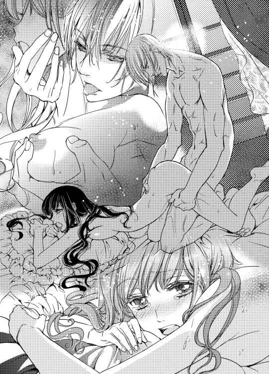
何度も吸われた唇は赤く腫れて、なおもキスを誘うようだ。
「アリシア、どういう方がいいの？ 言って」
レイモンドは、アリシアの中をかき混ぜるように、ぐるりと回した。
「んっ、んっ、かき回されるの、好きっ」
「そう？ でも突かれるのも好きだよね」
レイモンドは言いながら、ぐぐっと、奥を強く突き上げた。
「あぁっ...ん......」
強く穿つと、蜜がとろりと溢れて動きを助けるが、アリシアはそれには気付かぬように陶然と腰を揺すった。
「あ、ああ、好き、どっちも好きなの......」
「そう、僕も......好き？」
その声が甘く掠れたことなど、アリシアは気付かない。ただ単語に反応するように、後ろをふり向こうとする。
「んっ......」
甘えるようにこちらを見るアリシアに、レイモンドは彼女を貫いたまま体勢を返した。
「ああああんっ......」
陰茎を中心にぐるりと身体を回され、違う場所を刺激されたアリシアは甲高い声をあげた。
「好き？」
涙と涎でぐちゃぐちゃになったアリシアの顔を見ながら、腰を動かして、レイモンドは問いかける。
「あ、あああ......」
熱い肉棒にまた違う箇所を擦られて、アリシアはほとんど達きっぱなしの状態になっていた。見下ろされるような体勢で乳房を少しこねられ、尖りを引っ張られると、背筋にぞくぞくと電流が走った。
「ああ......っ」
脚を抱え上げられて突かれると、より奥に届く気がする。最奥の濡襞がざわざわと動いてレイモンドを締めつける感じがたまらない。
「......っ、好き？」
先ほどより余裕をなくした声音で、小さくレイモンドが問うた。
「ん、んっ、んん、好き」
「これが？」
額に汗を浮かべながら、レイモンドが皮肉っぽく問いかける。アリシアはむずかるように首を振った。
そのまま、上半身を起こすようにして、レイモンドの首にしがみついた。
「んっ、んっ、ん、レイ......好き。好きなのっ......」
「そう......」
薬を使って我を忘れている彼女に答えを問う愚かさに、レイモンドは、泣いているのか笑っているのかわからないような顔で唇を歪めた。
「僕も......だよ」
第五章 甘く苦い束縛
荒淫が過ぎて意識を失ったアリシアを大切に抱き上げて、レイモンドは用意させていた風呂に運んだ。
彼女の顔には涙の跡が濃く残っている。
レイモンドはその顔を見つめながら、全身に自身が付けた口付けの刻印を散らしている身体を、そうっと湯船の中に沈めた。そうして落ち着くのを確かめてから、その頬を撫でる。
目を伏せた彼女の顔にはまだまだあどけなさが際立ち、罪悪感がまた増した。
アリシアに使った媚薬は、性を楽しむというより娼婦の調教等の目的で使われるような強いものだ。その分負担も大きい。まして性そのものにそれほど慣れていないアリシアには、文字通り苦痛だったろう。
ここまで彼女を責め立てるつもりはなかった。
本当に、そんなつもりはなかった。けれど衝動を抑えられなかった。
アリシアが〝黒のダルトン〟であるのはわかっていたとは言え、彼女自身の口からブレンダンとのことを肯定されると、恐ろしいほど苛々した。
それでなくとも、ブレンダン中将はレイモンドにとってその存在すら許せない憎い相手だ。今でも内通者たちの存在を意識すれば、戦友達の屍が頭をちらつく。この恨みはいつまでも自分の中で消えないのだろう。
そんな唾棄すべき男が、アリシアに触れたのだ。
処女は守っていたとはいっても、汚らわしい裏切り者であるブレンダンが彼女を頻繁にエスコートしていたのは事実だ。例えドレス越しであってもあの手が彼女に触れていたかと思うと、今この瞬間ですら怒りで我を忘れそうになる。
アリシア自身にまったく危機感がなかったことも、レイモンドの感情を煽った。
（彼女は運が良かった。......その意味では、僕も）
もしもあの男の被害者に彼女の名が連なっていたら、自分は何をしでかしたかわからない。
レイモンドの吐きだした精やアリシアの蜜がついてしまった髪も洗おうと、そっとそれを指で梳いた。そうしているうちに泣き出しそうになって、彼はバスタブの縁に額をあててその衝動に耐えた。
「アリシア......」
離れている間、口の中でその名を呼ぶことを、何度繰り返しただろう。
何年かかっても、絶対に見つけ出すと決めていた。そして見つけ出したら絶対に離さず、自分のものにしてしまうのだと。
そうしないと本当に、もう生きていける気がしなかったのだ。
捕まえて、閉じ込めて、その代わり誰よりも優しくしたかった。
そう思って、大事に大事に囲おうとしているのに、彼女は自分を頼ろうとしてくれない。
彼女が自分を信じてくれたら何でもできるような気がするのに。自分もそれなりの力をつけたと思うのに......。
湯船の外から髪を洗ったが、それ以外はどうもやりにくく、アリシアの身体を抱えるようにして自分も湯に入る。彼女の温もりと重みにほっとした。
ようやく落ち着いたアリシアを起こしたくはなかったが、薬を洗い流す必要があるため、レイモンドはそっと指で彼女の膣の入り口を開く。
「ん......」
アリシアは小さい声を上げるが、無意識のようだ。
快楽は感じるのだろうか。ふと過ぎった疑問に誘われ、何も考えず膣内に入れた指はそのままに、その上にある花芯もこねくりまわした。
「あ......ん」
浅く吐息をつきながら小さな声をあげるアリシアは、心地よさそうだった。その顔を覗き込んで、息を付く。その夢見るような表情と指で触れる媚肉の温かさに、レイモンド自身も緩く力を持っていた。その欲を振り払う。
レイモンドは熱い息を吐きながらも、アリシアを綺麗にすることに専念した。
強く刺激はしないように中を丁寧に探っていくが、それでも少し感じるのか甘い声が断続的に漏れる。
安心しているみたいに力をなくして、レイモンドに身を委ねているアリシアは可愛かった。まるで、もう何も考えず溺れてしまえと誘惑するようだ。それに流されそうになるのを押しとどめ、頬や耳元にキスを散らすだけに留める。
（ずっとこうして......腕の中に閉じ込めていられればいいのに）
レイモンドは苦く考えた。
嫌われてはいないと思うし、信頼されていないわけでもない。それなのにどうしてか、彼女との間の壁のようなものが崩れてくれない。
閉じ込めても、身体を交えさせても、きっと本当には手に入らない。
ゆっくりと時間をかけてアリシアの全身を洗い上げて、彼女をタオルに包み抱き上げた。ベッドが汚れているので、ひとまずソファに寝かせて、クローゼットに入れてある予備のシーツと取り替える。
人が居れば頼むのだが、まだクリスも眠っているだろう。
軍隊に入ったばかりの頃になんでもやらされたので、一通りのことはできる。
アリシアを綺麗なベッドに寝かせて、自分も横に滑り込むと、たとえようもなく安心できた。
夜明けまではまだ間がある。
それまでは、彼女のすべては自分のものだ。
アリシアに腕まくらしながら、レイモンドはうとうとと先日のことを考えた。
「君の婚約者をこれ以上、追及しても意味がないのは、その通りのようだ」
上官......国王の片腕とも言われている海軍の雄、フランシス将軍は遠征から帰ったばかりだった。積み上げた議題を淡々と検討しては指示を出す彼は、今までさんざん議論されつつも平行線を辿っていた──他の上官はアリシアを喚問することにこだわり、レイモンドは強く反対していたせいだ──アリシアの処遇にあっさり一言でケリをつけてしまった。
彼はレイモンドをちらりと見て、唇の端だけで笑った。
「嬉しそうだな」
表情を変えた覚えはなかったので、レイモンドは一気に緊張を覚えた。
「だが、このままではいけないのはわかるだろう。我々はどうしても軍内部の膿を絞り出さなければいけないし、大佐もそれには同意しているはずだ」
「それは」
レイモンドは短く答えた。アリシアを傷付けたくない思いとは別に、仲間を奪った原因でもある軍の裏切り者には当たり前の義憤を覚える。
「まず君は婚約者にありのままを話して、協力を請うべきだ。そうだろう？」
ごまかすことを許さない眼光にちらりと見られて、レイモンドは息を呑んだ。彼はアリシアを軍に連れてくることに強く反対していたが、自分が彼女に詳細を話しているかどうかは曖昧にごまかしていた。
「彼女の協力は絶対だ。彼女が知るすべてを、そのありのままを話してもらうだけでは足りない。囮になってもらうのが、一番良い」
レイモンドは、今度こそ動揺を隠せなかった。一瞬身体がかすかに震えた。将軍の言葉にとっさに反論できない。それはレイモンド自身も考えたことがあったからだ。
正体不明の〝黒のダルトン〟。
彼女が何をどこまで知っているのか。それを把握している勢力はないのではないか。レイモンドの属する軍部はもちろん、今は捕まったブレンダンの同士たち、彼と立場を同じくする内通者たちも互いの愛人がどこまで察しているかなど、知りようがない。
反論の余地がなく、そうであればレイモンドは口を開かないことをフランシス将軍は理解していた。その声は淀みなく続く。
「奇遇なことに、彼女の研究は、また別の意味で内通者が喉から手が出るほどほしいものだ。であるなら、......わかるな」
レイモンドは項垂れるしかなかった。軍人として学んできたことと、元からある判断力が正答を告げている。
──アリシアを餌にして、内通者をおびき出すのが一番早い。
将軍は、顎髭を撫でた。
「何をそんなに怖がる？ 彼女だとて軍の関係者だ。狙われているのがわかれば自分から保護を求めるだろう。希望があるだけ警備を手厚くすればいい。ありのままを話して協力を請うのが難しい状況ではない」
将軍の言葉はどこまでも正論だった。
だからこそ訝しむのも当然だった。アリシアを巻き込みたくない。危険にさらしたくない。それはレイモンド個人の私情でしかないのだから。
それでも彼は額に汗を浮かべて、交渉の余地がないか必死に頭の中で探った。相手は一枚上手である。けれど大枠を受け入れれば、多少の要望は飲んでくれるはずだ。
「アリシアのことを、重大な秘密を知る者だとして、情報を流すことはかまいません。ただ警備は万全にしてください」
レイモンドは慎重に言った。
「そして......彼女自身に囮の立場を話す時期は、自分に任せてもらえないでしょうか」
その希望はあっさり通った。
その後は迷いながら上官に現状の詳細を報告し、今後の運びを相談する。すべて終えて基地を出た瞬間、恐ろしいまでの疲労感が自分を包むのがわかった。外はひどい雨だった。
馬車で帰ったものの少し濡れたらしく、アリシアが心配そうに駆け寄って優しくしてくれた。嬉しかった。
こうやって少しずつ近付いていきたかった。
それなのに、明日の自分はまた彼女にショックを受けるようなことを聞かせて、不信感を煽るのだ。そう思うと憂鬱でならない。
（どうやれば、昔みたいに彼女の心に寄り添えるのだろう）
彼女はちゃんと隣にいるのに、何が二人の邪魔をしているのだろうか。
◇◆◇
「おはよう」
朝陽を感じて目を開けると、レイモンドの美しい微笑みが目に入る。
「............」
アリシアは無言でのろのろと身を起こした。
不機嫌な様子のアリシアにも、彼はかまわず抱きしめてキスをする。
「今日も君は綺麗だね。瞳のアメジストが輝いているよ」
「まだ眠いのに、そんなことあるはずないわ」
「だからじゃないか、少し潤んでいる」
ああ言えばこういう。アリシアに笑いかける彼の、不自然に弾んだ様子が少し怖い。
〝黒のダルトン〟のことを詰問されてから後、アリシアは毎夜、レイモンドの部屋で寝るように強制された。
アリシアは新薬開発の功労者だ。それがあってこれまで遠慮されていた重要参考人としての扱いが、アリシア自身が自分が〝黒のダルトン〟だと認めたために、本来あるべき扱いに戻すよう求められた、ということらしい。
レイモンドと寝て、彼と一緒に食事をし、彼と一緒に実験の最終チェックに入る。
レイモンドが所用でどうしても近くに居られないときも、彼の部下と思しき将校に見張られる形となった。
もはや面会人も、日々の買い物も、レイモンドの監視なしではままならない。
レイモンドは原料となる薬草を近隣の研究所でも栽培するように手配し、薬草市場からも買い集めてしまった。研究室は、実験というよりは、薬品工場の趣きをなしていた。
完成した薬を容器に詰めていくのが最近のアリシアの仕事だ。それを日に一度、係の将校が受け取りにくる。
その際、レイモンドに書類を渡したり、情報を交わしたりしているようだが、アリシアは蚊帳の外だった。
（そもそもスパイの容疑がかかっているのだもの、当然か......）
薬の製法が重用機密だということで、作るのはアリシアとレイモンドの二人だけだ。
手が足りなくなれば信頼できる者を雇い入れることを検討すると言っていたが、今のところ、需要と供給のバランスは取れているとのことだった。
（けど私はともかく。レイはこれで......いいのかしら）
軍功を上げて爵位まで賜ったヴィリエ侯爵......そして海軍の高官でもある。
こんな辺境の研究所で、手順さえ分かれば誰でもできる仕事をしていて良い人物ではない。
アリシアは何度も問いかけたが、レイモンドは笑ってはぐらかすばかりだった。
「そもそも今まで働きすぎるくらい働いていたから、いいんだ」
薬作りに精を出しながら、レイモンドは言う。
「ここで休みをくれないなら徴兵期間の二年きっかりで除隊するといったら、皆、快く許してくれたよ」
「......徴兵期間ってあとどれくらいなの？」
「ここでの滞在期間中は勘定に入れないことになっているから、あと半年くらいかな。けれども引き止められているんだ」
「それはそうでしょうね」
良くも悪くも、ルヴェールランドは軍事国家だ。
そうでなければ周辺諸国と対等に付き合っていくのは困難な小国でもある。自国の独立性と平和を守るための軍事力の維持は、国としての最優先課題でもあった。
レイモンドのように優秀な人材には、できるだけ長い期間、軍の中枢で活躍してほしいと考えるのは当然だろう。
「領地は家令がうまく取り仕切っているし、父ももう少しは国に仕えろとうるさい。僕はあまり好きではないんだけど」
「そう」
首に縄をつけられているような状態で、彼と普通に話をしている自分が不思議だった。
アリシアは、時折ヒステリックに笑い出しそうになる自分を堪える。
（レイは私を信じていない......彼は戦いで負った傷で、その原因となるものに関わったかもしれない私の事情を、なんとか探り出したいと執着してるだけなんだわ）
アリシアは冷え冷えとした心で考えた。
（そうして私も......彼を信じられずにいる）
「あ、ああっ......」
同じ寝台で寝ていることで、時折二人は衝動に流されるように身体を交わらせていた。手を伸ばしてくるのはいつもレイモンドだ。
だがアリシアも、もはや抵抗する気力がない。
何も隔てるものがない状態で素肌を触れあわせているときが、一番安心できるような気がしていた。
レイモンドは、アリシアの手を取り一本一本の指を丁寧に口に含み愛撫してくる。彼が徹底して彼女に作業をさせなくなったことで、アリシアの手はいつのまにか、以前のような滑らかさを取り戻していた。
爪もクリスが毎日磨くことで、美しい光沢を保っている。
「ふ......、もっ、そればっかり嫌......」
アリシアは身体を重ねているのに、執拗に指ばかりに執着するレイモンドを睨む。レイモンドは上目遣いにアリシアを窺った。
「それ、以外は何をしてほしいの？」
「もっと......他のところも」
「他って、たとえば、どんな」
「もうっ」
アリシアはレイモンドを睨み付け、彼の唇から指を抜き取ると、彼を引き寄せて唇を重ねた。空いている腕で、彼の手を取り自分の乳房に持っていく。
「ここ......」
「ここ、ここがいいの？」
レイモンドは、柔らかな丸みを楽しむようになぞって、ふわふわと揉んだ。
「ん......」
「気持ちいい？」
「いいわ......」
「これは？」
レイモンドが先端の赤い尖りを指で摘まみ上げる。
意味ありげに周辺を撫でられ、くにくにと押しつぶすように刺激されると、指を押し上げるように立ち上がっていくのがわかった。
「ん、ああ、いい......」
片方は、指で悪戯されながら、片方を舌で舐め上げられて、アリシアは身悶える。幼い子がするように乳頭に吸いつかれ、軽く吸い上げられるのが一番好きだった。
レイモンドもそれを心得て、さんざん焦らした後でアリシアに問うてくる。
「どうしてほしい？」
「ん......いつもみたいに」
「いつもって？」
「す、吸ってほしいの......」
「何を？」
「もう......意地悪っ」
怒ったように、彼の胸を押すのも、もうお決まりの戯れのうちだ。
「だってちゃんと言ってくれないとわからないじゃないか、何を吸ってほしいんだ？」
「私の......」
残りはレイモンドの首にすがりついて、耳元に囁きを落とした。レイモンドは呆れるほど綺麗に笑って、ようやくアリシアの望むようにしてくれた。
さんざん焦らされた後に与えられる快楽は、易々と得たものより、よほど深い。
「あ......」
アリシアは胸を反らすようにして、レイモンドの唇にそこを押し付けた。
「これ、好き？」
「好き......」
戯れのように触れあっているうちに、身体は熱を帯びていく。アリシアは絡み合う脚を擦りつけるようにレイモンドに腰を押し付けた。
「んっ......」
レイモンドも小さく声を漏らし、アリシアを見つめた。
「こらえ性がなくなったね、もう欲しいかい」
「......っ、焦らされるの、あまり好きじゃない」
「あまり早く終わってしまったら、つまらないじゃないか」
「んっ、終わらなければいいでしょ」
「難しいことを言うね......」
夜の間だけの、親密な会話。互いの身体に没頭しているときだけは、他のことを忘れられる。
肝心なことを何も伝え合わないまま、二人は行為に溺れていた。
性急にレイモンドが入ってきても、もはや痛みなど欠片も感じない。彼は一番良い角度を心得ていて、アリシアも彼に協力を惜しまなかった。
切なさを覚える箇所が擦れあうと、躊躇いもなく腰をゆすって快楽を強請る。
「っつ......」
アリシアが感じると、それがレイモンドにも伝わるらしい。彼が息をわずかに深く吐いて、快楽を耐えている様子が好きだった。
何もわからなくなりたい。
（子供が出来てしまえばいいのに）
アリシアは、ぼんやりと考える。
後のことは何も考えない。ただ、レイモンドの子供が出来れば幸せだろう。
たとえ彼を失っても、子供はアリシアの傍に居てくれるから。
アリシアは大きく脚を開いて、レイモンドをより奥深くに感じられるよう、深く抱き合った。
◇◆◇
レイモンドが呼び出しに応え外出した午後のことだ。
残されたアリシアは、朝からずっと感じていた視線の主を捜した。
「私に何か用があるのかしら」
レイモンドの代わりにアリシアの監視を任されたらしい女性の兵士。彼女はレイモンドが居なくなってからずっと、突き刺さるような目でアリシアを見ていた。
流石に無視をするのも限界で、部屋の隅に居る彼女に近付いたアリシアは、彼女の顔を初めてちゃんと見て目を丸くする。
「ビアズリー......さん」
それは同級生のチェリー・ビアズリーだった。アリシアにレイモンドはお金目当てでアリシアに求婚したのだと教えた相手。
貴族に課される徴兵義務に男女の別はない。けれど、女性はアリシアのような研究職か、事務的な仕事を負うのが普通だった。ましてチェリーは伯爵令嬢......高位貴族だというのに。
アリシアの疑問を感じたのか、彼女はツンと顎をあげて言った。
「自分で志願したのよ。レイモンド様の傍に居たかったから」
「............」
アリシアは、なんと言っていいかわからなかった。
アリシアにやたら突っかかってきて、誤解を与えるようなことまで教えてきた彼女。きっとそれはアリシアがレイモンドと親しく言葉を交わしていたからなのだろう。
つまり、彼女はレイモンドを好きなのだ。
敵意とはっきり言っても間違いじゃない。それくらい強い視線で、彼女は憎々しげに毒づいた。
「彼の近くに配属されたのは良いけど、まさか、あなたと再会する羽目になるとは思わなかったわ。裏切り者の愛人さん」
「濡れ衣だわ」
取り合う気にもならず、アリシアは短く答える。
「しらばっくれる気？ 皆、言っているわよ。裏切り者の仲間が見つからないのは、ダルトンという女が敵と通じて匿っているからだと。内通者の愛人なんですってね。ねえ、なんとか言ったらどうなの、薄汚い裏切り者のくせに！ レイモンド様はお優しいから、そんなあなたを庇って立場を悪くされているのよ！」
アリシアは目を見開いた。彼女の言葉を真に受けてはならないと思う。そのせいで以前も、レイモンドを傷付けたのだから。でも。
「あなたと関わってレイモンド様は、おかしくなってしまったわ。あなたなんか居なくなればいいのに......」
チェリーは潤んだ目で、アリシアを睨み付けた。
その顔には、恋する相手を一心に庇おうとする、ひたむきな感情しか滲んでいない。それがアリシアに対する憎しみに繋がるのだから、受け入れがたくはあったけれど。
「レイモンドは......」
「呼び捨てにしないで！ 何もかもレイモンド様に守られている立場のくせに、ぬくぬくと二人で暮らして彼の負担になって......。知らないんでしょう。彼はあなたを批判した将校に暴行したかどで、謹慎処分を受けてここにきたのよ。そのうち降格されるって噂されてるわ」
「ビアズリーやめるんだ！」
中年らしい男の厳しい声が響いた。クリスか誰かがこの状況を外に居る者に告げ口したらしい。兵士が二人やってきて、チェリーを引き立てて、部屋の外に連れ出した。
悪態を吐く女性の声が聞こえてきたけれど、中味までは聞き取れない。
「大変失礼しました。警備は私が代わりますので......」
士官らしい中年の男が敬礼してから、チェリーがいた部屋の隅に向かおうとする。アリシアは彼を呼び止めずにはいられなかった。
「本当なんですか」
「は......？」
「レイが......レイモンド大佐が、私の批判をした他の将校に暴力を振るって謹慎処分となったというのは」
「はあ、いささか、彼女の主観に塗れた言い方ですな。それは」
穏やかな目の色をした士官は、優しい口調で、アリシアに語った。
「批判、などと呼べるものではない悪口雑言でした。大佐は品のない言葉で無実の女性を愚弄した部下を処罰しただけですよ。ちょっと乱暴なやり方でしたが」
彼は、思い出したのか、くっくと笑った。
「大佐があんなに怒ったのを見たのは初めてでした。私もいささか恐怖を覚えましたよ......」
それは〝黒のダルトン〟が集めていた支援金の行き先が判明し、その素性がアリシアであるらしいと判明したばかりのこと。
アリシアの功績と、彼女の研究の重大さを鑑みて慎重な対応をとの話し合いがあったとき、ある士官が吐き捨てるように言ったのだ。
『裏切り者に股を開いて甘い汁を貪っていただけの女だろう。研究とやらもどうせ男性職員をたぶらかしてでっちあげたものに違いない。そんな女のために我々の安全が脅かされるなど冗談じゃない。さっさと連行して拷問でもなんでもすれば......』
その発言に大半の者は眉をしかめていた。
レイモンドは微塵も感情をうかがわせない顔で立ち上がった。そしてつかつかとその士官に歩み寄り、椅子ごと彼を床に蹴り倒して肩を踏みつけて告げた。
アイスブルーの目がこれ以上なく冷たく輝き、周りにいた誰もが身動きすらできなかった。
地獄の底から聞こえてくるような、恐ろしく冷えきった声だった。
『これ以上、彼女について一言でも口を開いたら、おまえを殺してやる、二度と自分の前にその顔を見せるな』
「まあ......」
アリシアは、驚きのあまりしばらく言葉が出てこなかった。
「でも......謹慎処分って......」
「一応、軍規というものがありますからな、でも我々も上のものも言ってますよ。これは謹慎という名の休暇だと。降格なんてありえません。愛されてますな。おっと失礼」
目を見開くアリシアに、彼は気取った様子で頭を下げた。
「私を含め、大佐の軍の者は、幾度も大佐に助けられ全幅の信頼をおいています。その大佐があなたを信じるというのだから、我々にそれを疑う理由はありません。先刻の彼女は、失礼いたしました。大佐が、なるべく護衛には女性士官が望ましいというので......うっかりハズレを掴まされましたな」
その後、アリシアは落ち着かない気持ちでレイモンドの帰りを待った。胸がドキドキして、どうすればいいかわからなかった。
（レイが私を侮辱されたと思って、本気で怒った。それも......処分を受けるほど）
以前のアリシアだったら、それをひたすらすまなく思い、萎縮するだけだったかもしれない。
けれど今の彼女は、それを嬉しいと思ってしまっていた。
だって。
（レイは私の監視のために来たんじゃない......私を守るために来てくれたの？）
『何度言えばわかるんだ。どうしてすべて自分で解決しようとする。どうして話してくれない。僕を頼ろうとしてくれない』
そう言って苦悩に満ちた目を向けた彼。何故、その言葉を素直に受け止められなかったのだろう。
『僕は、そんなに頼りがいがないのか......』
アリシアは、自分の頑なな態度が、どれほどレイモンドを傷付けていたのをようやく理解した。あのときも、あのときも、彼はただ心を痛めていたのだ。
（なのに私は自分に自信がなくて。......レイに、あんなに素敵な人に愛されるなんてありえないって諦めてて......）
今ならわかる。それはただの言い訳だ。
いつもいつもアリシアの中に根付き、アリシアの行動の根底にあった下らない言葉は、アリシアの心を守る鎧だった。レイモンドに恐ろしいまでの執着を向けられた時も、哀しげに見つめられ懇願されたときも、いつもその言い訳で逃げていた。
自分は彼に、なんて残酷なことをしてきたのだろう。
彼の求婚を実家の財産目当てのものだと決めつけ、実家が破産したら別れるしかないと思った。彼に一言も相談せずに姿を消して、婚約解消の手紙を送りつけた。
すべて、彼からの愛はないと思っていたからできたことだ。
でも、そうでなかったとしたら。レイモンドが本当にアリシアのことを恋しいと......愛してくれていたのだとしたら。
思い返せばそれだけ、自分がしてきたことに、彼に向けた態度のひどさに身体が震える。
〝黒のダルトン〟のことだってそうだ。彼にしてみればアリシアの手がかりはそれしかなかったのだ。
アリシアをいくら信じてくれていても、アデルの存在を知らなければアリシア自身がブレンダンと接触し、危険に身を晒していたのだと思うしかない。軍に属するものとして、ブレンダンに関する情報を少しくらい得ようとするのだって、当然のことだ。そんなことがどうしてわからなかったのか。
（見ないふりをしてきたから......）
期待しなければ傷付かずにすむ。
まだ未熟な頃に「棒のような身体だ」と言われたこと、チェリーから「財産目当てだ」と言われたこと。そんな些細なことに傷付いて、あとはずっと、見ないふりをしてきた。
自覚してしまえば、それは震えるくらいの衝撃だった。アリシアはずっと自分が傷付いている振りをしてレイモンドを傷付けてきたのだ。
（レイに謝らなくちゃ......）
自分の愚かな思い込みも、傷付きたくなかったという卑怯な心も全部全部告白しよう。それでもレイモンドが自分を見捨てないでいてくれるなら......。
アリシアは、初めて自分からレイモンドに、彼の心に向き合おうとしていた。
しかし、帰ってきたレイモンドはすこぶる機嫌が悪かった。
「サイラス少尉と親しげに話をしてたって？」
監視役を外に出して二人きりになると、レイモンドは苛々した様子をまったく隠さない。険のある声でそう言い放った。
「サイラス？」
何を言われたかわからず、アリシアは首を傾げる。
「途中でチェリーに代わって、君の護衛をしていた士官だよ」
「私、彼の名前も聞かなかったわ。失礼だったかしら」
レイモンドはそれを聞くと、少し焦った様子で慌てて言った。
「いや、いい。今の名前も忘れてくれ......チェリーのことも......悪かった。彼女が君に悪意を持っていたなんて、まるで気づかなくて」
「いいの。それより......」
アリシアが急いで、今までのことを告白しようとしたとき、レイモンドが難しい顔で言った。
「それより......今日、基地でマティアス少将に会ったよ」
「マティアスに......？」
何も考えずに問い返したアリシアははっとして、レイモンドを見つめた。
「まさか？」
「ああ、全部聞いた。君はなんてバカなことをしたんだ」
レイモンドは厳しい顔でアリシアを問い詰めた。身体ごと迫ってくるので、壁に追い詰められた形になる。
レイモンドは、冷え切った声を出した。
「従姉の名誉と幸せを守るために、ブレンダンに彼女がされたことを隠すのはまだいい。だが〝黒のダルトン〟のすべてを君が引き受ける必要はなかったはずだ」
レイモンドはアリシアの肩に両手をおいて、なじる。
「従姉の彼女がやっていたことだって、研究所の資金援助を請う活動だったのは間違いないんだ。その途中でブレンダンの魔の手に落ちそうになり、間一髪でマティアスに助けられた。筋書きなんてそれでいいだろう」
「けれど、でも！」
「〝黒のダルトン〟の行状が派手で、不道徳な面があったのは確かだ。しかしそれは君の従姉の問題だろう」
そんな風に冷たく切り捨てられて、アリシアは息を呑んだ。
どうして彼が突然こんなに冷たいひとになったのか、わからない。
レイモンドは、あのときマティアスに助けられたアデルの姿を見ていないから、そんなことが言えるのだ。
簡単に言わないで。あれは私のせいでもあるのに。私が彼女にできることはあれしかなかったのに。
そうやって荒れる感情をそのまま口にすることはいけないと、それだけを思って唇を噛む。
「それが結婚の障害になるというなら、マティアス少将がなんとかすべきだ。彼には軍でも立派な功績と地位があるのだから、どうしても両親を説得できないなら縁を切ればいい」
「え......でも......」
あれが、あの時に考えられる最高の手段だったのだ。
もうマティアスとアデル二人の問題じゃない。アリシアが巻き込んでしまった時点で、三人の問題だった。
「レイモンド、待って」
「勿論、そんなことを言い出した君が一番悪いが、それにうまうまと乗ってしまった彼も責任がある。自分の愛する者のことしか考えない気持ちはわからなくもないけどね、だったら彼だって、僕の気持ちが理解できるはずだろう」
レイモンドは吐き捨てるように言った。
「彼のことは一発、殴っておいたよ」
「ええっ」
アリシアは目を見開いた。
「そんなっ、そんなことしたら......」
「マティアス少将は、黙って受け入れていたけど、所属が違うとはいえ階級が上だし、結構な数の見物人がいたからね。もしかしたら謹慎期間が延びるかもしれないな」
レイモンドは淡々と言った。
「レイ......」
「と、そんなことはどうでもいいんだ」
レイモンドは底光りする目でアリシアを見つめた。アリシアは危険を感じて後退る。その目を覗き込んだアリシアは、彼が深く静かに怒っていることを知った。
「君にはどうしても学んでほしいことがある」
「や......っ」
引き立てられるように寝室に連れて来られると、レイモンドはスカーフを使って素早くアリシアの両手首を後ろ手に縛りあげ、目元にも同じ布をあてた。
視界が白で覆われて何も見えなくなる。
「な、なに......」
「言っただろう。君には学んでもらいたいことがあるんだ」
そう言って、彼はアリシアを無理矢理立たせて、また腰掛けさせた。人の体温を背中とお尻に感じて、アリシアはレイモンドの膝の上に座らされたことを知る。
「なに......するの」
「相変わらず軽いな......ちゃんと食べている？」
レイモンドの声がうなじをくすぐった。アリシアの髪に顔を埋めて、匂いをかいでいる気配がしたと思うと、少し唇をずらされて耳たぶを噛まれた。
「やっ......」
こんなふうになってしまった彼に逆らっても無駄だと知りながらも、アリシアはじたばたと暴れずにはいられなかった。
「細いわりに、ここはけっこう育ってるけど」
彼の手が、背後から回って、服の上から胸を撫で回して掴んでくる。戯れのように遊びながら、ひとつひとつボタンを外していく。
「ね、ねえ、おとなしくするから、せめて、目隠し外して......」
アリシアは必死で強請ったが、レイモンドに譲歩する気配はない。
「だめだよ、これは教育でお仕置きだから。君はもっと危機意識というものを学ぶべきなんだ」
レイモンドの声は優しくなだめるようで、どこか怖い。
「お人好しすぎると思えば、無謀なことに飛び込んで......本当にわかってるのかい？」
レイモンドの唇が、かりっと耳たぶを噛んだ。
「ひっ......」
甘噛みというには少し強く、アリシアは文字通り悲鳴をあげる。
「あちこちに資金援助を頼んで回って、しかも混同される相手はこういうことに抵抗がない相手だった。いつ勘違いされて同じようにこんなふうに引っ張り込まれて悪戯されるんだかわからなかったのに」
レイモンドは冷たい声を出した。
「怒りのあまり気が狂いそうだ」
「ひっ......」
レイモンドの声音に本気を感じて、アリシアは本気で身をすくめた。
アデルは奔放に見えるだけで、そこまで素行はひどくない。そう弁解したいのに、今ここで彼女の名前を口にした途端もっとひどいことが起きそうで怖かった。
「ほら、何も見えないんだから、触覚に集中しないと、何をされるかわからないよ」
アリシアを膝に乗せたまま、レイモンドの右手が右の乳房を捕らえ、赤い尖りをまさぐった。そうして、左手はそろそろと、左脚を撫でまわす。
「やっ......」
膝小僧を掌全体で包むようにされ、乳首を敏感な乳頭をくりくりといじられて、アリシアは必死で声を噛み殺す。耳元で囁かれると息が耳にかかって、その刺激すらたまらない。
手首を拘束され、視界を塞がれることがこんなに怖いものだとは思わなかった。アリシアは必死で暴れるが、レイモンドに抱え込まれた状態では子供がむずかるようにしかならない。
「あれ、どうかした？」
レイモンドは揶揄するように言った。ふいにぐいっとスカートをたくしあげられ、陰部に手をやられてびくりとする。
「こんな事をされてるのに、もうびしょ濡れだけど......怖いんじゃないの？」
つーっと、指が、下着の上から秘裂をなぞった。
すでにそこは蜜をもらし、下着が貼り付いたようになっているのは、アリシアにもわかる。
「おもらししたみたいだね、不快だろう、脱がしてあげる」
レイモンドが、そう言いながら下着を引き下ろしていく。熱くなった秘所が外部にさらされる感触にぞくんとする。
きつく閉じようとした脚は、レイモンドの手で無理矢理広げられてしまった。
「ひ......ん」
アリシアは啜り泣いた。見えないけれど、きっと蜜壺は何かを欲しがってひくひくと震えているだろう。ひっそり隠れた花芯も潤み充血して刺激されるのを待っているはずだ。その全てがあの美しいレイモンドの目にさらされていると思うと、身が縮むようだった。
浅ましい身体。浅ましい私。
そんなふうに、レイモンドが作り替えてしまった。
「何をされるかわからないのに、ここをぬるぬるさせて、僕の指を咥え込むように柔らかくしてしまうんだね。本当にそれでいいの？」
「ひっ」
突然、肉裂にひやりとした感触を当てられて、アリシアは身体を撥ねさせた。なにかはわからないがレイモンドの指とは違う。ひやりとして、硬質なもの。
細いそれは、ちょっとレイモンドが力を入れると、たやすくアリシアの中に入っていった。
「な、なに？」
「わからない？ 君がいつも研究室で使っているじゃないか。それも楽しそうに」
レイモンドの声こそ、楽しそうに響く。
「なんだと思う？」
彼はゆっくりとそれを動かした。感じるところにあてられて声を上げそうになる。つるつるとして、ひんやりとした感触には確かに覚えがあった。
「ガラ......ス？」
「うーん、それじゃ半分かな」
レイモンドはくすくす笑う。
「試験管だよ」
「なっ......やめてっ！」
アリシアは恐怖にすくんだ。試験管は薄いガラスで出来ている。熱したり冷ましたりするので意外と丈夫ではあるが、力を込めたらひとたまりもない、そんなものを一番、敏感な胎内に挿入れて、もし割れたりしたら......。
「わ、私に怒っているから、傷付けたいの？」
アリシアは怯えた声を出した。
「まさか」
レイモンドは笑ったようだった。
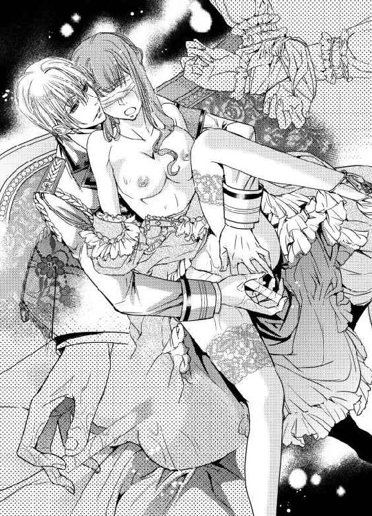
「君を髪の毛一本だって、傷付けたりはしないよ」
「言っていることとやっていることが違うわよ......」
アリシアはレイモンドの膝の上で身をくねらせた。
「何を怯えているの？ こんな細いものを、柔らかくなったここに入れているだけだ、大丈夫だよ。膣を急に収縮させたりしない限り......ね」
レイモンドはうっとりするように、歌うように言った。
「さあ、確かめてみよう、感じたらどれくらいここが締まるのか」
太腿に軽くかけられていた左手がぐっと力を増して、押さえつけてきた。
下から掬い上げるように左脚を抱え上げられ、開いた陰唇の中をひやりとした棒が抜き差しされる。時折角度を変え、弱いところを刺激されると、ぴくぴくと身体が震える。
「ああ、一本じゃ物足りないかな」
「やめてっ！」
「大丈夫だよ、無茶はしない」
ひたりと、もう一本の棒が押し当てられ、潜り込んでくる。
ぴったりと嵌まりこんだをそれを抜き差しされ、左手の指がくりくりと花芯を刺激する。くちくちと濡れた音が陰部から聞こえた。
「あっやっああ、やめっ......ああ......」
怖いのに、怯えているのに、それとは関係なく性感は高まっていく。
「感じてるの？ 気持ちいいって......」
「ん、んん」
迫ってくるものが怖くて、アリシアは首を振る。
認めればいいのか。気持ちいいと言えば解放してもらえるのか。だけど、それは怖くて......何かわからないけれど、怖くて。
「アリシア、言って」
二本の棒がかきまわすような動きに変わった。
あやすように膝にのった身体をゆすぶられて、花芯を弾かれて、アリシアはぐずぐずに溶かされてしまった。熱に浮かされた頭では、彼が何を求めているのかもわからない。
「言わないと、このままだよ、達したらどうなるかわかる？」
レイモンドが、促すように囁いた。
「あなたは私を......傷付けないって、言った、......わ......」
アリシアは、譫言のように呟いた。
怖い。身体の中に、異物を入れられ、それが壊れてしまうものかもしれない。
けれど、一方で、レイモンドが自分を傷付けるようなことはしないと、どこかで信じている。
「んっ」
身を細かく震わせて、アリシアは軽く達した。
媚襞がきゅうっと、ぬるくなった異物を締め付ける。けれどそれが割れるような様子はなかった。
ぬるんっと、それが引き抜かれ、目隠しが外された。
カランっと眼の前のテーブルに、透明な棒状のものが転がされる。卑猥な蜜にまみれたそれは、試験管ではなかった。
「水晶の棒だよ、綺麗に削って、消毒もしてある」
レイモンドが自嘲するように言いながら、アリシアの手首の拘束もほどいた。
「君の言う通りだ、いくら怒っても君を傷付けたりはしないと誓ったのに、僕はどうかしてた......」
レイモンドは膝に乗せたアリシアを立たせると、静かに自分も立ち上がった。
「ごめん......」
小さく呟いて、そのまま研究室を出て行ってしまう。
アリシアは呆然として、その姿を見送った。
「レイ......？」
夜になっても、どこかに出ていってしまったレイモンドは帰ってこなかった。警護の人員は残されているので、その点は安心だが、アリシアは一人取り残された感じを味わっていた。
レイモンドが怒っていた理由、彼が吐きだした言葉の数々を、何度も考える。
自分の身の安全を考えれば、確かにアリシアは軽率だった。
どこかで自分なんかどうなってもいいという気があった。
両親と遠く離れて暮らすようになって以来、アリシアは守るものが一つもなくなってしまったのだ。
それを彼が本気で怒ってくれたのだとわかる。レイモンドだけが、叱ってくれた。
「アリシア様......。今日は、どちらでお休みになりますか」
レイモンドの不在が、時折ある用事での外出と違うことに気付いたらしい、クリスが遠慮がちに声をかけてきた。
アリシアは少し迷ったが、小さく言った。
「レイの部屋にするわ......もしかしたら、夜中に帰ってくるかもしれない。それを待ちたいの」
「はいっ」
クリスはさも良い思いつきだというように、元気いっぱいに返事をした。
そのまま、いつものように寝る仕度を手伝ってもらって、ベッドに入ったがどうにも寝付けなかった。最後にレイモンドが見せた寂しげな顔が目の前にちらついて仕方ない。
アリシアは何度も寝返りを打っては、ついに諦めてベッドから這い出した。
夜着を脱ぎ捨ててドレスに着替える。レイモンドの部屋にも、数着アリシアのドレスが常備されていた。
（外にいる士官に聞いたら、レイの行き場所を知っているかもしれない）
少しだけ。彼の様子を見るだけ。
アリシアはそう自分に言い聞かせる。ランタンに灯を入れ、足早に廊下を歩いていたときだ。研究室から、小さな物音が聞こえた。
「誰？」
アリシアは口の中で呟いた。
研究員は今はアリシアとレイモンドだけだが、外は勿論、中も定期で見回る兵士はいるし、清掃や植物園の世話などで雇用されている者も多い。だから人の気配があってもおかしくはないのだが、灯りがついていないのは変だ。
まして研究室にはアリシアやレイモンド以外の者は勝手に立ち入らないようになっていた。
「誰!?」
アリシアは鋭く声をあげた。
急いでランタンを掲げて、研究所の奥を覗き込む。慌てたような人影と、カチャリと何かを取り落とすような音が聞こえた。
暗がりに、何かをかぶせて細くしたランプの灯りが見える。よく気をつけると、床にもてんでんばらばらにノートや書物、そして薬草が散らばっていた。
「ひどい......」
アリシアは息を呑んで、キッと相手を睨み付ける。
「何のつもり？ ここには、お金になるようなものなんて......」
「今、研究している薬があるだろう。それの製品をよこせ」
ガチャっと、鉄の音がした。眼の前に突き付けられた銃口に、アリシアは息を呑む。
「何を......」
「声を出すな！」
男のあせった声が聞こえた。声から察するに、四十か五十か......ともかく壮年の男らしい。
「早くしろっ......」
手がぶるぶる震えている。アリシアは、目を細めた。
あまりうまい銃の遣い手ではないらしい。けれど、この距離では刺激するのは危険だ。
アリシアはなるべく冷静になるよう心がけながら、壁に作り付けてある開き戸棚を開けた。
「何をする！」
「薬を取り出すだけよ、それが必要なんでしょう？」
言いながら、扉の陰の見えないボタンを押す。伝声管で、研究所内になんらかの警告はいくはず。
（誰か、お願い......）
日に一度、出来た製品は運び出してもらっている。だけどその後に精製したものが少し残っていた。これくらい渡してもどういうことはないが、外国に持ち去られ、成分を分析されたら、製法が流出してしまう恐れがある。
「早くしろっ」
「待って、厳重に保管しているのよ」
（何か......代わりに渡せるようなものはない？ 相手の目をごまかせるような......）
アリシアは、思案しながら、戸棚の中を物色した。
「あったわ......」
ようやくそれらしく見える小瓶を捜しだして、アリシアは息をつく。
以前に改良した喘息の薬だが、特に秘密にしておくようなものではない。男は薬の区別はつかないようだった。ギラギラする目でアリシアを見ている。
「寄越せっ、早く」
手を突き出すので渡そうとすると、男は銃を突き付けたまま、確かめるように言った。
「おまえが、〝黒のダルトン〟だな。アリシアとか言ったか」
「え......」
アリシアは背筋にぞくりとするものを感じた。ただ秘薬をかすめ取ろうというだけの者なら、その名前を確かめる必要はない。
男はアリシアの手から、ひったくるように小瓶を取ると、冷たく笑った。
「悪かったな、こっちの方がついでだったんだ」
銃口が鈍く光った。その時だ。
「アリシアっ」
レイモンドの声が銃声と被る。
だけどアリシアに怪我はなかった。銃を撃ったのは目の前の男じゃない、室内に飛び込んだレイモンドがアリシアに向けられた侵入者の銃口を銃弾ではじき飛ばしたのだ。
すべてが一瞬だった。
男が手を押さえたところに彼が躍りかかって、後ろ手に拘束する。月明かりがかろうじて辺りを照らすだけの室内だ。物の陰影しかわからないくらいに視界は暗かったけれど、侵入者が完全に制圧されたのはわかった。
アリシアはほっとした、その時だ。
ドアの外からもう別の男の声が聞こえた。
「ロナルド、遅いぞ、どうした？」
（もう一人いたの!?）
「見つかっちまった、だが、相手は一人だ。助けろっ」
拘束された男が叫ぶ。その男の頭をレイモンドが銃の後ろで殴って気絶させた。それが彼を後手に回した。
助けろと言われた男が何故か研究室内に踏み込み、パニックになったように滅茶苦茶に銃を乱射しはじめたのだ。
その銃弾の一つがアリシアの横を掠める。身体のすぐ横で何かが弾けるような音がした、その意味に一拍おいて気付いてしまった。
「きゃあっ」
アリシアが叫ぶのと、侵入者の銃口がその声に呼ばれるように彼女に向くのと、レイモンドが庇うように彼女の前に立つのがほぼ同時だった。
鮮血が飛び散る。レイモンドが肩を撃たれたのだ。
「くっ」
彼の苦悶の声に頭がまっしろになる。
しかしレイモンドはわずかによろめきながらも、その腕を伸ばし侵入者に向けた。その手の先に握られた銃が相手を撃ち抜く。
室内が静寂に包まれた。
男が、ゆっくりと前のめりに倒れる。
火薬の匂い、書類と薬草が散乱した室内、どこからか侵入した賊。そんなものはどうでも良かった。アリシアは慌ててレイモンドに駆け寄る。
しかしレイモンドも、周囲が落ち着いたのを確かめ気が抜けたのか、ぐらりと重心を崩した。アリシアの力では彼の身体を支えられない。
「レイっレイっ、しっかりして、レイっ！」
アリシアは半狂乱になって叫ぶ。ずるずると床に倒れ込む彼の身体はとても重くて、彼が完全に脱力しているのがわかる。どうしようもなくて、彼女はレイモンドの身体を支えながら床に座り込んだ。
「アリシア......怪我はない？」
レイモンドは、青ざめた顔で、それでもアリシアに微笑みかけてくれる。
「君が無事で、良かった......」
そう言って、彼は意識を失った。
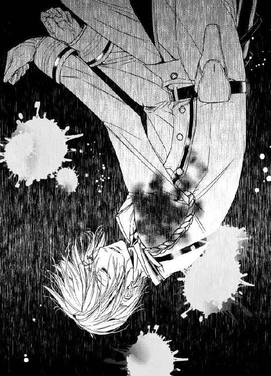
第六章 初恋をもう一度
男達はすぐに捕らえられた。銃声を聞きつけてすぐに人が駆けつけたのだ。彼らが簡単に調べた結果、この研究室には外部に出る隠し通路があったとのことだった。
そんな報告もアリシアの耳には届かない。彼女は目の前のことで気が気ではなかった。
レイモンドの真っ白な軍服の半分が真紅に染まっている。他でもない、アリシアを庇って、彼はその傷を負ったのだ。
すぐに医師が到着しなければ、アリシアは自分がなにをしたかわからなかった。
「弾丸は肩を貫通していますな。命に別状のあるものではありません」
やってきた真っ白な山羊鬚の医師は丁寧に彼の様子を見たあと、安心させるようにそう言った。それでもアリシアの心は乱れたままだった。
レイモンドの目が開かない。
傷のショックで発熱したレイモンドのベッドに寄り添い、アリシアは何度も彼の汗を拭った。
元より彼が目覚めるまでは離れるつもりはなかったが、寄り添う彼女をその場に引き留めるように、意識のないレイモンドは譫言を繰り返す。
「アリシア......行かないで、アリシア......」
アリシアは彼の手を握って、呼びかけた。
「行かないわ。ここに居るわ、ずっと......レイの傍に......」
耳元で何度も囁くと、レイモンドは安心したように眠りに落ちる。いつも以上に白い顔を眺めながら、アリシアは涙が出て仕方がなかった。
自分は一体、何を見ていたのだろう。
こんなにも愛されていたのに。
「アリシア......どうして......」
時折、悪夢を見たように眉根をよせ繰り返される訴えは、胸をかきむしられるように悲痛だった。彼が見ている夢が、実家の破産で自分が姿を消したときのことだと、アリシアにはわかった。
自分はなんてことをしたのだろう。
こんなバカな自分を何故、レイモンドは未だに大事にしてくれるのだろう。
「アリシア様、少しは休まないと......」
定期的に洗面器の水を換えるため訪れるクリスが、心配そうに声をかけた。アリシアは弱々しくかぶりを振る。
「寝られないの......このまま、放っておいて」
「ですが！」
「レイモンドの顔を見ていないと、とても寝られない......」
子供のように駄々をこねるアリシアに、クリスは表情を改めると、きっぱり言った。
「わかりました。ではお食事と飲むものをお持ちしますから、せめて、何かお腹に入れてください」
「何も欲しくない......」
「欲しくなくても食べるんです！」
クリスは、声を張り上げた。
「レイモンド様がお気づきになったときに、アリシア様がやつれていたら、どう思われるでしょう。アリシア様の方が倒れてしまったらどうするんですか。自分の面倒も見られない者に他人の面倒は見られません！」
クリスは真っ直ぐに、アリシアを見て言った。
「レイモンド様は、度々いっておられました。アリシアは、自分を大切にしなさすぎるから、君がちゃんと見張っていて、面倒をみてほしいと」
「............」
自分が面倒をみているつもりだった年若い侍女に諭されて、アリシアは無言でするすると涙を流した。何から何までレイモンドの手の内で、彼に守られていたことを知る。
自分の言葉が届いたのを悟ったのか、クリスは表情を和らげて、膝におかれたアリシアの手を優しく握った。
「お腹に優しい、簡単に食べられるものを持ってきます。それを召し上がったら、髪を綺麗に梳かして、ドレスも着替えて、レイモンド様が気付かれるのを待ちましょう。いいですね」
「ええ......ありがとう」
アリシアは涙を目に湛えながらも、なんとか唇の端で笑ってみせた。
クリスの運んできた温かいスープに口をつけると、アリシアはようやく自分が空腹だったことに気がついた。
それでも、早くは食べられない。ゆっくりゆっくりと口に運んでいく。
ようやく、皿の中味が空になったとき、レイモンドの睫毛が揺れて、アイスブルーの目がぱっちりと開かれた。
「レイっ」
慌てて駆け寄るアリシアに、彼は微笑んで見せる。
「いい匂いがしたと思うんだけど、僕の分はないのかな」
「え、ええっ！ 待ってて、すぐにクリスに頼んで」
「行くな！」
慌てて踵を返そうとするアリシアに、レイモンドは鋭い声をあげた。
びくりと脚を止める彼女に、柔らかく命じる。
「冗談だよ。すぐには食べられない。行かないで、ここに座って」
目で自分の隣を指し示す。アリシアはおずおずと、そこに座った。
「君は、怪我はない？」
「ないわ！ 怪我したのはあなたじゃないの」
アリシアの目からまた涙が零れた。レイモンドが寝床から、手を差し伸べる。アリシアは泣きながら、その手を握った。
「君が無事でよかったよ」
レイモンドは満足そうに言った。
「よくないわ」
アリシアは、唇を尖らせる。
「あなたが怪我したら、全然よくない。自分の面倒を見られない人に人の面倒は見られないのよ」
「違いない」
クリスから言われた言葉をそのまま返すと、レイモンドはくっくと笑った。
「以後、肝に銘じるよ。それより......」
握ったままのアリシアの手を、口元までひっぱってきてキスしながら、レイモンドは上目遣いで言う。
「ずっと、傍にいてくれるって本当？」
アリシアは赤くなった。
「聞こえてたの？」
「ずうっと、夢の中でね。それをあてにして走って戻ってきたみたいなもんだ」
レイモンドは妖しげなことを言った。
「嘘ではないよね」
「ええ......はい」
アリシアは、蚊の鳴くような声で答えた。
「レイがいいなら......私は」
「僕がいいなら、何でもしてくれる？」
「ええ、私にできることなら」
「さっきのお願いと似たようなことだから、問題はないはずだ」
レイモンドは、苦痛を堪えるように、上半身を起こした。
「ちょっ、レイ、無理はしないで！」
「大丈夫......大切なことだから、ちょっと手伝って」
アリシアは慌てて、レイモンドに寄り添い、彼の身体を支えた。
「大事なことなんだ」
レイモンドは言って、アリシアの手を握った。
「レイ......」
不思議そうにするアリシアの目を見てふっと笑い、アリシアの手の甲にキスをする。
「僕と結婚してくれ。この先の生涯をずっと僕の傍で過ごして、二度と離れないという約束をくれ。僕の妻になってほしいんだ」
「えっ......」
アリシアは、少しの間、固まってしまったように動かなかった。
「いいね」
レイモンドが強い瞳で、アリシアを見つめる。アリシアはさらに顔を赤く染めて俯いた。
「ええ......あなたがいいなら」
「ちゃんと返事をして」
レイモンドが言った。
「え？」
「最初のとき、君はいいわと言っただけで、ちゃんと返事をしなかったと思い出したんだ」
言質を取ることは重要だよな、とかなんとかレイモンドは口の中でぶつぶつ言っている。
アリシアは幸せそうに笑った。
「ええ、いいわ......レイ、あなたと結婚する......いいえ、結婚してください」
レイモンドがアリシアに手を差し伸べた。アリシアは少し腰を屈めて、彼の求めに応じる。
二人の唇が優しく重なった。
もう一筋、幸福な涙が、アリシアの頬を伝った。
ベッドに寝ていたのは三日ほどで、すぐにレイモンドは起き出して事務処理を始めた。
捕まった男達の尋問、特にアリシアも知らなかった隠し通路の存在を知っていたところから、軍内部の密通者も明らかにされ、逮捕されたという。
そのニュースがあってから、研究所内はどっと人が増えた。
薬品の製造も、レイモンドの腹心の部下で理学系に強いものが呼ばれて、アリシアの仕事まで奪う勢いで働きだしている。
内の一人は、同じ学園の後輩らしくアリシアに愛想良く挨拶をしてきたが、後でレイモンドに無茶ぶりをされたそうで、そのへんの経緯をクリスが面白おかしく話してくれた。
「ねぇ。レイ。やっぱり私って囮にされてたの？」
二人で食事をするときに無邪気に訪ねると、レイモンドは少し無言で固まっていた。
やがて気まずそうに頷く彼にアリシアは笑ってみせる。
「妥当な判断だと思う。気にすることないのに」
「また君に、誤解されて睨まれるかと思ったんだ......」
「誤解して睨む......ね。やっぱり私、本当に依怙地だったのね」
アリシアは自嘲して微笑む。
学園時代からの二人のすれ違いに関しては、少しずつ少しずつ話し合って歩み寄ってきた。
もっぱら、アリシアがレイモンドの深い愛を理解していなかった、という結論になるので、耳が痛いことではあるが......。
『アリシアは女性として見られない』発言に関しては、レイモンドが、珍しく顔色を変えて平謝りに謝った。
「まさか、君が聞いていたなんて思わなかったんだ！」
「そう......」
割り切って納得できたと思っていたけれど、あの言葉が誤解だとわかってアリシアの心のどこかが軽くなった気がした。ずっと抱えていた古傷が一瞬で消えてしまう感覚は少し不思議で、そんなアリシアの様子を見てレイモンドは更に慌ててしまう。
彼は何も悪くないのに。そう思いはすれど、まさに痛恨の一撃を食らった、という感じのレイモンドの反応は面白くもあった。
「学園の誰にも、君に興味を持ってほしくなかったんだ。誰も僕のアリシアをそんな目で見るなと思ってた。特に話しかけてきたやつは、絶対に君に気があったんだ！」
と、熱弁されたときには、少しだけレイモンドを見る目が変わったような気がした。
アリシアがちょっと引いたのがわかったのか、レイモンドは、
「あの頃は、僕も未熟だったからね......若気のいたりだよ」
と言い訳していたが、同学の後輩のエピソードだけでなく、レイモンドの嫉妬深さは、もはや笑い話として連日アリシアの耳に入ってきた。
「嬉しいけど、いいかげんにしてちょうだい。私、そんなにもてないから......」
「君こそいいかげん、危機意識を持ってほしいな。またお仕置きされたい？」
「極端すぎるのよ！」
などという遣り取りが、日常化している。
かと思えば、夜、少し酒を飲んでほろ酔い加減になると、涼しい顔で、
「あの頃は、君を箱に閉じ込めて、隠しておきたいと思ったな......今回は、少し夢がかなったみたいで嬉しかった」
そう言い始めるのだから。始末に負えない。
そして、それを照れくさくも嬉しく思ってしまうアリシアも、また。
「やっぱり僕は、マティアス少将を殴ったから、謹慎だそうだよ」
負傷後、初めて基地に赴いたレイモンドはすっきりした顔で帰ってきて、ひらひらと辞令をアリシアの前に振ってみせた。
「ええっ......」
顔を青ざめさせるアリシアに、レイモンドは悪戯っぽく笑って見せる。
「君への恋心をこじらせるあまり、暴力沙汰ばかり起こして迷惑だから、一週間くらい旅行にでもいって、落ち着いてこいって」
「え......」
「ついでに君にも休みくれたよ。薬品開発の褒美だってさ。研究所への借金も帳消しだそうだ」
──元々、それは僕が肩代わりするつもりだったから余計なことなんだけど。
少し面白くなさそうに呟く彼に、アリシアも笑って見せた。
以前のように優しい彼だが、笑顔は前よりも多くなったように見える。
「もうっ......」
アリシアは、心配して青ざめた感情の行き場がわからず、レイモンドをぶつ振りをして、首筋にすがりついた。
レイモンドも嬉しそうにその身体を抱きしめる。
「結婚式はもうちょっと準備期間をとって、盛大にやりたいから、婚前旅行だね。どこに行きたい？」
「私はどこでも......」
良いと、言いかけたアリシアが、ふと思いついてレイモンドに言うと、彼は少し目を見張って破顔した。
翌日は、抜けるような青空が広がる晴天だった。馬車で目的地に行く際、二人は以前、馬に乗って訪れた丘の上で途中下車した。
眼下にはあの日と同じ、街と豊富な緑が広がっている。西の彼方に黒ずんだ地帯があることも、また変わっていなかった。
「いつか、あそこも緑に変わればいいのに......」
アリシアは呟いた。
「今すぐは無理だとしても、スーダニアとの争いはずっと解決しないものなの？」
「ずっと、なんてことはないんじゃないかな」
レイモンドは思案気に言った。
「双方が得をしない戦争なんて、それこそ意味なしだ。軍の仕事は僕には面白いけど、性に合わない者もいる。貴重な青春の二年間を棒に振ってまで......と内心思っている者は意外と多いんじゃないかな。幸い王家や国家そのものが、『守るに値する』と思わせてくれるから、衝突は最小限ですんでるけど」
「じゃあ......」
「益がない戦争が長引くのは、それで益を得るものがどこかに居るからだよ。今回の一件の奴らみたいにね。だからそういう災いの種を一つ一つ除いていけば、いつか歩み寄れる日がくるかもしれない」
「そうね......そう思うわ」
アリシアは、知らず胸の前で組んでいた手に力を込めて景色を眺めた。
今すぐには無理でも......私達の子供かその子供の代には、きっと。
そうして、馬車に乗り続けてやってきたのは、昔、一度だけ訪れた、レイモンドの実家の別宅だった。
「ヴィリエ侯爵としての領地と邸は別にあるけど......いいの？」
「それはどうせまた、訪れることになるんでしょ？」
微笑むアリシアの左手には、過去に一度、レイモンドに送り返した小さなダイヤの指輪がひっそりと輝いている。
あいにくレイモンドの家族は、今は本宅の方に居るということだったが、二人が手を取り合って入っていくと使用人達が何人も恭しくお辞儀をした。
レイモンドの手に引かれて、アリシアはかつてひとときを過ごした書庫に入っていく。
「ここのこと、何度も夢にみたわ」
明かり取りの窓から柔らかな光が射し込むソファに座り込むと、アリシアはうっとりと周りを眺め回した。
「侯爵家の蔵書の方が豊富にあるけど」
「そういうことじゃなくてね......」
アリシアが言うと、レイモンドは、ふっと目を細めた。
「わかってる」
二人が初めて深く触れ合い、そしてその後、触れることなく別れてしまった想い出の場所である。近付いてくる気配を感じて、アリシアは自然に目を閉じた。
柔らかく触れてくる唇に、自然と唇を開いて、彼を受け入れる。
レイモンドの重みがかかってきて、アリシアはソファに沈められた。
そのまま何度も何度も唇を交わす。互いの舌を甘噛みし、かすかな痛みを楽しむように愛撫しあう。
レイモンドはアリシアのうなじに唇を這わせ、柔らかい胸の感触を楽しむように揉んでいたが、やがて振り切るように立ち上がり、アリシアを抱き上げた。
「レイ？」
「もう大人だから、こんな半端なところではダメだ」
レイモンドは、甘やかな眼差しで、アリシアの顔が自分の目の高さになるよう抱え上げて、口付けを贈る。
「ベッドに行こう」
初めて連れ込まれた別宅のレイモンドの部屋のベッドは、天蓋付きで、研究室のものの倍以上の広さがあった。柔らかいスプリングの上に弾みをつけて落とされ、深いくちづけと共に沈められて、アリシアは息も絶え絶えだ。
もう何度も彼とそういうことはしているのに、妙に緊張する。
「あ、あの、私脱ぐから......」
「僕が脱がせたい、ダメ？」
「ダメ、じゃないけど......」
レイモンドは、あちこちにさわったりキスしたりしながらゆっくりと脱がすので、恥ずかしくて仕方がないのだ。
シュミーズの肩紐だけがするりと下ろされた。と思うと、肩口にくちづけられる。
うなじ、首元、唇へと、彼の吐息が触れる場所が変わっていく。同時に彼の片手がやわやわと胸を揉んだかと思うと、またするりと滑って、他のところで遊びだした。
すべてが丁寧でまどろっこしい。
「せめて、もうちょっと真面目にやって」
「真面目に......ね」
レイモンドはくすりと笑った。
「ちょっ......ねえ、怒るわよ！」
「ごめんごめん、わかるけど......もう少し堪能させて」
くすりとレイモンドが笑った。アリシアが大好きだった。優しい微笑み。
「なんていうか、ずーっと欲しくてたまらなかった、大好きなお菓子を少しずつ少しずつ、舐めたり囓ったりして眺めていたい気分なんだ」
「なっ、私はお菓子じゃないわよ！」
アリシアは顔を赤くして言った。ちょっとふくれた顔で、レイモンドの両頬を両手で挟んで目を合わせる。
「お菓子じゃないから、なくなったりはしないわ。それに......何度でもできるし」
アリシアは、小さな声でそう言った。レイモンドが目を細める。
そんな彼に言葉を重ねる前に、急にまたアリシアの身体がベッドに沈められた。性急な手つきで、ドレスをはがれ、下着をむしり取られる。
「だからって、急にっ、レイ！」
抗議するように手足をばたつかせたが、すぐにレイモンドにのしかかられ、キスの雨が降ってきた。
「もっと君を堪能したかったのに、そんなに誘われたら理性がもたない」
低い声で言われ、双つの膨らみを手でこねられた。重みを楽しむように、下から掬い上げるように楽しまれながら、先端をちゅうと吸われる。
「あっ...あっ......」
身もだえると、もう片方も吸われた。
「左の方が感じるみたい？」
「わ、わからないっ、あっ......」
「でも右も気持ちよさそうだ」
レイモンドの繊細な細い指が脳裏に蘇る。女の子みたいに綺麗なのに、手を合わせたら自分よりずっと大きくて力強い。その手にすっぽりと胸をくるまれている。
温かくて、気持ちいい。
「ん、いい......気持ちいいわ」
アリシアは、素直に口に出していた。何度か、彼に懇願するようにそう言えと言われたことを思い出したのだ。
あのときは、いくら身体が快楽を受け取っていても、心が、唇が拒否していた。だけど今は違う。全てが調和して欠けたところが埋まったみたいだ。
レイモンドに、大好きな彼に触れられるのは、愛されるのは、気持ちいい。
「アリシア」
感極まったように、レイモンドはぎゅうっと彼女を抱き締めてきた。
そのまま唇を塞がれる。舌を絡め合い、手足も絡ませあって、葡萄の蔓みたいにぐちゃぐちゃになって、長いことキスを交わしていた。
ようやく名残惜しげに唇を離して、レイモンドがアリシアを見下ろした。瞳は明るくかがやき、いとおしげにアリシアの前髪をかきあげ、額にキスを落とす。
「僕がどれだけ幸せかわかるかい？」
彼は秘密を打ち明けるように囁いた。アリシアは赤くなる。
「そんな大袈裟な......」
「やっと、本当に君に触れられる」
「今更......」
アリシアはさらに耳たぶまで赤く染めて、横を向いた。
今までレイモンドにされた、数々の無体なことが、記憶に蘇ってきたのだ。自分にも非があったことは重々承知なので、蒸し返す気はない。ないけれど......。
「確かに今更だね、でも本当に、こうしたかったんだ」
レイモンドの顔が、アリシアの胸に埋められ、さらにキスを繰り返しながら下りていってもアリシアは抵抗しなかった。
「は、あ、あああん」
脚の奥の花びらを、一枚一枚、ほぐしていくように舐められて、アリシアは嬌声をあげた。指とは違う、優しくて濡れた感触が気持ちよくて仕方がない。以前、こうされたときは、腕を縛られ、口も塞がれていた。今は違う。
自分でも滅多に触れないような場所を、レイモンドに舐められている。そう思うと羞恥心がじわじわとこみ上げてくるけれど、気持ちよさにはかなわなかった。
「アリシアは、これ、好きだよね、反応が全然、違う」
花びらの奥でふっくらと膨れた花芯を舐め回しながら、レイモンドが言った。そこが一番弱い自覚があるアリシアは涙目になりながら、彼を睨むしかない。
「指で中を刺激してあげると、もっと、ね......」
レイモンドは、蜜口を二本の指で広げさせながら、嬉しそうにいった。少し開いた感じの指を挿入され、ぐるぐるとかき混ぜられる。
「あ、あああん」
すぐに達してしまいそうになるのをアリシアは必死で堪えた。何故か悪い予感がひしひしとしている。
「ね、ベッドに移っておいてよかったろう？」
少し手を止めたレイモンドが、悪い笑みを浮かべた。
「書庫だと誰かが捜しに来てしまうからね。ここなら呼ばない限り、放っておいてくれる」
「レイ、あなたまさか......」
アリシアは少し顔を引きつらせながら、後退った。
「うん、ゆっくり飽きるまで愛してあげるよ、なんなら一日中......」
「い、いえ、私、そこまで長くは。おなかもすくし、家の人に変に思われても......んっ」
再び身を沈めたレイモンドに花びらを咥えられ、舐め上げられてアリシアは身体を撥ねさせる。
唾液でぬるぬるになったところに、さらに蜜が垂れて、恐ろしいことになっていそうだ。
自分の身体の奥でレイモンドの舌がひらめくのを感じて、アリシアは身体を揺らした。花芯を直接転がされるのもそうだが、陰唇と花芯のあわいの溝に沿わせるようにつっと舐められると気持ちよくて仕方ない。
「あ......ん」
器用な指が、奥に突っ込まれて何度も行ききした。少し折り曲げられ、よいところを突かれると甘えるような声が止められない。
「んっ、どんどん溢れてきたよ」
レイモンドは楽しそうだ。
「今度、またあの痒くなる薬を使ってみる？ お仕置きだと思わなければずいぶん、気持ち良かったんじゃない？」
「やっ、あれはいやっ......」
囁かれるだけで、あのときのことを思い出しそうになって、アリシアは身を捩った。確かに気が狂いそうなほど気持ちが良かったけれど、過ぎる快楽はまだ辛い。
「それは嘘じゃなさそうだ。さすがにまだ早いか」
レイモンドは苦笑する。
〝まだ〟じゃなくて、あれは二度と嫌だといっているのに。
「嫌だっていうのを信じてほしければ、いいときに嫌とは言ってはダメだよ、学習したよね」
こくこくと頷くアリシアに微笑みかけて、レイモンドはまだ、指と舌で、あそこを愛撫するのをやめない。
「んんっ......」
ちゅうっと、陰唇全体に吸いつかれて、ちろちろと蜜口を舐められて、アリシアは身体を仰け反らせた。
「いい？」
必死で頷くも、レイモンドは不満そうだ。
「ちゃんと声に出すんだよ。気持ちいい？」
「い、いい。気持ち、いいの......」
膣口に舌を入れられて、かきまわされるのに、陶然としながら、アリシアは答えた。
「いい子だね」
レイモンドは、アリシアの髪を撫でながら、キスを送る。
そうして、アリシアを何度も昇りつめさせ、啼かせて、身も心もとろとろにしてから、ようやくレイモンドは中に入ってきた。脚を割り開かれ、片膝を抱え上げられて、露わになったとこに、熱いものが押し当てられる。
蕩けきった花襞は、固く張り詰めた彼も喜々として呑み込む。
慎重に入口を割った彼も、その熟れきった感触にほっとしたのか、途中からは遠慮なしに、ぐぐっと楔を打ち込んできた。
「ああっ」
奥を突かれる衝撃に、痛みではない、紛れもない快楽を受け取って、アリシアは身体を仰け反らせる。きゅううっと、内壁が彼のものを締め付けた。
「アリシア......いいよ」
掠れた声で、レイモンドが言う。中のものを知らしめるように、彼がゆるゆると腰を動かす。アリシアも逆らわず、快楽のツボをさがすように腰を揺らした。
「レイも......気持ちいい？」
「ああ、君の中は温かくて......ぬるぬるしてて、僕を包み込んでくる。最高だ」
彼が何かを確認するように、奥を二、三度突き上げる。
「あ、ああっ」
擦られて、突かれる感触が悦くて、アリシアは、素直に嬌声をあげた。
そうして、二度、三度とアリシアが昇りつめ、レイモンドも二度ほど、精を吐きだした後のことだ。
「ちょっと、身体を起こしてみていい？」
息を荒くしながら、レイモンドがアリシアの顔を覗き込んだ。
「えっ、きゃっ」
レイモンドに背中を支えられ、ゆっくりと起こされて、アリシアは悲鳴をあげた。
彼の胸に倒れ込むようにして座り込む姿勢になる。自分の重みで、彼をより深く呑み込む形になって、アリシアは短く声をあげた。
下から軽く突き上げられて、不安定な姿勢で必死に彼にしがみつく。
「ふふっ、いいよ、もっと僕にしがみついていて」
「レイ、レイ、これはちょっと怖くて、やん」
「まだまだ、君とはいろんなことをやりたいんだ」
アリシアをあやすように揺さぶりながら、また彼は突き上げる。何度か繰り返されるうちに、やっとアリシアも慣れてきて、調子を合わせられるようになった。
そうっと、顔をあげて、レイモンドの顔を見つめる。
「大丈夫そう？」
「え...え......」
レイモンドは嬉しそうにアリシアにキスした。
「じゃあ、少しだけ離れて、自分で動ける？」
「え？」
レイモンドはアリシアの腰に手をやって、少しだけ自分から距離を取らせた。アリシアはレイモンドの膝に座り込んでいる格好から、膝で自分を支えている感じになる。
「そら、少しだけ腰を引いてみて」
レイモンドが促すように、アリシアの腰を支えながら少し持ち上げた。奥深くに収まった彼が、内壁を擦りながら抜けていく。
「ああっ」
抜けていくときに、今まで知らなかった感覚が背中に走った。レイモンドは途中まで抜くと、手を離し、重力に任せてアリシアの身体を落とす。
「ひっ......ん」
自重で楔をより奥深くまで呑み込む感覚に、アリシアは腰を震わせる。気持ち悪いのか気持ちいいのかすぐには判断できないくらいの衝撃。
「気持ちいいだろう？」
レイモンドに問いかけられると、そんな気もしてくる。
「自分の気持ちいいように動けばいいんだ。やってごらん」
「え......え」
レイモンドの肩に手をおいて、アリシアはそっと、自分の腰を浮かせた。
また、ぬるりと、抜けていく感触がする。
やっぱりさっきと同じ、ぞくん、ぞくんとする感覚を受け取って、アリシアは、すぐに腰を下ろしてしまった。肉棒が再び、体内に呑み込まれる。
「んっ！」
「そう......うまいよ、アリシア。もっと続けて......」
レイモンドの目があきらかな熱を欲を湛えて、自分を見ている。アリシアは潤んだ目でそれを見返した。
「レイも、これ、気持ちいいの？」
「ああ......君に求められている気がして、最高に気持ちがいい」
それはアリシアの望んだものとは違うような気がしたが、彼に笑いかけられるとどうでもよくなった。アリシアは恐る恐る。腰をあげては、落とすことを繰り返す。
「あ......あん」
ゆるゆると、横に揺れることも覚えた。レイモンドは、微笑みを浮かべながら、だんだんと自分でも突き上げはじめてくる。
揺れが激しくなって、慌ててアリシアはレイモンドの首にしがみついた。
「やっ、怖いっ、もう少しゆっくり、いやあ」
「嫌じゃない。嫌じゃないだろ、アリシア......僕の」
自分でも、めちゃめちゃに腰を擦りつけながら、いじめられて、アリシアは滅多にいかない深い絶頂へと導かれてしまった。
精も根も尽き果てて、レイモンドの横に倒れ込む。
彼がすかさず、彼女を抱きしめた。
「よく頑張ったね、いい子だ」
レイモンドが、子供に贈るような額のキスをしてくる。
「頑張ったから......今度はゆっくりしてあげよう」
「え、や、私はもう、今夜はもういいっていうか......や、ア......」
若い二人の夜はまだまだ終わりそうになかった。
数ヶ月後、王都の大教会で、ヴィリエ侯爵と、アリシアの結婚式が行われた。
そこにはマティアス少将や、アリシアの両親、そしてレイモンドの両親の姿も見受けられた。
「アリシア、幸せかい？」
レイモンドは、ようやく手に入れた花嫁に、優しく話しかけた。アリシアは、うっとりした微笑みで答える。
「ええ、幸せよ。あなたは？」
レイモンドは満足そうに、花嫁を抱きしめた。
「僕は君がそこに居てくれたら、いつだって幸せだ」
あとがき
初めまして。水嶋凜です。このたびは『甘い束縛 軍人侯爵の淫戯』をお手にとっていただきありがとうございます。自分の中では「ソフトヤンデレ」と呼んでいるジャンルです。
ヒーローのレイモンド君、そこまで壊れてはいないと思うのですが、その愛の深さと執念深さには若干、引き気味です。おまえそれどこで覚えてきた、とかどこで用意したんだみたいなプレイとお道具の数々......深く突っ込まない方がいいんでしょう。軍隊の闇は深いです。
ヒロインのアリシアはよく言えば天然......なんですかね。大人しく見えてけっこう危なっかしい子です。それで余計にレイモンドがぐるぐるするという......割れ鍋に綴じ蓋カップルです。
イラストのみずきたつ様、原稿が遅れまくって大変なご迷惑をおかけいたしました。いただいた美しいラフを見ながら歯を食いしばって原稿を仕上げました。アリシアもレイモンドも、もの凄く魅力的に描いてくださって、感謝いたします。
その他も関係者の皆様に多大なご迷惑をかけましたことを深くお詫び申し上げます。
最後にここまで読んでくださった方々に大きな感謝を。楽しんでいただけたら幸いです。
水嶋凜
Story
水嶋 凜
みずしま りん
鍋の美味しい季節ですね。
本作カップル、本質は両方天然なので実験用の鶏とかを後で平気で鶏鍋にして食べてるかも。
Illustration
みずきたつ
はじめまして、みずきたつです。
絵や漫画を描いています。
ブルネット＆ウエーブヘアの女の子と白手袋という２大好物を目の前に喜びを隠しきれません。

蜜猫文庫をお買い上げいただきありがとうございます。
この作品を読んでのご意見・ご感想をお聞かせください。
あて先は下記の通りです。
〒102-0072 東京都千代田区飯田橋 2-7-3
㈱竹書房 蜜猫文庫編集部
水嶋凜先生／みずきたつ先生
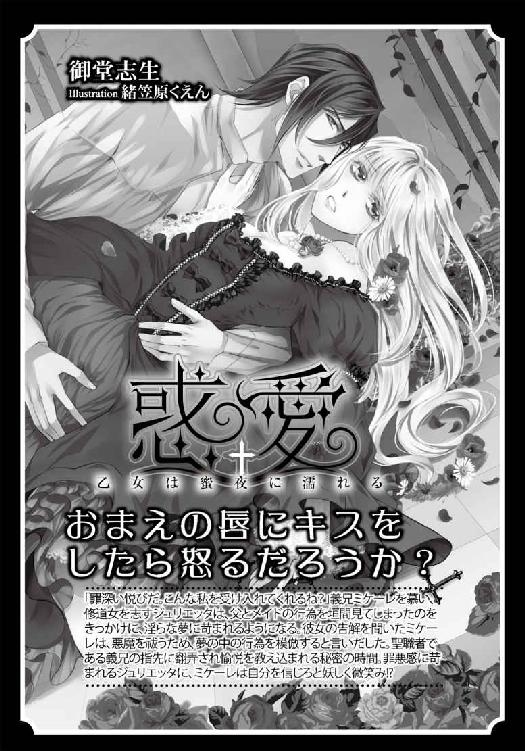
甘い束縛［電子書籍版］
～軍人侯爵の淫戯～
発行日 ２０１５年５月１日 発行
著 者 水嶋凜
デザイン antenna
発行者 後藤明信
発行所 株式会社竹書房
〒１０２－００７２
東京都千代田区飯田橋２－７－３
ＴＥＬ ０３－３２６４－１５７６
データ加工 有限会社ワイズネット
©MIZUSHIMA Rin 2015
本書の一部あるいは全部を著作権者および株式会社竹書房に無断で複写・複製すること、および放送・上演・公衆送信（ホームページ上への掲載を含む）などは、法律で認められた場合を除き著作権の侵害となります。